PDF handbook
The handbook combines the guides and public API index. The complete searchable reference, including internal and legacy entries, is available on the website. You can also use the browser’s Save as PDF command to export this page.
Contents
- Installation and first scripts
- How the particle simulation works
- How the covariance analysis works
- Run and customize the Hera analysis
- Analysis setup
- Bodies and states
- Gravity and estimated parameters
- Shapes and Kaula priors
- Observations and schedules
- Noise, a priori information and solvers
- Consider parameters and covariance histories
- Local-field gravity covariance
- Multi-arc covariance and estimation
- Results and exports
- Model comparisons
- Hera paper reproduction
- Dimorphos tumbling playground
- Particle trajectories
- Example scripts
- Particle and impact covariance
- 3D approach and impact covariance
- Long approaches and flybys
- Surface close-ups
- Equations and conventions
- Glossary and notation
- Derivative validation
- Extension interfaces
- Capabilities and limits
- Troubleshooting
- Public API index
Installation and first scripts
Set up the environment
You need Python 3.11 or newer, uv, a C++ compiler, CMake, pkg-config, Armadillo and OpenBLAS. From the BASCO folder:
python3 tools/dev.py setup
This creates one environment outside the repository, with plotting and automatic
differentiation included, and installs BASCO into it in editable mode: edits under src/
take effect at once. Run setup again only after changing the C++ code in native/, the
dependencies, or after moving or deleting a module.
In every new terminal:
source tools/activate
After that, python my_script.py and pytest use BASCO directly. To check the installation:
python3 tools/dev.py test
A first particle script
Save this as my_particles.py anywhere:
import numpy as np
from basco import particles as bp
environment = bp.didymos_environment(state="AC2")
site = environment.site("Dimorphos", latitude_deg=0.0, longitude_deg=180.0)
# Five particles 10 cm above the site, launched straight up at 2 to 6 cm/s.
position = np.tile([0.0, 0.0, 0.1], (5, 1)) # x east, y north, z up [m]
velocity = np.array([[0.0, 0.0, v] for v in (0.02, 0.03, 0.04, 0.05, 0.06)]) # [m/s]
initial_conditions = bp.InitialConditions(position, velocity)
trajectories = bp.propagate(environment, initial_conditions, site=site, duration_s=3600.0)
for key, value in trajectories.summary().items():
print(f"{key}: {value}")
bp.plot_trajectories(trajectories, frame="Dimorphos", file="trajectories.png")
python my_particles.py
Initial conditions can also come from a CSV file with the columns x_m, y_m, z_m, vx_m_s,
vy_m_s, vz_m_s (bp.read_initial_conditions). How the particle simulation
works explains each line and the code behind it.
A first covariance script
import numpy as np
import basco.covariance as bc
primary = bc.Body("primary", bc.UniformEllipsoid(axes=[400.0, 350.0, 300.0], density=2200.0))
secondary = bc.Body("secondary", bc.UniformEllipsoid(axes=[90.0, 75.0, 60.0], density=2200.0))
separation = 2000.0
rate = np.sqrt(bc.G_SI * (primary.mass + secondary.mass) / separation**3)
state = bc.BinaryState(
position=[separation, 0.0, 0.0],
velocity=[0.0, separation * rate, 0.0],
omega_primary=[0.0, 0.0, 2.0 * np.pi / 14400.0],
omega_secondary=[0.2 * rate, 0.1 * rate, rate],
A_to_N=np.eye(3),
B_to_A=np.eye(3),
)
model = bc.BinaryModel(bc.BinarySystem(primary, secondary, state), bc.HouGravity(mutual_order=4))
parameters = (
bc.EstimatedParameters(model)
.estimate_masses()
.estimate_moments(degrees=(2,))
.estimate_harmonics(degrees=(3, 4))
.estimate_initial_state()
)
observations = bc.ObservationSchedule.uniform(
stop=3600.0,
cadence=600.0,
observation_types=[
bc.RelativePosition(sigma=1.0),
bc.BodyAttitude("primary", sigma=np.deg2rad(1.0)),
bc.BodyAttitude("secondary", sigma=np.deg2rad(1.0)),
],
)
analysis = bc.CovarianceAnalysis(model, parameters, observations, bc.RK4(dt=60.0))
design = analysis.design_matrix() # integrates the variational equations
result = design.covariance()
print(result.summary())
print(result.mass_properties().summary())
Units are metres, kilograms, seconds and radians; astropy quantities are accepted too.
One hour of observations is too short to determine everything, and the summary says so: it reports the rank and lists no sigma for quantities that are not determined. A longer span alone does not guarantee that everything is determined; that depends on what is observed and on what is estimated.
position and velocity of BinaryState are the inertial relative position and velocity
with components in the primary's frame. A_to_N takes components in the primary's frame to
the inertial frame, B_to_A from the secondary's frame to the primary's.
How the covariance analysis works explains each line and the code behind it.
Figures and saved results
folder = bc.export_analysis(design, result, "results", label="my-binary", figures=True)
print(folder)
writes the tables, the arrays and the standard figures to a new folder under results/. Add
theme=bc.PlotTheme(tex=True) to draw the text with LaTeX, which must be installed.
The Hera paper's analysis
python examples/covariance/hera/one_case.py
runs one case of the Hera covariance paper and prints its formal uncertainties next to the
paper's Table 2. Set ORBITS = 1 at the top of the script for a quick look; the paper's 16
orbits take about 25 minutes.
The examples
examples/README.md lists every example with what it shows and how long it takes. Each has its settings at the top and runs from top to bottom.
Partials: automatic differentiation or hand-derived
The partials of the equations of motion come from automatic differentiation (JAX) by default. To use the hand-derived expressions of the GUBAS code instead:
analysis = bc.CovarianceAnalysis(model, parameters, observations, bc.RK4(60.0), partials="analytic")
The two agree to rounding. If the chosen one is not available, BASCO raises an error; it never switches to the other silently.
How the particle simulation works
This page follows a particle from a row of a table to a line on a figure, and says which file does each step. Read it next to the code: every heading names the file to open.
The code is in src/basco/particles/. The shortest complete script is
examples/particles/1_launch_from_surface.py.
What is computed
Two bodies (Didymos and Dimorphos) move under their mutual gravity and rotate. A particle is a point with no mass of its own. It feels the gravity of both bodies, and optionally the Sun; it does not move the bodies, and particles do not feel each other. The propagation of a particle ends when it reaches a body's surface. There is no bouncing.
The script, line by line
from basco import particles as bp
environment = bp.didymos_environment(state="AC2")
site = environment.site("Dimorphos", latitude_deg=0.0, longitude_deg=180.0)
initial_conditions = bp.read_initial_conditions("data/milani_bed1/dimorphos.csv")
trajectories = bp.propagate(environment, initial_conditions, site=site, duration_s=24 * 3600)
bp.plot_trajectories(trajectories, frame="Dimorphos", file="trajectories.png")
| Line | What you get | File |
|---|---|---|
didymos_environment |
The binary, its two shape models and the gravity model | environment.py |
environment.site |
A point on a body's surface with east, north and up axes | sites.py |
read_initial_conditions |
A table: one position and one velocity per particle | initial_conditions.py |
propagate |
The trajectory and the outcome of every particle | trajectories.py |
plot_trajectories |
A figure | plots/figures.py |
Underneath propagate:
| What | File |
|---|---|
| The propagator: integration steps and event detection | propagator.py |
| The equations of motion | dynamics.py |
| Solar gravity and radiation pressure (optional) | solar.py |
| The small classes the propagator takes and returns | state.py |
Frames and units
Everything is in SI units (metres, seconds, kilograms), with one exception named below.
| Frame | Origin | Axes |
|---|---|---|
| Inertial | The binary's barycentre | Fixed in space |
| Body-fixed, one per body | The body's centre of mass | The body's principal axes; they rotate with the body |
| Site | A point on the surface | x east, y north, z up (the surface normal averaged over a small patch) |
| Rotating | The barycentre | x from the primary to the secondary, z along the orbit's angular momentum |
The exception is the binary's own state, which is stored the way GUBAS stores it: 30 numbers
called the GUBAS state (src/basco/binary/state.py).
| Entries | Meaning | Unit |
|---|---|---|
| 0 to 2 | Position of the secondary relative to the primary, in the primary's frame | km |
| 3 to 5 | Velocity of the secondary relative to the primary, in the primary's frame | km/s |
| 6 to 8 | Spin of the primary, in the primary's frame | rad/s |
| 9 to 11 | Spin of the secondary, in the primary's frame | rad/s |
| 12 to 20 | Rotation matrix from the primary's frame to the inertial frame, row by row | none |
| 21 to 29 | Rotation matrix from the secondary's frame to the primary's frame, row by row | none |
body_poses in src/basco/binary/poses.py turns those 30 numbers into what the particle code
uses: for each body its centre c [m], its velocity [m/s], its body-to-inertial rotation matrix
C and its spin vector. The barycentre stays at the origin, so with r the relative position and
m1, m2 the masses, the centres are -m2 / (m1 + m2) r and +m1 / (m1 + m2) r.
Step 1. The environment (environment.py)
didymos_environment(state="AC2") builds an Environment:
- The masses and the initial state are those of the Hera paper (
data/hera_paper), for one of its four rotation states AC0 to AC3 (src/basco/binary/didymos.py). - The shape models are
data/shapes/didymos.objanddimorphos.obj, moved so that the centre of mass is at the origin and the principal axes are x, y and z. - The inertia integrals of each body, which the binary's mutual gravity needs, are computed from the same shape models. The binary and the particles therefore see the same two objects.
gravitychooses the gravity of each body on a particle:
gravity= |
Model | Valid |
|---|---|---|
"polyhedral" (default) |
Constant-density polyhedron of the shape model (Werner and Scheeres) | Everywhere outside the surface |
"hou" |
The series used for the binary's mutual gravity | Outside the body's Brillouin sphere only |
"hou_no_brillouin_check" |
The same series, evaluated inside that sphere too | Not guaranteed inside; for comparisons |
"point" |
A point mass | Everywhere |
The Brillouin sphere of a body is the smallest sphere about its centre of mass that contains the whole body. A series in powers of 1/r converges only outside it, so a particle launched from the surface needs the polyhedral model.
Step 2. The site (sites.py)
environment.site("Dimorphos", latitude_deg, longitude_deg) finds where that direction from
the body's centre meets the surface and builds the east-north-up frame there. "Up" is the
surface normal averaged over a patch of 10 m radius, so that one tilted facet does not tilt the
whole frame. Latitude is measured from the body's x-y plane toward +z, longitude from +x
toward +y.
Step 3. The initial conditions (initial_conditions.py)
A table with one row per particle: position x_m, y_m, z_m and velocity vx_m_s, vy_m_s,
vz_m_s. It comes from two arrays in your script or from a CSV file. The table does not know
its frame. You state the frame when you propagate:
site=site: the site frame, with velocities relative to the ground;body="Dimorphos": that body's fixed frame, with velocities relative to the rotating body;- neither: the inertial frame.
Environment.inertial_states converts the table to inertial states. For a point p moving at
u in a body's frame,
r = c + C p
v = v_body + dC/dt p + C u
where dC/dt p is the velocity of the rotating ground under the point. A site adds one step before that: p = site point + E s, with s the position in the site frame and E the matrix whose columns are east, north and up.
Step 4. Batches (trajectories.py, propagate)
The particles are sorted by speed and cut into batches of batch_size (4 by default). One
batch is one integration: one copy of the binary and the particles of that batch, all advanced
with the same steps. Batches are independent, so with workers=8 eight of them run at the
same time in separate processes. With checkpoint=folder, each finished batch is written to
that folder and an interrupted run continues from there.
Because the particles of a batch share their step sizes, results change in the last digits
when the batching changes. batch_size=1 removes that dependence and is slower.
Step 5. The equations of motion (dynamics.py)
The state vector of one batch is the GUBAS state of the binary followed by six numbers per
particle (inertial position r and velocity v). ParticleDynamics returns its time derivative:
- The binary follows the Hou equations of the full two-body problem. The particles do not enter them.
-
For each particle and each body: q = C^T (r - c) is the particle's position in the body's frame, g = field.value(q) is the body's gravity there, and C g is that acceleration in inertial axes. So
dr/dt = v dv/dt = C_1 g_1(q_1) + C_2 g_2(q_2)
-
With a Sun in the environment,
solar.pyadds the solar tide and radiation pressure.
Step 6. The propagator (propagator.py)
propagate_particles integrates one batch. The integrator is DOP853 (adaptive, 8th order),
with a relative tolerance of 1e-10 and absolute tolerances of 0.1 mm and 1e-8 m/s.
The event functions are the signed distances from each particle to each boundary: positive
outside, zero on the boundary. The boundaries are the two surfaces and, when the gravity
model is the Hou series, the two Brillouin spheres. One step of the propagator
(Propagator.step) does this:
- Evaluate the event functions.
- A particle within the event tolerances of a boundary and approaching it is terminated there.
- The step size is limited so that no particle can cover more than 80% of its distance to a boundary in one step.
- Take the step.
- If an event function changed sign during the step, the time of the crossing is located by root finding (Brent's method) on the step's dense output. The propagation goes back to that time and that particle is terminated there. The others continue.
- The states at the regular output times (every
cadence_s) are saved, from the dense output.
A particle's propagation therefore ends with one of these terminal events, or with none:
| Terminal event | Meaning |
|---|---|
impact |
It reached a body's surface |
domain_exit |
It entered a Brillouin sphere while the gravity model was the Hou series |
grazing |
It left a surface and came back within the event tolerances |
completed |
No terminal event by the final time |
Step 7. What is kept (trajectories.py, _reduce and Trajectories)
After each batch, _reduce computes for every saved state the position in each body's fixed
frame, q = C^T (r - c), and the altitude above each surface. For a particle that impacted it
also computes the velocity relative to the rotating surface, C^T (v - v_body) - omega x q.
Trajectories holds all particles together and gives one value per particle:
| Attribute | Meaning |
|---|---|
outcome |
"impact", "in_orbit", "escape" or "domain_exit" |
impact_body |
Name of the body it hit, or "" |
flight_time |
Time of flight [s] |
v1 |
Speed at the initial time [m/s], in the frame of the table |
v2 |
Speed at impact relative to the surface [m/s] |
impact_point |
Where it hit, in that body's fixed frame [m] |
impact_distance |
Straight-line distance from the site to the impact point [m] |
A particle with no impact by the final time is in orbit or escaping. The test is the sign of
its two-body energy about the barycentre at the final time, v^2 / 2 - G (m1 + m2) / r:
positive means "escape", otherwise "in_orbit". The binary is treated as one point mass for
this test only.
trajectories.positions(i, frame) gives the positions of particle i in a body's fixed frame,
the inertial frame or the rotating frame. trajectories.save(folder) writes everything, and
bp.load_trajectories(folder) reads it back, so figures can be redrawn without propagating
again.
Step 8. Figures and animations (plots/)
plots/figures.py has one function per figure and plots/animation.py has animate. Select
particles first, then draw them:
impacting = trajectories.impacting("Dimorphos")
bp.plot_trajectories(impacting, frame="Dimorphos", file="a.png")
Particles that impact the body they started from are best drawn in that body's fixed frame,
the others in the rotating frame. The words on the figures are in plots/text.py (LABELS)
and can be changed from your script.
Where to change things
| To change | Open |
|---|---|
| The binary, its state, the shapes or the gravity model | environment.py, didymos_environment |
| How a site frame is built | sites.py, make_site |
| The columns of the table | initial_conditions.py |
| Batching, worker processes, checkpoints | trajectories.py, propagate |
| A force on the particles | dynamics.py, ParticleDynamics.__call__ |
| Tolerances and step sizes | propagator.py, IntegratorSettings |
| When a particle is terminated | propagator.py, boundary_distances and Propagator.step |
| What is computed from a finished propagation | trajectories.py, _reduce and Trajectories.__init__ |
| A figure | plots/figures.py |
After a change that should not alter numbers, run the tests:
python3 tools/dev.py test
tests/particles/ covers this package.
How the covariance analysis works
This page follows a covariance analysis from the definition of the binary to a table of uncertainties, and says which file does each step. Read it next to the code: every heading names the file to open.
The code is in src/basco/covariance/, with the binary in src/basco/binary/ and the
variational equations in src/basco/dynamics/. The shortest complete script is
examples/covariance/basics/custom_binary.py.
What is computed
A covariance analysis asks: if these quantities were observed at these times with this noise, how well would they determine these parameters? No observation values are needed. What is needed is how each observation changes when each unknown changes (the partial derivatives), and the noise.
Write x for the unknowns and y for all observations. Near the nominal trajectory, dy = H dx, where H is the design matrix. If every row of H is divided by the noise sigma of its observation (whitening), the covariance of the least-squares estimate of x is
P = (H^T H + a priori information)^-1
The 1-sigma uncertainty of an unknown is the square root of its diagonal entry of P. These are formal uncertainties: they are as good as the dynamical model, the observation model and the noise that went in.
The script, line by line
import basco.covariance as bc
model = bc.BinaryModel(bc.BinarySystem(primary, secondary, state))
parameters = (
bc.EstimatedParameters(model).estimate_masses().estimate_moments().estimate_initial_state()
)
observations = bc.ObservationSchedule.uniform(
stop=6 * 3600.0, cadence=600.0,
observation_types=[bc.RelativePosition(sigma=1.0), bc.BodyAttitude("secondary", 0.02)],
)
analysis = bc.CovarianceAnalysis(model, parameters, observations, bc.RK4(dt=60.0))
design = analysis.design_matrix()
result = design.covariance()
print(result.summary())
print(result.mass_properties().summary())
| Line | What you get | File |
|---|---|---|
BinaryModel |
The two bodies, their initial state, the order of the mutual gravity | binary/models.py |
EstimatedParameters |
The list of unknowns | binary/parameters.py |
ObservationSchedule |
What is observed, when, and how precisely | covariance/observations.py |
CovarianceAnalysis |
The inputs together | covariance/analysis.py |
design_matrix() |
The trajectory, its partials, and H | dynamics/, covariance/design_matrix.py |
covariance() |
P and what it means | covariance/solvers.py, covariance/results.py |
mass_properties() |
A report with sigmas | binary/derived_parameters.py |
design_matrix() is the expensive step, because it integrates. covariance() is linear
algebra on the result and takes a fraction of a second, so noise, a priori information and
the choice of estimated parameters can be changed without integrating again.
Step 1. The binary (binary/models.py, binary/state.py)
A body is described by its inertia integrals
T_lmn = integral of x^l y^m z^n dm
over the body in its own frame (centre of mass at the origin, principal axes). T_000 is the
mass. UniformEllipsoid computes them in closed form; InertiaIntegrals takes a table, for
example from a shape model (TriangleMesh.to_distribution).
BinaryState is the state at the initial time: the position and velocity of the secondary
relative to the primary, both spin vectors, and both attitudes. While it is propagated it is
stored as 30 numbers, the GUBAS state (binary/state.py lists them).
HouGravity(mutual_order) chooses how many terms of Hou's series for the mutual gravity are
kept: 2, 4 or 6.
Step 2. The unknowns (binary/parameters.py)
EstimatedParameters(model) collects what is estimated:
| Call | Unknowns |
|---|---|
estimate_masses() |
primary.mass, secondary.mass |
estimate_moments(degrees=(2,)) |
The inertia integrals of that degree divided by the mass, such as primary.T200 |
estimate_harmonics(degrees=(3, 4)) |
Gravity harmonics such as primary.C30 |
estimate_initial_state() |
The initial state, as a deviation of 18 numbers: position, velocity, two spins and two small rotation vectors |
Biases of an observation type (covariance/nuisance.py) are unknowns too.
The equations of motion use the inertia integrals themselves. The matrix d T / d parameter
(ParameterSet.inertia_integral_jacobian) converts partials with respect to inertia
integrals into partials with respect to the chosen parameters.
Above degree 2, estimate harmonics, not inertia integrals. There are more inertia integrals of a degree than harmonics, and the extra combinations do not affect the gravity outside the body, so no observation of the motion can determine them.
Step 3. The variational equations (dynamics/)
With the GUBAS state x and the equations of motion dx/dt = F(x, p):
dPhi/dt = A Phi, Phi(0) = I Phi = dx(t) / dx(0), the state transition matrix
dPsi/dt = A Psi + B, Psi(0) = 0 Psi = dx(t) / dp, the parameter sensitivities
A = dF/dx B = dF/dp
These are integrated together with the trajectory by fixed-step RK4
(dynamics/integration.py). The result is a VariationalSolution with x, Phi and Psi at
every observation epoch.
A and B come from one of two places, chosen with partials=:
partials= |
Where A and B come from | File |
|---|---|---|
"ad" (default) |
Automatic differentiation of the equations of motion written with JAX | dynamics/ad/ |
"analytic" |
The hand-derived expressions of the GUBAS code | dynamics/analytic.py, _legacy/ |
dynamics/ad/dynamics.py has the equations of motion themselves, written out.
Step 4. The observations (covariance/observations.py)
Each observation type gives the partials of its quantity y with respect to the GUBAS state, Hy, and any direct dependence on the parameters:
| Type | y |
|---|---|
RelativePosition |
Position of the secondary relative to the primary, inertial axes |
BodyAttitude |
Orientation of one body, as a small rotation vector |
PrimaryBarycentricPosition |
Position of the primary about the barycentre; depends on the mass ratio directly |
The epochs are every cadence up to duration. A schedule (covariance/schedules.py) can
remove epochs, for tracking passes or blackouts, for all types or for one.
Step 5. The design matrix (covariance/design_matrix.py)
For an observation at epoch t_k:
dy / d(initial state deviation) = Hy Phi_k J
dy / d(bias coefficients) = the observation type's own partials
dy / d(physical parameters) = Hy Psi_k + direct
J is d(GUBAS state) / d(state deviation) at the initial time. These rows, stacked over all epochs and types, are H. The unknowns always refer to the initial time.
Step 6. Noise and a priori information (covariance/noise.py, priors.py, kaula.py)
Whitening divides each row by its noise sigma (or, for correlated noise with covariance R = L L^T, multiplies by L^-1).
A priori information is added as extra rows. Knowing a quantity J x with covariance
P0 = L L^T adds the rows L^-1 J. APrioriCovariance does this for chosen unknowns;
KaulaPrior does it for the gravity harmonics from a Kaula rule sigma_l = K / l^alpha
(covariance/kaula.py fits such a rule to perturbed copies of a shape).
Without a priori information for an unknown, it is determined by the observations alone or not at all.
Step 7. The covariance (covariance/solvers.py)
The whitened rows A (observations on top of a priori rows) are never multiplied into A^T A, which would square the condition number. Instead:
- Each column is scaled by the typical size of its unknown.
- The singular values of the scaled rows are computed. One that is smaller than
rank_rtoltimes the largest marks a direction about which the observations say nothing usable: an unobservable direction. - With full rank, a QR factorization gives the covariance.
- Without full rank there is no covariance of all unknowns. BASCO then reports which directions are unobservable, and gives a sigma only to quantities that do not depend on them. It does not invent a finite sigma for the others.
PartitionedSquareRootSolver (covariance/partitioned_solver.py) first eliminates the
initial state and the biases and judges the rank on the physical parameters alone. Use it for
long arcs of chaotic rotation, where the columns of the initial state grow by many orders of
magnitude.
Step 8. The result (covariance/results.py, binary/derived_parameters.py)
| Call | What it gives |
|---|---|
result.summary() |
The ranks, and whether a full covariance exists |
result.joint_covariance |
P for all unknowns, or None without full rank |
result.covariance_for(labels) |
The block of P for the named unknowns |
result.mass_properties() |
Masses, GM, total mass and mass ratio, with sigmas |
result.degree2() |
Second-degree quantities (C20, C22, Izz), with sigmas |
result.harmonics() |
Gravity harmonics, with sigmas |
result.derived(labels, values, units, jacobian) |
Any quantity q, from its partials: J P J^T |
bc.export_analysis(design, result, folder) saves everything, with tables in CSV, Markdown
and LaTeX (covariance/exports.py).
Beyond one analysis
| To do this | Use | File |
|---|---|---|
| Change noise or a priori information | design.covariance(noise=..., priors=...) |
design_matrix.py |
| Fix some parameters | design.with_parameters(fewer) |
design_matrix.py |
| Other observation types at the same epochs | analysis.design_matrix(variational_solution=design.variational_solution) |
analysis.py |
| Account for parameters that are uncertain but not estimated | design.covariance(consider=bc.ConsiderParameters(...)): P + S C S^T |
consider.py |
| See the covariance improve as observations accumulate | design.covariance_history() |
history.py |
| The uncertainty of an observable over time | design.mapped_covariance(result, observation_type) |
observation_mapping.py |
| Several arcs, each with its own initial state | bc.MultiArcAnalysis, bc.MultiArcDesignMatrix |
multi_arc_analysis.py, multi_arc.py |
| The Hera paper's analysis | paper_analysis("AC2") |
hera/analysis.py |
| The covariance of a particle's trajectory or impact | basco.covariance.trajectory |
trajectory/ |
Where to change things
| To change | Open |
|---|---|
| A body or the initial state | binary/models.py; for Didymos, binary/didymos.py |
| Which parameters can be estimated | binary/parameters.py, EstimatedParameters |
| An observation type, or add one | covariance/observations.py; it needs labels, units, sigma and observation_partials |
| The gravity model | dynamics/ad/gravity.py; a model needs only its potential energy |
| The equations of motion | dynamics/ad/dynamics.py, equations_of_motion |
| How rank is decided | covariance/solvers.py |
| A report | binary/derived_parameters.py |
| A figure | covariance/plots/render.py |
After a change that should not alter numbers:
python3 tools/dev.py test
python3 tools/dev.py snapshot save after
python3 tools/dev.py snapshot compare before-restructure after
The last command must report that all items are identical.
Run and customize the Hera analysis
The Hera covariance paper asks how well Hera's observations would determine the masses and
gravity fields of Didymos and Dimorphos. BASCO has that analysis as short scripts in
examples/covariance/hera/. Each has its settings at the top and runs from top to bottom.
Run one paper case
source tools/activate
python examples/covariance/hera/one_case.py
one_case.py is the whole analysis:
import basco.covariance as bc
from basco.covariance.hera import paper as hera
from basco.covariance.hera.analysis import paper_analysis
CASE = "AC2" # AC0 equilibrium, AC1 libration, AC2 limited tumbling, AC3 full tumbling
ORBITS = 16 # mutual orbits observed; the paper uses 16, and 1 is enough for a quick look
DT_S = 75.0 # RK4 step
analysis = paper_analysis(CASE, duration=ORBITS * hera.PERIOD_S, dt=DT_S)
design = analysis.design_matrix() # integrates the variational equations
result = design.covariance()
report = hera.hera_report(result) # the quantities of the paper, with their 1-sigma
print(report.summary())
hera.print_table2({CASE: hera.table2_percent(result)})
Sixteen orbits take about 25 minutes. ORBITS = 1 takes under two minutes and is enough to
see that everything works; its uncertainties are larger than the paper's.
The setup is the paper's: the relative position, the attitude of both bodies and the position of Didymos about the barycentre are observed every 15 minutes; both masses, the initial state, the barycentre's position and velocity, and the inertia integrals of degrees 2 to 4 of both bodies are estimated; the a priori information is the paper's Kaula rule. The Hera results lists the numbers and compares them with the paper's Table 2.
paper_case.py is the same for the full-tumbling case, saved with all report tables and the standard figures.
Choose a rotation state
CASE selects one of the paper's four initial rotation states of Dimorphos:
| Case | Rotation of Dimorphos |
|---|---|
AC0 |
Equilibrium: circular, planar, synchronous |
AC1 |
Libration only |
AC2 |
Limited tumbling |
AC3 |
Full tumbling |
all_cases.py runs the four one after the other
and prints Table 2 for all of them. tools/evidence/hera_all_cases.py does the same in
parallel processes and takes options (--orbits, --jobs, --figures).
Change masses, shapes and the initial orbit
custom_system.py keeps the paper's observations, estimated parameters and a priori information, and lets you set the binary:
from basco.covariance.hera import paper as hera
from basco.covariance.hera.analysis import HERA_PAPER_DATA, hera_like_binary, make_analysis
model = hera_like_binary(
primary_mass_kg=hera.MASS_A_KG,
secondary_mass_kg=hera.MASS_B_KG,
secondary_semi_axes_m=(96.0, 74.0, 59.0),
secondary_to_primary_euler_xyz_deg=(0.0, 3.0, 15.0), # orientation of the secondary
secondary_spin_period_h=11.921493,
secondary_spin_tilt_deg=30.0, # angle of the spin vector from the secondary's +z axis
position_m=None, # secondary minus primary in primary axes; None keeps AC2
velocity_m_s=None,
gravity_degree=6,
)
analysis = make_analysis(HERA_PAPER_DATA, model=model, gravity_degree=6, dt=75.0)
The primary keeps the shape of the paper's Didymos, with its inertia integrals scaled to the new mass. The secondary is a uniform ellipsoid with the given semi-axes. Changing the masses does not adjust the orbit: the relative position and velocity stay those of case AC2 unless you give them.
For a binary that is not Didymos at all, build the BinaryModel yourself as in
Installation and first scripts and pass it as model=.
Change the covariance assumptions
make_analysis (and paper_analysis, which calls it) takes these choices:
| Argument | Meaning | Paper |
|---|---|---|
gravity_degree |
Order of the mutual gravity: 2, 4 or 6 | 6 |
estimate_degrees |
Degrees whose gravity parameters are estimated | (2, 3, 4) |
parameterization |
"raw": inertia integrals; "harmonics": harmonics above degree 2 |
"raw" |
higher_degree_bodies |
Whose degrees above 2 are estimated: "both", "primary", "secondary" |
"both" |
prior |
"kaula", "none", or a list of your own a priori objects |
"kaula" |
dt |
RK4 step [s] | 75 |
duration |
Observation span [s] | 16 orbits |
partials |
"ad" or "analytic" |
"ad" |
The other examples in the folder each vary one of them:
| Script | What it varies |
|---|---|
| degree_trades.py | Which degrees are estimated and whether the Kaula rule is used, all from one design matrix |
| consider_and_histories.py | Higher degrees estimated, considered or fixed, and the covariance as observations accumulate |
| multi_arc.py | Independent arcs and a daily gap in the observations |
| kaula_priors.py | The paper's Kaula rules fitted again from its shape ensembles |
| kaula_from_a_shape.py | A Kaula rule for a shape of your own |
Changing noise, a priori information or the set of estimated parameters does not need a new propagation; see Reuse and trades. Changing the binary, the order of the gravity or the step size does.
To change the observations themselves, build the CovarianceAnalysis yourself:
make_analysis in src/basco/covariance/hera/analysis.py is short enough to copy from.
Analysis setup
A BASCO runner configures physical and statistical components through the public API. This page describes those components and the objects returned during an analysis. The first example provides a complete script.
For the steps in order, with the file for each, read How the covariance analysis works.
Unless stated otherwise, snippets below are fragments using import basco.covariance as bc and the model components created in the quickstart.
Bodies, initial state and gravity
Create two Body objects from an analytic ellipsoid or a checked moment distribution, then a BinaryState. Put them in BinarySystem, including the fixed gravitational constant G and a descriptive system name.
system = bc.BinarySystem(primary, secondary, state, G=bc.G_SI, name="my binary")
model = bc.BinaryModel(system, gravity=bc.HouGravity(mutual_order=6))
Mass distribution, reference radii and initial state all affect the physical problem. Bodies and states explains their units, frames and required moment completeness.
Estimated parameters
parameters = (
bc.EstimatedParameters(model)
.estimate_masses()
.estimate_moments(degrees=(2,))
.estimate_harmonics(degrees=(3, 4))
.estimate_initial_state()
)
This choice differs from the paper's all-raw degree-4 parameterization. It retains degree-2 inertia and uses independent exterior coefficients at degrees 3 and 4. The model still evaluates order-6 gravity, including fixed higher moments. See parameter choices before changing bases.
Measurements
observations = bc.ObservationSchedule.uniform(
stop=3600.0,
cadence=600.0,
observation_types=(
bc.RelativePosition(sigma=1.0),
bc.BodyAttitude("primary", sigma=0.01),
bc.BodyAttitude("secondary", sigma=0.01),
),
)
These are predicted measurement directions with default independent sigmas. Schedules mask observed rows on this grid while propagation continues. Add barycentric position and nuisance explicitly when that is part of the experiment. Observation configuration covers those choices.
Numerical and statistical settings
analysis = bc.CovarianceAnalysis(
model,
parameters,
observations,
integrator=bc.RK4(dt=60.0),
priors=(),
solver=bc.SquareRootInformationSolver(),
)
print(analysis.describe())
describe() lists the unknowns and the settings before anything is propagated. The integration step must divide the output cadence. The partials come from automatic differentiation by default; pass partials="analytic" for the hand-derived ones.
Noise, priors and solving explains correlated weights, prior producers and the separate projected-solver policy.
Retain the linearized analysis
design = analysis.design_matrix()
result = design.covariance()
analysis.run() performs both steps; repeated calls can repeat propagation. Retaining design lets you change noise, priors and covariance solver without propagating again.
| Object | Important contents | Normal use |
|---|---|---|
analysis |
Model, resolved parameter intent, observation schedule, provider and policies | Describe or produce a linearization |
design.variational_solution |
Epochs, GUBAS states, transition/sensitivity arrays and checked identity | Reuse expensive dynamics |
design |
Unweighted design rows, exact observation order, coordinate layout, scales, nominal and statistics | Reanalyze assumptions |
result |
Data/posterior support, covariance/nullspace, diagnostics and physical reports | Interpret or export uncertainty |
presentation |
Canonical tables/series/statuses with provenance | Render consistent files and figures |
The design-row matrix is design.design_rows; its rows follow design.row_labels/row_units, and columns follow design.layout.labels/units. Read the layout instead of relying on a remembered mass column index.
Reports and exports
print(result.summary())
print(result.mass_properties().summary())
print(result.harmonics(max_degree=4).summary())
Inspect support and assumptions before presenting sigmas. A short experiment can validly leave many parameters unresolved. Results and files covers nullspace-aware reports, covariance blocks and standard exports.
Runner structure
To compare several settings, write one function such as make_analysis(...) that takes the settings being compared and returns a CovarianceAnalysis, and keep output paths and printing in the script that calls it.
make_analysis in basco.covariance.hera.analysis is such a function: it takes the case, the gravity order, the estimated degrees, integrals or harmonics, which bodies, the a priori information, the step and the duration. The Hera examples all call it.
Configuration changes and recomputation
| Change | Component to replace | Does it require new propagation? |
|---|---|---|
| Measurement precision/correlation | Noise | No |
| Prior strength/producer | Priors | No |
| Numerical support strategy | Solver | No |
| Fewer/reordered existing estimated parameters | design.with_parameters(...) |
No, for a compatible subset |
| Channels or blackout masks at retained epochs | Observation plan + checked variational solution | No |
| Mutual gravity order, initial state or integration step | Model/integrator | Yes |
| New parameter directions or required output epochs | Parameter map/schedule | Requires appropriate new variational solution |
See reuse and trade analyses for exact examples and the distinction between conditioning and marginalization.
Bodies and states
BASCO's public physical inputs use metres, kilograms, seconds and radians. Physical-boundary classes also accept compatible Astropy quantities. The GUBAS state is kilometre-based; let the codecs convert it. A plausible numerical answer can still be physically wrong when frames or moment normalization are mixed, so keep these conventions with every input and export.
For concrete Hera scripts and the editable mass, shape and spin settings, see Run and customize the Hera analysis.
Analytic ellipsoids
UniformEllipsoid is the simplest complete moment source:
import basco.covariance as bc
primary = bc.Body(
"primary",
bc.UniformEllipsoid(axes=[400.0, 350.0, 300.0], density=2200.0),
)
print(primary.mass)
print(primary.inertia)
The axes are three positive semi-axes, in metres; density is kg/m³. The distribution generates mass-weighted raw moments through degree 6. It has analytic homogeneous-ellipsoid moments, unlike a finite-resolution triangulated ellipsoid.
Body.mass is kilograms and Body.inertia contains principal inertias in kg m². The body's display name does not replace the physical-coordinate IDs primary and secondary assigned by its role in the binary.
Explicit moment distributions
InertiaIntegrals accepts your own centered principal-axis table. A key (l, m, n) represents:
T_{lmn}=\int x^l y^m z^n\,dm,
\qquad [T_{lmn}]=\mathrm{kg}\,\mathrm{m}^{l+m+n}.
(0, 0, 0) is the mass. First moments and degree-2 products of inertia vanish in the required frame. The three positive diagonal second moments determine principal inertia through sums, for example Izz = T200 + T020.
For a safe miniature example, start with a complete analytic table and make the roles explicit:
ellipsoid = bc.UniformEllipsoid([400.0, 350.0, 300.0], 2200.0)
distribution = bc.InertiaIntegrals(
inertia_integrals=ellipsoid.moments(order=6),
reference_radius=ellipsoid.reference_radius,
brillouin_radius=ellipsoid.brillouin_radius,
characteristic_length=ellipsoid.characteristic_length,
available_degree=6,
missing="error",
)
primary = bc.Body("primary", distribution)
Replace the moment table only when its units, frame, centering and degree completeness are known. missing="zero" is an explicit scientific declaration that omitted nonstructural moments are zero. It is not an automatic repair for an incomplete data file.
| Field | Role |
|---|---|
reference_radius |
Fixed radius used for harmonic normalization/reporting |
brillouin_radius |
Enclosing sphere used in non-overlap/separation checks |
characteristic_length |
Positive numerical coordinate scale |
available_degree |
Completeness of the supplied nominal moment table |
These radii/lengths can differ. Changing a report radius is a convention change that must travel with the coefficients and covariance.
For OBJ ingestion, mesh alignment and fresh shape campaigns, use shapes and Kaula priors. In particular, geometric volume moments are not already mass-weighted moments.
Binary state convention
BinaryState contains six physical fields:
| Field | Meaning | Unit |
|---|---|---|
position |
Inertial secondary-minus-primary position, expressed in primary-body components | m |
velocity |
Inertial relative velocity, expressed in primary-body components | m/s |
omega_primary |
Primary inertial angular velocity, expressed in primary components | rad/s |
omega_secondary |
Secondary inertial angular velocity, expressed in primary components | rad/s |
A_to_N |
Rotation mapping primary-body components to inertial components | dimensionless |
B_to_A |
Rotation mapping secondary-body components to primary-body components | dimensionless |
velocity is not the time derivative of position in the rotating primary frame. Similarly, the secondary spin is not supplied in secondary-body components. Rotate those inputs explicitly before building the state.
Both input matrices must be proper rotations. The initial state is a physical input, not an arbitrary 30-element vector. An order-6 mutual model also needs adequate separation relative to the declared body bounds.
Binary system and gravitational constant
The quickstart's complete primary, secondary and state objects compose as:
system = bc.BinarySystem(
primary, secondary, state,
G=bc.G_SI,
name="my binary",
)
model = bc.BinaryModel(system, gravity=bc.HouGravity(mutual_order=6))
G is fixed in this model. Mass reports transform its mass covariance into GM covariance using that fixed value; they do not estimate uncertainty in the gravitational constant.
The GUBAS state and state deviation
The retained integration representation has 30 components: translation/spins and two nine-entry rotation matrices. BinaryState.to_gubas_state() and BinaryState.from_gubas_state(...) own its codec. Export metadata names each native axis and its unit convention.
Physical state uncertainty has 18 coordinates: relative position, relative velocity, two spins and two three-component local attitude errors. state_deviation_jacobian and state_deviation_projection map between those tangents and native entries. apply_state_deviation applies a finite physical state update using a consistent attitude retraction.
BinaryState.from_gubas_state(native, project=True) explicitly projects matrix roundoff to SO(3); it is used when passing propagated arc-end states into the next nominal arc. It is not a general license to repair arbitrary invalid attitude inputs or perturb nine DCM entries independently for validation.
Source owners: models.py, coordinates.py, state.py. Continue with estimated parameter coordinates.
Gravity and estimated parameters
Two independent choices define an experiment: which gravity terms affect the nominal motion, and which physical quantities are uncertain estimated parameters. A degree-6 nominal model does not imply degree-6 estimation. Fixed nominal terms still affect motion and can affect a mass derivative.
Mutual gravity order
model = bc.BinaryModel(system, gravity=bc.HouGravity(mutual_order=6))
This fragment assumes system from the quickstart. HouGravity supports total mutual orders 2, 4 and 6. The distributions must provide complete nominal moment data through the selected order. Keep the gravity order in run labels, configuration and comparison captions.
Mutual order is the truncation of the two-body expansion. It should not be confused with the maximum degree present in a coefficient report, shape ensemble or independent estimated parameter basis.
Parameter selection
EstimatedParameters belongs to a specific model. Its chained calls retain selection order:
parameters = (
bc.EstimatedParameters(model)
.estimate_masses(bodies="both")
.estimate_moments(bodies="both", degrees=(2,))
.estimate_harmonics(bodies="both", degrees=(3, 4))
.estimate_initial_state()
)
resolved = parameters.resolve()
print(resolved.labels)
print(resolved.units)
print(resolved.scales)
bodies can be "primary", "secondary" or "both". Omitted quantities are fixed at the supplied nominal. Omit estimate_initial_state() only when a conditional, fixed-initial-state analysis is intended.
| Selection | Independent physical coordinates | Unit |
|---|---|---|
estimate_masses() |
Each selected mass | kg |
estimate_moments(degrees=(2,)) |
Three diagonal mass-normalized moments per selected body | m² |
estimate_moments(degrees=(3, 4)) |
Complete normalized raw degree-3/4 moments, including trace directions | m³ / m⁴ |
estimate_harmonics(degrees=(3, 4)) |
Independent unnormalized exterior C/S coefficients with a declared trace complement | dimensionless |
estimate_initial_state() |
18 physical initial-state errors | Mixed SI/radians |
Raw and harmonic selections cannot overlap for the same body and degree. Degree-2 harmonic-only selection is rejected because the rotational equations need the third inertia coordinate. Independent degree-5/6 estimated parameters, and estimated parameter degrees above the active gravity order, are unsupported.
Raw versus exterior parameterizations
The paper reproduction uses:
parameters = (
bc.EstimatedParameters(model)
.estimate_masses()
.estimate_moments(degrees=(2, 3, 4))
.estimate_initial_state()
)
There are 58 physical estimated parameters: two masses plus 28 selected normalized moments per body. Coestimating the initial state adds 18, and a three-component barycenter offset/rate adds 6 observation-nuisance coordinates: 82 joint coordinates.
The mixed degree-2/raw plus degree-3/4/harmonic basis in the first example has 40 physical coordinates: two masses, three degree-2 moments per body, and 7 degree-3 plus 9 degree-4 coefficients per body. With the same state/barycenter treatment it has 64 joint coordinates.
These are different inverse problems. Raw higher-degree moments can contain exterior trace null directions. Priors that constrain such directions must be stated. The exterior coordinate map uses a fixed trace-complement gauge, rather than making the missing raw directions implicitly measurable.
Parameter normalization and mass derivatives
Raw estimated parameter coordinates are normalized by body mass, not radius. A degree-n normalized raw moment has units mⁿ. Harmonics are dimensionless at a fixed reference radius. Their public report uses unnormalized C/S conventions; Kaula ensembles use a separately declared normalized convention and map it explicitly.
Changing a mass scales all retained mass-weighted moments of that body at fixed normalized shape, including higher nominal moments that are not independently estimated. ParameterSet.inertia_integral_jacobian records this full physical map; inertia_integral_indices records raw moment order. Do not implement a custom mass variation by changing only the monopole.
Scaling and layouts
Positive characteristic scales support numerical conditioning even when a coefficient's nominal value is zero. They introduce no statistical knowledge. ParameterLayout records ordered labels, units, scales and n_state, the prefix count of local state/nuisance coordinates.
Use resolved.labels, the joint design.layout, and named covariance access rather than depending on numeric positions. Results explains covariance_for(...) and nullspace-aware derived transforms.
Changing estimated degree after propagation
When a retained linearization already contains the needed directions, a compatible subset can be selected with design.with_parameters(...). The omitted coordinates are then conditioned on their nominal values; they are not marginalized. Priors reset unless supplied explicitly for the new layout.
Changing nominal gravity order always changes dynamics and requires a new propagation. Reuse and trades gives examples of both operations.
The Hera degree-trade example distinguishes the paper's primary-only higher-degree no-prior case from a symmetric both-body experiment. Preserve that distinction when comparing Figure 5.
Shapes and Kaula priors
BASCO separates geometry, shape sampling, coefficient statistics, prior construction and plotting. A shape campaign does not automatically change the gravity model or estimated degree. A Kaula-style prior is an empirical statistical assumption derived from an explicitly defined ensemble.
Body moments from an OBJ mesh
import basco.covariance as bc
mesh = bc.TriangleMesh.from_obj("primary.obj", scale_to_m=1.0)
distribution = mesh.to_distribution(
mass_kg=5.2e11,
max_degree=6,
reference_radius_m=390.0,
)
primary = bc.Body("primary", distribution)
The file path must exist. scale_to_m=1000.0 is appropriate for a kilometre-based OBJ. TriangleMesh requires a closed, consistently outward-wound triangular surface. Checks cover topology, degenerate faces and positive signed volume; they do not certify arbitrary self-intersection freedom.
to_distribution() recenters and principal-aligns the mesh, integrates mass-weighted moments, checks structural residuals and clears only permitted roundoff. This supplies the centered/principal-axis representation required by both Hou routes. The fixed harmonic radius and enclosing bound remain distinct.
For a self-contained generated geometry:
mesh = bc.TriangleMesh.ellipsoid([400.0, 350.0, 300.0], subdivisions=2)
distribution = mesh.to_distribution(mass_kg=5.2e11, max_degree=6)
This is a finite-resolution triangulation. UniformEllipsoid gives analytic moments and should not be expected to agree exactly with every coarse mesh.
Volume moments and mass moments
mesh.moments(max_degree=4, mass_kg=...) produces mass-weighted moments in kg mⁿ without automatically changing the frame. Omitting mass_kg produces geometric volume moments in mⁿ⁺³. Those geometric moments cannot be passed as if they already included density.
mesh.aligned() returns center-of-mass/principal-axis geometry. The frame convention matters both for body construction and for whether perturbed ensemble members are realigned.
Shape-sampling example
The following continues from the generated mesh/distribution above. It creates four perturbed copies as a compact API demonstration, not a statistically mature prior:
sampler = bc.RadialShapeSampler(
roughness_m=2.0,
correlation_lengths_m=(50.0, 100.0),
copies_per_length=2,
seed=17,
)
ensemble = bc.build_shape_ensemble(
mesh.aligned(),
sampler,
reference_radius_m=distribution.reference_radius,
body="primary",
max_degree=4,
density_models=(),
realign=True,
)
rule = bc.KaulaRule.fit(
ensemble,
fit_degrees=(2, 3, 4),
apply_degrees=(2, 3, 4),
lock_exponent=None,
)
print(rule.sigma("C20"))
ensemble.to_jsonl("my-primary-ensemble.jsonl")
RadialShapeSampler uses seeded spherical-harmonic radial fields with degree 0/1 removed and rescaled to requested RMS roughness. The default seed convention distinguishes the actual requested correlation lengths. legacy_integer_length_seed=True explicitly selects the integer-length seed convention used for paper reproduction.
realign=True recenters/principal-aligns each sampled shape. realign=False retains the paper's perturbation-frame convention. This choice changes the statistics and must remain in provenance.
Resolution, correlation lengths, roughness, sample count and fitted degree range are scientific campaign settings. Large high-resolution degree-12 campaigns can be expensive; sampling degree 12 does not enable degree-12 Hou propagation or independent estimated parameters.
Optional interior variations
DensityVariation offers mass-preserving "core", "shell" and "torus" alternatives, with contrast and region dimensions. Supply them through density_models=(...):
interiors = (
bc.DensityVariation("core", contrast=0.2),
bc.DensityVariation("shell", contrast=-0.2),
)
This defines alternatives only; pass interiors to a new build_shape_ensemble(...) call to use them. Check region containment in the actual body. A generic mesh check does not prove an arbitrary core or torus lies wholly inside it.
Coefficient statistics and fitted laws
KaulaRule fits independent zonal and nonzonal coefficient-magnitude power laws. The shape-member RMS informs the fit, and adopted upper amplitudes cover retained shape/interior members. These magnitudes are not a cloud of nominal-subtracted estimation residuals.
fit_degrees selects the degrees used for fitting; apply_degrees selects degrees receiving prior sigmas. lock_exponent=2.0 adopts that exponent only when it lies within the fitted one-sigma interval. It does not force every fitted law to follow degree⁻².
The ensemble and rules use geodesy 4-pi normalized, dimensionless coefficients at an explicit fixed radius. Ordinary result.harmonics() reports unnormalized C/S. The prior producer performs the conversion; do not manually paste normalized sigmas into an unnormalized covariance.
Prior construction
After composing model, parameters and measurements for the corresponding body:
shape_prior = bc.KaulaPrior(
parameters,
{"primary": rule},
inertia_integral_priors=True,
)
analysis = bc.CovarianceAnalysis(
model,
parameters,
observations,
integrator=bc.RK4(dt=60.0),
priors=(shape_prior,),
)
The rule radius must match the model radius. Body keys may be primary/secondary or A/B. A rule for one body adds no prior to the other. No mass, initial-state or barycenter prior is implied.
inertia_integral_priors=True adds the paper's separate independent raw-moment constraints using RMS touching-coefficient sigmas. It is a modeling choice, not an inverse transform of harmonic covariance. Set it false for harmonic knowledge alone and retain any resulting trace/inertia null directions in the reported results.
Saving and plotting
loaded = bc.CoefficientEnsemble.from_jsonl("my-primary-ensemble.jsonl")
saved_rule = rule.to_dict()
reloaded_rule = bc.KaulaRule.from_dict(saved_rule)
from basco.covariance.plots.kaula import render_kaula
render_kaula(
{"primary": rule},
"my-kaula-figures",
theme=bc.PlotTheme(tex=False),
)
The plotting call needs a rule retaining its ensemble and a new output path. It renders existing fitted data; it performs no propagation or fresh sampling. Older JSONL files without metadata require explicit body and reference_radius_m when loaded.
kaula_priors.py refits the paper's rules from its archived ensembles, and kaula_from_a_shape.py fits a rule to a shape of your own. Say which of the two a result comes from. The paper's own rule stays available for exact reproduction (hera_kaula_prior).
Observations and schedules
An ObservationSchedule describes predicted measurement directions, their default uncertainties and their times. It is independent of the gravity kernel, derivative provider and covariance solver. Schedules currently use positive elapsed epochs on one uniform grid.
The snippets below use import basco.covariance as bc and NumPy as np. Their model and parameters come from the quickstart.
Built-in observation types
| Observation type | Prediction directions | Default/public units |
|---|---|---|
| RelativePosition | Three inertial components of secondary-minus-primary position | m |
| BodyAttitude | Three local inertial attitude prediction directions for primary or secondary | rad |
| PrimaryBarycentricPosition | Three inertial primary-position components relative to the binary barycenter, plus optional nuisance | m |
observation_types = (
bc.RelativePosition(sigma=1.0),
bc.BodyAttitude("primary", sigma=np.deg2rad(1.0)),
bc.BodyAttitude("secondary", sigma=np.deg2rad(1.0)),
bc.PrimaryBarycentricPosition(
sigma=1.0,
nuisance=bc.PolynomialBias("barycenter", degree=1),
),
)
observations = bc.ObservationSchedule.uniform(
stop=86400.0,
cadence=900.0,
observation_types=observation_types,
)
Each built-in observation type takes a scalar sigma. For component-specific weights, supply DiagonalNoise in the assembled row order, or implement a custom observation type. Each sigma must be positive and finite. Component labels across observation types must be unique. A separate noise model can replace these default independent weights after linearization.
BodyAttitude supplies the covariance tangent. A general adapter for actual measured-attitude residuals is unfinished. Adding a covariance observation type is not equivalent to completing observed-data fitting for that observation type.
Didymos position relative to the center of mass
For inertial relative position rho_N, the primary's prediction is:
\boldsymbol y_A(t)=-\frac{M_B}{M_A+M_B}\boldsymbol\rho_N(t)
+\boldsymbol R_0 +(t-t_{\mathrm{ref}})\boldsymbol V_0.
At fixed relative state, its direct mass derivatives include:
\frac{\partial\boldsymbol y_A}{\partial M_A}
=\frac{M_B}{(M_A+M_B)^2}\boldsymbol\rho_N,
\qquad
\frac{\partial\boldsymbol y_A}{\partial M_B}
=-\frac{M_A}{(M_A+M_B)^2}\boldsymbol\rho_N.
The implementation retains these direct terms in addition to propagated mass sensitivity. observations.py owns the value and derivative maps. This is the modular observation type used in the reproduced Hera analysis.
Omitting nuisance conditions on a known barycenter. PolynomialBias with degree=1 instead coestimates a free three-component offset and rate, adding six unknowns without an implicit prior. Its reference_epoch is seconds. Polynomial terms use (t - t_ref)**k / k!, so degree-2 coefficients represent acceleration in m/s² rather than an arbitrary quadratic coefficient.
Epochs and row order
The first measurement is at one cadence after arc start; there is no observation at t=0, and no invented final observation when duration is not on the cadence boundary. Integration still retains its own initial state and the output states needed by the observation schedule.
print(observations.epochs)
print(observations.visibility())
print(observations.row_sigmas())
Observation rows are ordered by epoch, then visible observation types in the supplied order, then components within each observation type. design.row_labels and rows.row_units are authoritative after assembly. Correlated covariance and residual vectors must follow that exact order.
Add a recurring blackout
observations = bc.ObservationSchedule.uniform(
stop=14 * 86400.0,
cadence=900.0,
observation_types=observation_types,
schedule=bc.PeriodicBlackout(period=86400.0, duration=8 * 3600.0),
)
This removes observations during the blackout, while the binary continues propagating. A schedule masks the existing output grid; it does not create new epochs or accelerate dynamics by skipping gaps.
Per-channel cadence
observation_types = (
bc.RelativePosition(sigma=1.0),
bc.ScheduledObservation(
bc.BodyAttitude("secondary", sigma=0.01),
bc.Every(period=1800.0),
),
)
With a 900-second plan grid, Every(1800.0) retains every other matching epoch for that stream. The plan schedule and stream schedule must both permit an observation.
| Schedule | Meaning |
|---|---|
| Always | All existing epochs |
| Every | Epochs matching a repeated period/offset |
| TrackingPasses | Observed intervals of a repeated period |
| PeriodicBlackout | Complement of repeated blackout intervals |
| Windows | Union of half-open [start, stop) observing windows |
| AllOf, AnyOf, Not | Combine schedules, also via &, | and ~ |
passes = bc.Windows(((3600.0, 7200.0), (14400.0, 18000.0)))
allowed = passes & bc.PeriodicBlackout(period=86400.0, duration=1800.0)
Windows.around(centers, before=..., after=...) builds pass windows around supplied centers. Schedules evaluate elapsed mission time, including schedule_offset; multi-arc composition supplies each arc's offset so a daily gap does not accidentally restart every arc.
Reuse and custom measurements
Changing observation types or masks on the same retained grid can reuse checked variational solution. See reuse and trades. A new measurement can implement the ObservationType structural contract without inheriting a base class. Its local prediction derivative and direct parameter derivative must both be explicit; a missing derivative is not assumed zero.
The extension chapter includes a range-channel example and the boundaries of custom-observation AD. Multi-arc analyses explain continuous nominal trajectories with independent local estimated states.
Noise, a priori information and solvers
The observing geometry supplies information directions; noise determines their weight; priors add independent stated knowledge; the solver determines finite-precision support. Keep these four roles separate when comparing experiments.
For parameters held uncertain in the estimator, and for uncertainty versus observation cutoff or physical time, see consider parameters and covariance histories. That analysis keeps the external uncertainty separate from estimator prior information.
Snippets assume the analysis, design, primary, NumPy and bc objects from the quickstart.
Independent measurement noise
Without an override, observation type sigmas define independent scalar observation errors. After propagating once, replace that model with DiagonalNoise:
baseline = design.covariance()
twice_the_sigma = design.covariance(
noise=bc.DiagonalNoise(2.0 * design.sigmas),
)
This changes standard deviations, not variances, and performs no new dynamics. design.sigmas follows the actual retained observation rows, including schedule masks.
Correlated measurement noise
CorrelatedNoise accepts a finite symmetric positive-definite covariance and uses Cholesky whitening. Its rows and columns follow the full scalar observation order and mixed physical row units.
For a small analysis, this example adds correlation only between its first two scalar rows:
measurement_covariance = np.diag(design.sigmas**2)
measurement_covariance[0, 1] = measurement_covariance[1, 0] = (
0.2 * design.sigmas[0] * design.sigmas[1]
)
correlated = design.covariance(
noise=bc.CorrelatedNoise(measurement_covariance),
)
This is an API illustration, not a recommended physical correlation model. A dense full observation covariance can be large. Custom NoiseModel implementations may provide appropriate structured whitening, but must whiten vectors and matrices consistently and fully describe their settings.
A named Gaussian prior
APrioriCovariance identifies independent coordinates by labels and units:
mass_prior = bc.APrioriCovariance(
name="independent primary mass knowledge",
labels=("primary.mass",),
units=("kg",),
covariance=[[(0.05 * primary.mass)**2]],
source="external mass constraint",
)
posterior = design.covariance(priors=(mass_prior,))
The example states a 5% prior standard deviation. It does not alter what the observations measured. Replacing priors replaces the complete retained set for that analysis; it does not silently append to it. Use priors=() for data-only analysis.
A multi-coordinate prior preserves off-diagonal covariance. A zero covariance is not a way to fix an unknown; remove the estimated parameter when conditioning on an exact value. Unknown labels, wrong units and duplicate prior information identities are errors.
Prior mean and reference
For covariance alone, an omitted prior mean centers the prior on the nominal. For repeated nonlinear estimation, use a fixed explicit physical prior mean and update the reference at each iterate. Centering a prior on every new iterate changes the statistical problem.
For example, a fixed prior mean can be written:
mass_prior = bc.APrioriCovariance(
"external primary mass",
labels=("primary.mass",),
units=("kg",),
covariance=[[(0.05 * primary.mass)**2]],
mean=[primary.mass],
)
APrioriInformation supports knowledge about mapped physical quantities. It carries a Jacobian, column and row layouts, a noise model, mean/reference and source. CombinedAPriori composes independent producers while retaining each block's correlations and provenance.
KaulaPrior is a reusable physical prior producer, explained in shapes and Kaula. Multi-arc shared priors belong once on the global analysis, not once per arc.
Joint square-root solver
SquareRootInformationSolver is the default. It uses scaled SVD support and QR covariance/correction algebra. It diagnoses data and posterior support, retains null directions and returns full joint covariance only when supported.
joint = design.covariance(solver=bc.SquareRootInformationSolver())
print(joint.summary())
Characteristic scales are physical column scales for conditioning. They are not prior sigmas. Zero nominal coefficients still need positive scales. Inspect design.layout.scales and the singular spectrum when rank is sensitive.
Nuisance-projected solver
PartitionedSquareRootSolver eliminates the local state/nuisance block with Householder QR before diagnosing marginal physical information. It matches the documented Hera convention:
projected = design.covariance(solver=bc.PartitionedSquareRootSolver())
This strategy requires numerically usable local columns and applies an explicit nuisance-condition guard. It does not make an unobservable local block safe to eliminate. Joint and projected strategies can make different declared support decisions in ill-conditioned problems; a different finite answer is a reason to inspect diagnostics, basis and refinement rather than choose the prettier result.
Both strategies preserve prior provenance and expose common support diagnostics, including numerical_support_loss_after_prior. This diagnostic can identify loss/rotation of numerically retained data support after adding prior rows; a mathematically informative prior does not guarantee every finite-precision truncation behaves ideally.
Numerical rank thresholds
rank_rtol controls a numerical support threshold. It is not a prior and does not repair observability. Record the selected policy with results, and compare thresholds/bases/refinement when conclusions depend on it. Never turn a threshold until an expected sigma appears.
The next chapter, reading results, explains data versus posterior rank, supported quantities and full cross covariance. The solver source and projected source expose the actual support policies.
Consider parameters and covariance histories
Consider analysis quantifies the effect of parameters held at nominal values in an estimator. Covariance histories answer either when observations constrain a quantity or how uncertainty evolves after an information set is fixed. BASCO implements these operations separately and retains complete state, mass, field and consider cross covariance.
These operations reuse a DesignMatrix. Changing noise, priors, consider roles or history cutoffs does not propagate the dynamics again. The source linearization must already contain every required derivative direction. Changing the gravity model, nominal bodies or derivative directions requires a compatible new linearization.
Choose estimated, fixed or considered parameters
| Role | Statistical treatment |
|---|---|
| Estimated | Fit the coordinate from observations and any independent prior equations. |
| Fixed | Hold the coordinate exactly at its nominal value; assign no uncertainty. |
| Considered | Hold the coordinate at its nominal value in the estimator while propagating an explicitly supplied uncertainty. |
Consider coordinates are selected from the full retained layout. Every remaining coordinate is estimated, including retained initial-state and observation-nuisance coordinates. Changing the role does not change the nominal dynamics or the units of a coordinate. Parameters and gravity order explains how to retain the desired physical derivative directions before assigning uncertainty roles.
The following fragment assumes design and bc from the Hera analysis. It holds the primary mass at nominal while accounting for an illustrative, independent external mass uncertainty of 1%. That percentage is a demonstration input, not a measured Hera constraint.
mass_index = design.layout.labels.index("primary.mass")
mass_uncertainty = bc.ConsiderParameters(
labels=("primary.mass",),
units=("kg",),
covariance=[[(0.01 * design.nominal[mass_index]) ** 2]],
name="external primary mass",
source="illustrative independent 1% mass uncertainty",
)
considered = design.covariance(consider=mass_uncertainty, priors=())
print(considered.summary())
print(considered.mass_properties().summary())
priors=() deliberately requests no estimated-parameter priors in this illustration. A degree-4 fit without such priors may leave some combinations unresolved; report availability identifies that outcome. To retain independent field knowledge, supply the intended prior producers explicitly. Do not represent the same external uncertainty both as a consider covariance and as independent prior information.
ConsiderParameters accepts a correlated positive-semidefinite covariance. Its row and column order follows labels, and each entry has the product of the corresponding physical units. Labels must exist in design.layout; units must match exactly. Zero variance is allowed. The consider distribution remains unchanged by the observations.
ConsiderParameters.from_priors(priors, layout, nominal, labels=...) constructs an external distribution from centered independent prior equations for the selected coordinates. It combines mapped equations and preserves correlations. It rejects equations coupled to outside coordinates, shifted means and incomplete rank; it does not silently condition an arbitrary joint distribution. Remove those same selected equations from the estimator when using the external distribution. The Hera runner shows this separation for degree-3/4 moments.
Equations and error sign
Let the whitened observation and permitted prior equations be
y=A x+B c+\epsilon,\qquad E[\epsilon\epsilon^T]=I,\quad E[cc^T]=C,\quad E[\epsilon c^T]=0.
x contains the estimated deviations and c the true deviations from the fixed consider nominal. With error defined as truth minus estimate, a full-column-rank batch estimator has
e_x=x-\widehat{x}=-A^+\epsilon+Sc,\qquad S=-A^+B,
P_f=A^+(A^+)^T,\qquad
P_{xx}=P_f+SCS^T,\qquad P_{xc}=SC,\qquad P_{cc}=C.
Pf is conditional covariance with the consider coordinates known exactly. Pxx includes their effect on the stated estimator. The derivative of the fitted estimate with respect to a true consider perturbation has the opposite sign to S. The distinction matters for cross covariance and downstream outputs.
For output error Jx ex + Jc c, BASCO evaluates
P_q=J_xP_fJ_x^T+(J_xS+J_c)C(J_xS+J_c)^T.
The direct Jc term is essential. In the scalar example y = x + c + noise, S = -1. The output x + c has Jx = Jc = 1, so its consider contribution cancels. Mapping only Pxx would miss this cancellation. The numerical implementation uses scaled square-root solves; these equations do not prescribe forming normal equations.
This is a fixed-estimator batch error-covariance analysis. It does not change the estimator gain to include consider uncertainty and does not implement a recursive Schmidt filter. All data and prior equation errors are assumed independent of the consider error. A coupled prior can express x - L c = u with an independent residual u; arbitrary correlations between measurement noise and c need an additional explicit statistical model.
Prior equations retain both their estimated and consider derivative columns. A prior involving only considered coordinates does not update C. Adding the external C as more information would change the analysis and may double count knowledge.
Read a consider result
ConsiderResult retains the full original layout so physical reports include direct consider effects:
| Attribute | Meaning |
|---|---|
layout |
Full source order, including estimated and considered coordinates. |
estimated_layout |
Coordinate order actually fitted. |
information_result or conditional |
Conditional estimated-space covariance, spectra, ranks and null directions. |
sensitivity |
Estimated-error response S, with estimated rows and consider columns. |
estimated_covariance |
Estimated-coordinate covariance including consider uncertainty, when fully available. |
estimated_consider_covariance |
Error cross covariance SC, when fully available. |
joint_covariance |
Complete estimated/consider covariance in the original layout, when available. |
The consider result's ranks describe the estimated space, not a fit of the considered coordinates. full_rank means all estimated coordinates are supported conditional on c. It does not mean the observations estimated c. Use summary() or estimated_layout when interpreting the rank denominator.
mass_properties(), degree2(), harmonics(...) and derived(...) use the complete error covariance. When the estimated problem is deficient, only output Jacobians that annihilate its nullspace receive finite uncertainty. A pure considered output can remain supported even if an estimated direction is unresolved. Adding C cannot make an unidentified estimated coordinate observable.
Accumulate observations at a fixed reference epoch
An accumulated history uses observations with epoch at or before each selected cutoff. All results describe the same reference-epoch coordinates. A cutoff is the last allowed observation epoch; it is not the epoch to which the state covariance has been propagated.
import numpy as np
cutoffs = np.linspace(design.variational_solution.epochs[0], design.variational_solution.epochs[-1], 17)
history = design.covariance_history(
checkpoints=cutoffs,
consider=mass_uncertainty,
priors=(),
solver=bc.SquareRootInformationSolver(),
)
mass_history = history.report(lambda result: result.mass_properties())
This fragment explicitly chooses the joint square-root rank policy to allow early unsupported directions. It is not the paper's nuisance-projected solver policy. For a Hera reproduction using PartitionedSquareRootSolver, choose checkpoints after the local state/nuisance data block becomes identifiable. That solver can reject a prior-only or short prefix; the error identifies the cutoff, scalar row count and selected solver. BASCO does not silently change solvers or thresholds to manufacture finite uncertainties.
CovarianceHistory contains epochs, results, scalar-row counts, reference_epoch_s and provenance metadata. Default checkpoints are sorted distinct observation epochs. Every simultaneous row enters together. Explicit cutoffs may precede the first observation, producing prior-only results when the selected solver supports them. Empty data default to one reference-epoch, prior-only result. Choose a modest explicit checkpoint set to limit repeated factorizations.
Each checkpoint repeats the selected batch solve exactly on its included rows. Independent priors enter once per checkpoint. For correlated observation noise, BASCO selects the original covariance marginal R[I,I] before whitening; it does not slice a globally whitened design that may contain future information. Custom noise providers must implement an explicit subset(indices) returning that marginal in the requested row order.
history.report(callback) applies the same physical report to every prefix. history.derived(labels, values, units, jacobian, ...) applies a fixed custom reference-epoch output map. Both return a MappedCovarianceHistory, with per-checkpoint values, covariance, status, Jacobians and sigma.
At full rank and fixed support, adding independent information cannot increase ordinary conditional covariance. Numerical support can change at relative rank cutoffs. Total consider covariance can increase as the estimator's sensitivity to fixed uncertain parameters changes; monotonic improvement is not guaranteed.
Propagate one fixed information set
A propagated history holds the data set fixed and maps its covariance to physical output epochs. This answers a different question from accumulating observations. For example, the following computes uncertainty in the binary relative position using all information in considered:
relative_position_history = design.mapped_covariance(
considered,
bc.RelativePosition(sigma=1.0),
)
primary_position_history = design.mapped_covariance(
considered,
bc.PrimaryBarycentricPosition(sigma=1.0),
)
These are ideal observable error histories: nominal values default to zero, and the observation type's observation sigma is not added. The primary barycentric map includes direct mass-ratio dependence. Use observation types without instrument nuisance biases. The result must belong to the same retained linearization. State, parameter and consider cross terms remain in the map.
The helper uses the saved variational solution grid and performs no additional dynamics integration. Built-in solvers retain a supported covariance factor directly from their square-root calculation. The new history mapper forms (J F)(J F).T from that factor, preserving the selected support. It does not reconstruct a factor by decomposing a previously rounded covariance. This matters for long, sensitive trajectories where large state/parameter terms can cancel in J P J.T, producing negative variances or inaccurate cross covariance. Symmetrizing that answer would not recover the lost information.
CovarianceResult.derived_from_factor(...) exposes the same factor-based map for a standalone output; the original derived(...) numerical path is retained for compatibility. Consider outputs combine the conditional source factor with the independent consider factor, retaining direct-parameter cancellations. A custom result without a source factor can still use its own derived(...); history metadata records that the stable factor mapping is unavailable. Mapped records reject negative variances and materially asymmetric or indefinite covariance rather than clip eigenvalues or add artificial noise. A finite covariance alone does not establish numerical accuracy.
For an explicitly supplied full-source map, use map_covariance. This interface fragment assumes the caller has computed output_epochs, output_values and output_jacobians for the declared quantity:
mapped = bc.map_covariance(
considered,
epochs=output_epochs,
jacobians=output_jacobians,
labels=("custom.x", "custom.y", "custom.z"),
units=("m", "m", "m"),
values=output_values,
information_cutoff_s=last_observation_epoch,
reference_epoch_s=design.variational_solution.epochs[0],
conventions={"definition": "caller-defined physical position"},
)
For K epochs and N full source coordinates, the Jacobians have shape (K, 3, N) and nominal values (K, 3). Columns include all initial-state, nuisance, estimated-parameter and considered-parameter directions in result.layout order. Include both mapped sensitivities and direct parameter dependence. Known source reference/cutoff epochs cannot be relabeled inconsistently.
information_cutoff_s records the fixed information set; it does not select observations or add measurements. Mapping an all-data batch result to earlier physical epochs uses future observations relative to those epochs. It is not a causal filter history. No process noise is introduced.
To map an earlier information set to later retained epochs, pass a prefix result instead, for example design.mapped_covariance(history.results[5], bc.RelativePosition()). Its known cutoff is retained automatically. This is a fixed-data prediction within the variational solution interval; it performs no later measurement updates.
covariance[k] stores all output cross terms within epoch k; covariance between different epochs is not stored. Null directions remain unavailable at every mapped epoch unless the output annihilates them. Relative percentage uncertainty is undefined for zero nominal values, so plot ideal error-coordinate histories in absolute units.
Export and plot histories
Mapped histories use a separate atomic export, with human-readable axes/provenance, a long-form uncertainty table and checksummed numerical arrays:
from pathlib import Path
folder = bc.export_covariance_history(
mass_history,
Path("results/hera-consider-mass-history"),
title="Hera mass uncertainty by observation cutoff",
)
restored = bc.read_covariance_history(folder)
hera-consider-mass-history/
README.md
history.json
uncertainties.csv
manifest.json
arrays/
metadata.json
epochs_s.npy
nominal_values.npy
covariance.npy
jacobians.npy
export_covariance_history accepts a mapped history; call .report(...) or .derived(...) first for accumulated results. Existing destinations are refused. read_covariance_history verifies hashes before reconstructing the immutable record. Unavailable covariance entries remain NaN in numerical arrays; CSV uncertainty cells are empty with explicit status. Export performs no solve, propagation or derivative validation.
Use export_analysis(design, result, ..., include_factor=True) to preserve the full source factor alongside its covariance and nullspace. A saved rounded covariance alone may not reproduce stable new physical maps on a long chaotic trajectory. The Hera runner requests the factor explicitly; ordinary export defaults remain compatible.
Figures use the ordinary BASCO renderer and theme:
from basco.covariance.plots.history import covariance_history_plot
from basco.plotting import render
definition = covariance_history_plot(
{"External primary mass uncertainty": mass_history},
labels=("primary.mass", "secondary.mass"),
relative=True,
time_unit="h",
quantity_names={"primary.mass": "Didymos mass", "secondary.mass": "Dimorphos mass"},
)
figure_folder = Path("results/hera-history-figures")
figure_folder.mkdir(parents=True, exist_ok=True)
render(None, figure_folder, bc.PlotTheme(tex=False), plots=(definition,))
covariance_history_plot compares named histories, gives each requested quantity its own panel and preserves unavailable directions as gaps. Use relative=False for absolute standard deviations. time_unit accepts seconds, hours or days. Accumulated-data and fixed-information histories require separate figures. The plot constructor returns a reusable PlotDefinition; the renderer controls file formats and the common scientific style. External TeX is optional through PlotTheme(tex=True) when installed.
Hera example and numerical evidence
The runnable Hera uncertainty example composes the same public operations with the Didymos–Dimorphos model. The original Hera reproduction remains the reference for the paper's settings and Table 2 results. Assigning consider roles creates a new statistical experiment; it does not by itself reproduce a new paper figure or establish an impact footprint.
The accepted example uses AC3 full tumbling, degree-6 Hou gravity, derivative directions through degree 4, RK4 75 s and the paper's nominal 16-orbit interval. The 900 s grid provides 8,724 scalar observations through 654300 s. The coordinate reference is 0 s. Twenty-four prefixes use the same nuisance-projected solver policy after local coordinates become identifiable.
Three experiments share the same nominal dynamics and measurement rows:
| Higher-degree treatment | Estimated coordinates | Degree-3/4 uncertainty |
|---|---|---|
| Fixed | 32: initial state, barycenter nuisance, both masses and degree-2 moments | Zero; 50 higher-degree moments held exact |
| Considered | The same 32 | Correlated external covariance from the paper's higher-degree harmonic and independent raw-moment prior equations |
| Coestimated | All 82 | All moments fitted with the original paper priors |
The fixed and considered estimators keep only degree-2 prior information. Their external higher-degree distribution is not also fitted as a prior. The considered case is fixed-estimator analysis; it does not reweight observations using that uncertainty.
Final default AD mass standard deviations:
| Higher-degree treatment | Didymos, % of mass | Dimorphos, % of mass |
|---|---|---|
| Fixed | 0.0103133 | 0.369268 |
| Considered | 0.141883 | 7.22531 |
| Coestimated | 0.0434185 | 0.373392 |
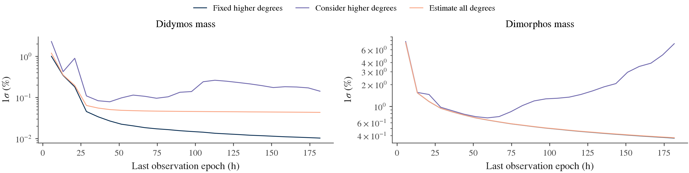
The growing considered uncertainty is an estimator-sensitivity effect. The external distribution is unchanged at every cutoff. Fixing the higher field exactly understates the error of an estimator exposed to the declared uncertain higher field. Coestimating it lets the measurements constrain those directions.
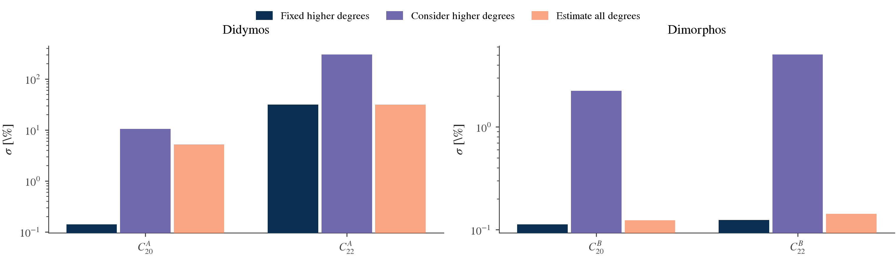
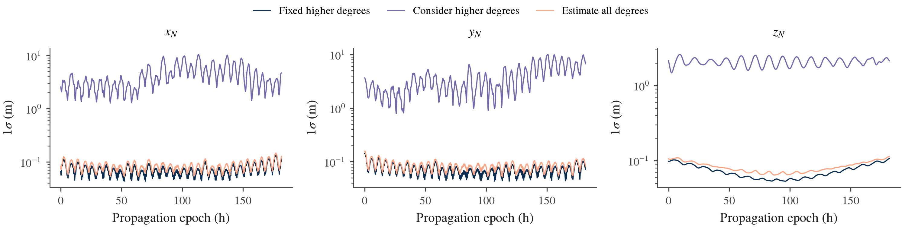
The last figure maps one all-data result over physical epochs. Component sigmas span approximately 0.0433–0.1443 m (fixed), 0.795–10.446 m (considered), and 0.0520–0.1577 m (coestimated). These describe the binary relative orbit, not a particle descent or impact footprint.
Both the fresh default AD and fingerprint-checked analytic runs reproduce all nine printed AC3 Table 2 entries in the coestimated case. Their new mass histories agree to at worst 1.20e-4 relative sigma, and position covariance histories to 3.65e-5 relative matrix norm, within the existing 1e-3 long-chaotic-Hera acceptance. The final full suite passes 396 tests with AD/plotting; native and AD reference snapshots remain bitwise unchanged. See complete acceptance and reproducibility commands.
# Settings at the top of the script.
python examples/covariance/hera/consider_and_histories.py
# The same with options, as used for the figures above.
python tools/evidence/hera_consider_and_histories.py --output "$PWD/results/hera-uncertainty"
Options of the evidence script: --native propagates afresh with the analytic partials (the option keeps the earlier word), --reuse-native PATH reuses a completed variational solution computed with them, and --reuse-transport PATH reuses one that matches the selected partials. Use a new output folder: the script saves the variational solution before the analysis and refuses to overwrite. Each case folder contains the standard analysis export plus mass-history/ and relative-position-history/; shared figures are in figures/. The rendering tool redraws the figures from verified exports without solving again.
References and limits
BASCO's batch consider formulation is documented against Hinks and Psiaki, A Multipurpose Consider Covariance Analysis for Square-Root Information Filters and the inspected SCARABAEUS batch implementation. The latter maps final batch covariance to epochs; BASCO separately exposes observation-prefix histories. NASA Navigation Filter Best Practices describes consider filtering and cross-covariance principles; BASCO's current batch analysis does not claim that recursive algorithm.
The equation contract and research record records the inspected revision, assumptions, retrieval date and independent validation requirements. Sequential filters, process noise and independent multi-arc prefix histories remain separate work. The next application is described in particle descent and impact covariance.
Local-field gravity covariance
BASCO provides a local cylindrical gravity model and transfers uncertainty into its coefficients from an existing Hou model. A second entry point accepts local coefficients and a supplied joint particle, mass and coefficient distribution. Both use the original covariance factors and preserve cross-correlations and unsupported directions. Neither entry point adds measurements or performs a new estimation.
The cylindrical field can be connected explicitly to RF3BPDynamics for selected per-body particle forces. The 3D approach and impact workflow propagates the original joint source and corrects smooth first-contact time/location uncertainty, with Didymos and Dimorphos mesh examples. The standalone runner on this page remains a field/mapping demonstration; the existing exterior particle examples retain their Hou fields.
Choose an input
| Input available | Workflow | Result |
|---|---|---|
| Hou nominal model and an existing covariance/consider result or declared source factor | Map an existing Hou model | Local nominal coefficients, their source Jacobian and a delegate-preserving uncertainty map |
| Local nominal coefficients and a supplied joint distribution | Start with local coefficients | The same coefficient uncertainty interface, without an exterior model, Hera archive or conversion |
local_field_from_hou.py and local_field_direct.py run the two workflows with declared demonstration covariances. The mapped case uses the made-up binary of basco.covariance.synthetic. It is not a Hera result or a validated impact example.
python examples/covariance/trajectory/local_field_from_hou.py
python examples/covariance/trajectory/local_field_direct.py
BACKEND at the top of each script selects automatic differentiation or the analytic derivatives of the field. The scripts print coefficient and acceleration reports and the rank of the fit; they do not integrate trajectories.
Local field and domain
CylindricalDomain specifies a body-frame cylinder: a base centre, radius, height and optional proper rotation. Its local domain is rho <= radius, 0 <= z <= height. The rotation maps cylinder components into body components. Positions and lengths use metres; compatible Astropy quantities are accepted.
The patch is a declared mass-free region. It does not inspect a shape model or certify that a cylinder clears the asteroid. A physical application must establish that the field domain contains no material, up to an appropriate exterior surface limit. Patch pose is fixed in this increment; patch/shape uncertainty is not included.
from basco.covariance.local_field import CylindricalHarmonics, CylindricalHarmonicField, CylindricalDomain
patch = CylindricalDomain(origin=[0, 0, 750], radius=100, height=300)
basis = CylindricalHarmonics(
patch, azimuthal_degree=4, radial_order=5, radial_scale=16,
)
# coefficients must be supplied in basis.layout order, in m²/s².
field = CylindricalHarmonicField(basis, coefficients) # Lazy AD by default.
evaluation = field.evaluate([0, 0, 850])
This is a composition fragment; the mapped and direct workflows below supply coefficients. backend="analytic" selects the independent analytic implementation. AD requires the optional JAX dependency and raises an explicit dependency error when unavailable; it never silently substitutes another method.
The explicit degree, radial order and scale above are analysis choices used by the example. They are not universal defaults or an accuracy guarantee. A small allowed basis can still fit a particular field poorly. Check both values and source sensitivities at independent holdout points when choosing these settings.
The implemented finite family follows the decaying branch of Fereoli and McMahon (2026), Equation 36. In dimensionless patch coordinates (X,Y,Z), with t=X²+Y², its regular Cartesian normalization is
\phi_{mn}=e^{-k_{mn}Z}\,Q_m(X,Y)\,
{}_0F_1\!\left(m+1;-k_{mn}^2t/4\right),\qquad
U=\sum_j b_j\phi_j,\qquad a=-\nabla U.
Q_m is the real or imaginary part of (X+iY)^m. Each coefficient b_j has units m²/s². This is a normalized Fourier–Bessel basis, so raw coefficients from another implementation require conversion. BASCO uses negative gravitational potential and acceleration -grad(U); the cited paper uses the opposite potential sign convention.
The family is harmonic in a vacuum and regular on the cylinder axis. It is one selected axial branch, not the paper's full three-boundary cylinder solution or a unique global asteroid model. Coefficients are free field parameters; no constant-density constraint is introduced.
Modes are ordered by increasing azimuthal degree, radial index, then cosine/sine. The identically zero sine mode at m=0 is excluded. Current numerical limits are azimuthal degree 0–12 and radial order 1–12, with a full-patch Bessel argument bound of 4. Automatic radial_scale satisfies that bound; unsupported explicit choices raise an error. Coefficient scales improve numerical conditioning and are not priors or sigmas. Exact API records the normalization, order, units and numerical envelope.
Map an existing Hou model
HouFieldSampler samples one body's own exterior acceleration and its derivatives in the existing named physical parameter coordinates. It retains both masses' columns and all selected degree-2/3/4 directions. Mass changes include the response of fixed nominal degree-5/6 moments. Points are expressed relative to that body's COM in its own body frame and must lie outside its Brillouin sphere.
The fragment below assumes matching parameters and a completed covariance/consider result, plus the basis above. last_information_epoch is the actual source information cutoff, not a new observation epoch. The complete runner also demonstrates a newly declared source factor.
import numpy as np
from basco.covariance.local_field import HouFieldSampler
from basco.covariance.trajectory import InitialCovariance
initial_covariance = InitialCovariance.from_result(
result, reference_epoch_s=0, information_cutoff_s=last_information_epoch,
)
points = np.array([[x, y, z] for x in (-60, -20, 20, 60)
for y in (-50, 0, 50) for z in (780, 840, 920, 1000)])
mapping = HouFieldSampler(parameters, "A").map_to(
basis, points,
completion="Conditional continuation of the truncated order-6 Hou field; "
"unmodeled interior structure is not supplied",
)
uncertainty = mapping.bind(initial_covariance)
field = CylindricalHarmonicField(basis, mapping.coefficients)
coefficient_report = uncertainty.coefficients_report()
field_report = uncertainty.field_report(field, [[0, 0, 850]])
Use backend="analytic" on both HouFieldSampler and CylindricalHarmonicField for the analytic route. The same mapping/source/report contracts apply to both methods. Binding matches physical labels and units, including when the mapping coordinates are only a subset of the complete source. Known nominal values and model context are checked before a result is reused.
CoefficientMap.fit is the lower-level deterministic mapper. Given a coefficient-to-sample matrix D, source samples y(q) and their derivative Y_q, it computes local coefficients and a physical transfer T = db/dq using a scaled SVD. Numerical sample scales do not define observation weights. The returned operator can also refit explicitly perturbed source values for validation.
What the completion assumption means
A finite exterior model does not uniquely specify the real field near an irregular surface. completion records the continuation being assumed; it is required. Fitting an order-6 Hou field establishes agreement with that finite model at checked points. It does not restore missing interior information, establish near-surface physical accuracy or remove the exterior expansion's convergence limitation.
Collocation values are repeated evaluations of the same uncertain source, not independent observations. The fit transfers its uncertainty; it does not reduce it. Residuals and holdout errors describe approximation quality and are never converted into coefficient covariance. Duplicating collocation rows supplies no new information.
Preserve source factors and support
For source errors delta q, the local relation is
\delta b=T\,\delta q+L\eta,\qquad
M_b=\left[\operatorname{map\_factor}(T),\ L\right].
L is an optional explicitly independent coefficient-error factor. Original estimation, consider, state and nuisance correlations remain in the source's original latent columns. The map delegates map_factor and derived_from_factor; it does not reconstruct a factor from rounded covariance. Consider cancellation therefore occurs before the large external factor is applied.
| Direction or diagnostic | Treatment |
|---|---|
| Supported original source combination | Finite covariance from the original factor |
| Original unobservable/numerically unresolved combination | Original unavailable status retained, even if its saved finite factor row happens to vanish |
| Numerically undetermined target combination | Fit rejects by default; an explicitly allowed rank-deficient fit retains unresolved modes |
| Supplied finite singular distribution | Valid declared distribution, including exact zero-variance directions; not automatically an unknown prior |
| Additional genuinely unknown local mode | Declare unresolved_scaled; affected reports remain unavailable rather than receiving zero variance |
| Additional finite independent local errors | Declare additional_factor; this does not erase unresolved fit directions |
| Additional errors correlated with original state/mass/gravity | Supply a complete joint source through the direct interface |
The fit's numerical representation rank is different from the source's data/posterior rank. A deterministic map can change coefficient count and finite covariance rank without changing the original information. Reports record these distinctions and the completion assumption.
Start with local coefficients
CoefficientCovariance.direct accepts local coefficients and a named original joint source. No exterior coefficient table, archive, previous trajectory or sphere crossing is required. Shared factor columns carry state–mass–coefficient correlations.
This standalone input declares six particle initial errors, one mass and local coefficients. Its nominal field and distribution are demonstration inputs, not an interior reconstruction:
import numpy as np
import basco.covariance as bc
from basco.covariance.local_field import CoefficientCovariance, CylindricalHarmonics, CylindricalDomain
from basco.covariance.trajectory import InitialCovariance
basis = CylindricalHarmonics(CylindricalDomain([0, 0, 100], 40, 80), 1, 2)
coefficients = np.zeros(basis.size)
coefficients[0] = -0.02
state_labels = tuple(f"particle.initial.{group}.{axis}"
for group in ("r", "v") for axis in "xyz")
layout = bc.ParameterLayout(
state_labels + ("mass",) + basis.labels,
("m",) * 3 + ("m / s",) * 3 + ("kg",) + basis.layout.units,
np.r_[[1.] * 3, [0.001] * 3, 2.5e9, np.ones(basis.size)], n_state=6,
)
factor = np.diag(np.r_[[0.2] * 3, [1e-4] * 3, 5e6, [1e-4] * basis.size])
factor[7, 2] = 8e-5 # Coefficient0 shares the particle-z latent error.
factor[6, 2] = 1e6 # Mass shares that error too.
initial_covariance = InitialCovariance.from_factor(
layout, factor, source="Declared correlated near-field input",
reference_epoch_s=0, information_cutoff_s=0,
)
uncertainty = CoefficientCovariance.direct(
basis.layout, coefficients, initial_covariance,
conventions={"target_basis_identity": basis.fingerprint},
)
The factor contains physical errors in the declared units; do not multiply it by coordinate scales again. Its covariance is factor @ factor.T. from_covariance is also available for a newly supplied PSD matrix. For existing BASCO results, use from_result so their original support policy and consider map survive.
The local coefficients already describe the selected intrinsic field; an additional mass label does not independently add another monopole acceleration. Shared physical roles and compatibility with the retained binary moments must be established when a direct field is connected to binary/particle propagation. The approach adapter checks matching field/source identities and force-coordinate maps. A direct local field still requires an explicit physical role; a covariance interface alone cannot prove that independently chosen local modes describe a globally compatible interior.
Field uncertainty at an uncertain position
field_report evaluates intrinsic field uncertainty at fixed body-frame points. It holds the query position, body attitude and patch pose fixed. Coefficient sigmas depend on the chosen basis; potential and acceleration covariance at matched physical points provide useful representation comparisons.
For an uncertain query position, add its acceleration derivative to the coefficient pathway before squaring. This fragment continues the direct example:
from basco.covariance.local_field import CylindricalHarmonicField
field = CylindricalHarmonicField(basis, coefficients)
evaluated = field.evaluate([3, 4, 125])
J = np.zeros((3, len(layout.labels)))
J[:, :3] = evaluated.position_jacobian
encountered = uncertainty.joint_report(
("a.x", "a.y", "a.z"), evaluated.acceleration, ("m / s2",) * 3, J,
coefficient_jacobian=evaluated.coefficient_jacobian,
)
Here J contains only the direct query-position pathway; joint_report adds the coefficient pathway once. For a general coupled output with direct source derivative J_q and coefficient derivative H, its original-source derivative is J_q + H T. The source map retains all cross terms. Adding a position-only covariance to a coefficient-only covariance would discard them when the inputs correlate.
Without coefficient_jacobian, joint_report instead concatenates supplied source-only outputs with all coefficients. Use this mode for mass–coefficient or state–coefficient covariance blocks. Explicit independent added coefficient modes contribute only to rows that depend on them; propagation that couples them into particle state must first include them in its full source.
Separate the mass term and local residual
PointMassPlusLocalField adds an exact central mass term to a cylindrical residual. This can reduce the variation that the local basis must approximate. The residual mean must be fitted after subtracting the same monopole from its reference field. Its coefficient errors remain independent model coordinates, with any declared correlations to mass retained.
The following fragment continues the standalone source example. It selects a zero residual mean for illustration, retains its declared coefficient errors, and supplies the explicit mass map:
from basco.covariance.local_field import CylindricalHarmonicField, PointMassPlusLocalField
residual_coefficients = np.zeros(basis.size)
residual_uncertainty = CoefficientCovariance.direct(
basis.layout, residual_coefficients, initial_covariance,
conventions={"target_basis_identity": basis.fingerprint},
)
field = PointMassPlusLocalField(
CylindricalHarmonicField(basis, residual_coefficients), mass=2.5e9,
)
mass_map = np.zeros((1, len(initial_covariance.layout.labels)))
mass_map[0, initial_covariance.layout.labels.index("mass")] = 1.0
acceleration = residual_uncertainty.field_report(
field, [[0, 0, 100]], moment_source_jacobian=mass_map,
)
The total acceleration derivative is da/dq = (da/dM) (dM/dq) + (da/db) (db/dq). The original factor is mapped after adding these pathways, so shared mass/residual errors retain their cross terms. Omitting moment_source_jacobian raises an error for this field rather than silently reporting residual-only uncertainty. quantity="potential" uses the same source composition for potential.
When selected in RF3BPDynamics, the mass dependency binds to the existing raw T000 column of that body; it does not create a second mass parameter. The mass, gravitational constant and nominal body moments must agree. The local patch must exclude the origin and remains the domain of the complete composed field. Kernel checks do not certify a new patch, fit or exterior-to-local switch. The long-trajectory guide records the remaining continuation work.
Validation and example figures
The acceptance record distinguishes analytic/AD checks, opt-in FD, real Hou parameter-map checks and the deterministic demonstration figures. It is the authority for executed commands, tolerances and measured errors. Derivative checks do not establish the accuracy of a physical asteroid field.
The accepted mapped example uses 45 coefficients and 61 independent holdout points along a fixed body-frame line. Maximum relative acceleration error is 0.00621%; maximum active source-sensitivity column error is 0.01735%. These are conditional approximation checks against the finite Hou field at valid exterior points. They do not establish surface accuracy or bound omitted physical heterogeneity. A separate heterogeneous three-point-source fixture checks a mass-free cylinder inside a global Brillouin sphere without evaluating an exterior series there.
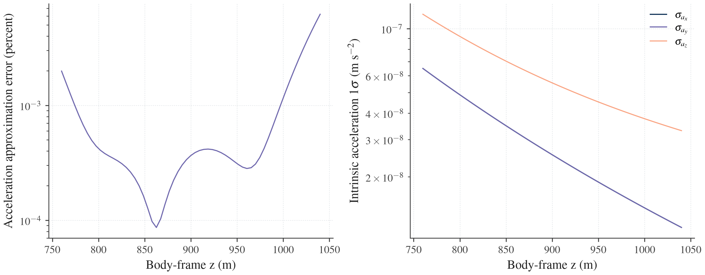
This comparison diagnoses the selected finite cylindrical approximation against its finite Hou source. It is not an independent validation of the real near-surface field. Source-derived uncertainty, numerical approximation error and unmodeled physical uncertainty are different quantities.
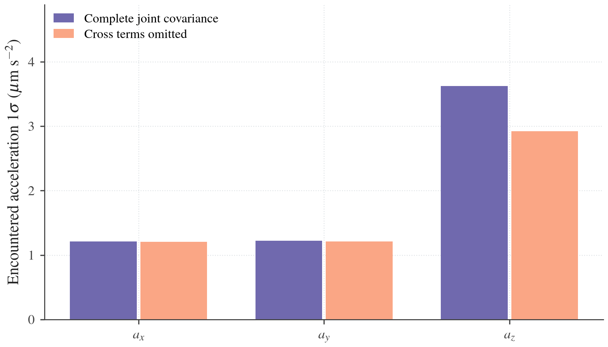
The direct example's complete encountered-acceleration sigmas are (1.209390, 1.220812, 3.620431) µm/s². Omitting the position–gravity cross terms while keeping the marginal covariances gives (1.204340, 1.211905, 2.920845) µm/s². The difference is a property of this declared correlated input, not a general direction or size of covariance error. Shared latent columns preserve the cross terms. Redundant output coordinates can yield singular covariance without adding information; unsupported combinations remain unavailable.
Independent kernel fixtures check Bessel values, exact axis limits, harmonic trace, tilted frames and coefficient/spatial derivatives. Mapping fixtures check scaling/order invariance, no information from repeated samples, direct joint cross terms, rank/null status, original consider cancellation and context mismatches. FD is opt-in and includes reevaluating/refitting the complete physical Hou map, including high-degree mass response. See derivative validation for the general validation interface.
Components and next integration step
| Component | Responsibility |
|---|---|
| CylindricalDomain | Declared geometry, frame, units and domain checks |
| CylindricalHarmonics | Named normalized modes and linear potential/acceleration/spatial operators |
| CylindricalHarmonicField | Nominal field with selected AD or analytic partials |
| HouFieldSampler | Exterior samples and the existing physical-parameter chain rule |
| CoefficientMap | Deterministic scaled-SVD change of representation and its source Jacobian |
| CoefficientCovariance | Direct or mapped coefficient uncertainty, full-source factors, support and joint field reports |
| PointMassPlusLocalField | Exact uncertain mass term and guarded local residual, with shared source derivatives |
python3 tools/dev.py test --run-fd adds the finite-difference checks, including the local-field kernel and the refit of the Hou field. Ordinary covariance calls do not run them.
The approach adapter and 3D examples now connect selected local fields to the existing RF3BP propagation, retaining the companion, uncertain pose and original source factors. Smooth plane/sphere/mesh impact uses event-time correction and explicit domain/edge/grazing outcomes. The direct-start mesh demonstrations use declared local uncertainty, not an inferred Hera impact posterior. An automatic exterior-to-local model switch, arbitrary multi-face probability region and global escape probability remain separate work; field mapping alone does not establish them.
The near-surface implementation plan and joint covariance contract record these boundaries. Return to particle covariance, example scripts or capabilities and limits.
Multi-arc covariance and estimation
Multi-arc analysis estimates shared physical quantities from several locally parameterized trajectories. Masses and gravity can be common while each arc retains its own initial state and observation nuisance. BASCO supports both a convenient continuous-nominal timeline and direct assembly of independent arc linearizations.
Continuous nominal trajectory and independent arc states
This fragment assumes model, parameters, observation_types and bc from your analysis. Include .estimate_initial_state() in parameters when arc-start binary states are to be coestimated:
observations = bc.ObservationSchedule.uniform(
stop=14 * 86400.0,
cadence=900.0,
observation_types=observation_types,
schedule=bc.PeriodicBlackout(period=86400.0, duration=8 * 3600.0),
)
timeline = bc.ArcSequence.every(3.5 * 86400.0, stop=14 * 86400.0)
campaign = bc.MultiArcAnalysis(
model,
parameters,
observations,
timeline,
integrator=bc.RK4(dt=75.0),
)
multi = campaign.design_matrix()
result = multi.covariance()
print(result.summary())
print(campaign.arc_summary(multi))
ArcSequence cuts contiguous mission intervals starting at zero. every(...) creates equal lengths and a shorter final remainder when needed; from_bounds(...) accepts explicit bounds/names. Arc lengths must be compatible with the plan cadence and the integration grid. A boundary observation belongs to the arc ending there.
MultiArcAnalysis propagates each arc from the preceding nominal end state, with an explicit SO(3) projection at the restart. Schedules evaluate mission time, so daily gaps remain daily across boundaries. It defaults to Hou AD; pass partials="analytic" for manual derivatives.
Nominal continuity does not impose estimation continuity constraints. Local state errors remain independently parameterized; no process noise or sequential-filter assumption is introduced.
Reusing arc propagation
retained = campaign.variational_solutions(multi)
Construct another campaign with the same physics, timeline, state treatment and output grid but different observation schedules/observation types, then call:
changed_multi = changed_campaign.design_matrix(variational_solutions=retained)
changed_result = changed_multi.covariance()
Here changed_campaign is the newly configured MultiArcAnalysis. Each named arc's variational solution is checked. Noise/prior changes on multi require neither this reassembly nor propagation.
The multi-arc example compares a single arc, gaps and independent arcs, then sweeps blackout duration with saved variational solution.
Assemble independent linearized analyses directly
When arcs have independently supplied start states, build each ordinary analysis first. For early_rows and late_rows returned by those analyses:
multi = bc.MultiArcDesignMatrix(
{
"early": early_rows.with_priors(()),
"late": late_rows.with_priors(()),
},
priors=shared_priors,
solver=bc.PartitionedSquareRootSolver(),
)
result = multi.covariance()
shared_priors is the tuple of global prior producers you intend to apply once. Using with_priors(()) avoids carrying a shared prior separately from each arc. Genuine local priors may remain on their arcs; any arc prior touching a shared parameter is rejected to prevent double counting.
By default every physical parameter ID must agree between arcs and is shared. Explicit shared_parameters=("primary.mass", ...) shares a subset; other physical coordinates become local. Shared nominal values, units and physical meaning must match. Local labels become arc.early.<source-label> and arc.late.<source-label>; shared IDs retain their names.
multi.arc_columns(name) maps a source arc's coordinate order into global columns. The full supported covariance retains cross-arc and local/shared cross blocks. A complete common physical report needs a complete shared physical map; partial sharing may require named covariance blocks or a custom derived transform.
Noise across arcs
Independent per-arc noise is the default. Pass a mapping such as noise={"early": early_noise, "late": late_noise} to replace weights per arc. A single full correlated model can represent cross-arc observation correlation, following the assembled scalar row order.
Shared prior knowledge enters once globally. Global correlated priors can also use fully qualified local coordinate IDs when the statistical model actually connects those local quantities.
Solve a frozen-linear correction
fit = multi.estimate({
"early": observed_minus_predicted_early,
"late": observed_minus_predicted_late,
})
print(fit.corrections_for(("primary.mass", "secondary.mass")))
print(fit.covariance.summary())
The two vectors are externally supplied observed minus nominal prediction residuals, in the exact source arc row order and physical units. This is one weighted linear correction at a fixed nominal, including prior mean-minus-reference residuals. It is not a nonlinear mission-data fit.
MultiArcSolution retains corrections, covariance, postfit residuals and diagnostics. A deficient solve identifies supported combinations and records its minimum-scaled-norm convention for unresolved correction components; unresolved values are not thereby physically determined.
Nonlinear batch/MAP callbacks
MultiArcBatchLeastSquares supplies a generic relinearizing Gauss–Newton driver with actual-objective backtracking:
solution = bc.MultiArcBatchLeastSquares(
max_iterations=15,
step_rtol=1e-9,
gradient_rtol=1e-9,
).solve(
initial_guess,
linearize=build_arcs_and_residuals,
retract=apply_named_correction,
)
print(solution.converged, solution.status)
This is an interface fragment: you must implement both callbacks for your application. build_arcs_and_residuals(state) returns (MultiArcDesignMatrix, residual_mapping) at that nominal. It rebuilds predictions, rows and prior references while keeping observations, noise and prior means fixed.
apply_named_correction(state, correction, layout) returns a new state consistent with the rows' named differential. It owns finite attitude retraction and positive-mass handling. Neither callback may mutate its input.
Convergence, exhausted iterations, rank deficiency and failed line search remain distinct statuses. Returned covariance belongs to the returned statistical nominal; backtracking adds no fictitious information.
Current limitations
Generic nonlinear numerical tests exist. Complete binary observed-value ingestion, measured-attitude residual adapters and seeded mission-style recovery are unfinished. Sequential filters/process noise are planned, not implemented interchangeable filter choices. Do not describe a covariance reproduction or a callback API as a validated real Hera-data fit.
The multi-arc design and schedule/arc evidence record the tested semantics and limitations.
Results and exports
For the steps from a script to its results, with the file for each, read How the covariance analysis works.
Read uncertainty availability before reading its numerical value. BASCO separates quantities supported by the experiment, quantities fixed by configuration and unresolved directions. Tables, plots and exports all consume the same shared presentation dataset so those distinctions remain consistent.
Consider results and covariance histories add held uncertain parameters, observation-prefix uncertainty and fixed-information physical output maps. History exports preserve full within-epoch output covariance, source Jacobians and the meaning of their time axis.
Snippets use the design and result produced by the quickstart.
Result summaries
print(result.summary())
print(result.mass_properties().summary())
print(result.degree2().summary())
print(result.harmonics(max_degree=4).summary())
CovarianceResult retains data rank, posterior rank, marginal physical rank, singular values, thresholds, nullspace and diagnostics. Priors may make a posterior supported without making its data-only counterpart observable.
| Report | Contents and convention |
|---|---|
mass_properties() |
Individual and total mass, fixed-G individual/total GM, secondary/primary mass ratio |
degree2() |
Normalized moments, unnormalized C20/C22 and dimensional Izz |
harmonics(max_degree=4) |
Unnormalized exterior C/S at the model's declared fixed reference radii |
DerivedUncertainty holds labels, values, units, Jacobian, covariance, row statuses, conventions and sigma. A fixed quantity with zero error is distinct from a measured quantity with high precision. A zero nominal coefficient can have a meaningful absolute sigma but has no defined relative percentage uncertainty.
Cross covariance
Mass sum, mass ratio and gravity transforms need the relevant off-diagonal terms. Do not combine individual sigma values as if independent unless independence is part of the actual covariance.
if result.full_rank:
labels = ("primary.mass", "secondary.mass")
mass_covariance = result.covariance_for(labels)
mass_correlation = result.correlation_for(labels)
These named methods preserve the requested order and return protected copies. parameter_covariance is the physical-parameter block; state_parameter_covariance retains the local-state/nuisance to physical-parameter cross block when available.
For a deficient joint solution, joint_covariance is unavailable. observable_subspace_covariance is only valid for functions that annihilate the reported nullspace. It is not a finite full covariance for arbitrary unresolved coordinates.
Custom derived quantities
This fragment computes total mass from the full named coordinate layout, using the same nullspace-aware transform as built-in reports:
labels = design.layout.labels
jacobian = np.zeros((1, len(labels)))
jacobian[0, labels.index("primary.mass")] = 1.0
jacobian[0, labels.index("secondary.mass")] = 1.0
total = result.derived(
labels=("custom.total_mass",),
values=[analysis.model.system.primary.mass + analysis.model.system.secondary.mass],
units=("kg",),
jacobian=jacobian,
conventions={"definition": "primary.mass + secondary.mass"},
)
print(total.summary())
It assumes both masses were selected and NumPy is imported. Normally use mass_properties() for this quantity; the example shows the public custom-transform boundary. The Jacobian columns must match the entire joint layout, including local columns.
Run exports
folder = bc.export_analysis(design,
result,
root=Path(__file__).resolve().parent / "results",
label="my-binary-g06-e04",
reports={
"mass": result.mass_properties(),
"harmonics": result.harmonics(4),
},
figures=True,
theme=bc.PlotTheme(tex=False),
)
This needs Path from pathlib and the plotting environment. Omit figures=True for a numeric/table-only run. The standard folder name includes a readable label, UTC timestamp and scientific analysis digest.
my-binary-g06-e04__UTC-TIMESTAMP__DIGEST/
README.md
configuration.json
run.json
manifest.json
reports/
report.md
report.json
tables/
figures/
manifest.json
arrays/
metadata.json
*.npy
validation/
README.md
configuration.json stores configuration. run.json names matrix axes, layouts, units, identities, diagnostics and prior provenance. Plan sigmas are retained separately from the actual analysis weighting. Numeric arrays include states, sensitivities, rows, scales, covariance when available and the rank spectrum/nullspace.
Files are staged, checksummed and published together. Existing destinations are refused. Export does not automatically launch derivative checks: the validation directory states what is known, and checks remain explicitly requested.
The analysis digest retains scientific/statistical choices and scales but excludes elapsed runtime. Creation time remains in folder names/metadata; timing remains available for operational evidence.
Reading saved results
arrays, presentation, run = bc.read_results(folder)
H = arrays["design_rows_SI"]
print(run["metadata"]["layouts"]["joint_coordinate"]["labels"])
bc.write_results_tables(
presentation,
"restyled-results",
figures=True,
theme=bc.PlotTheme(tex=False, width=10.0, font_size=11.0, dpi=300),
)
read_results verifies checksums and returns data, not a reconstructed live analysis. read_results_tables reloads just a presentation report. A damaged manifest, incomplete run or escaping manifest path is an error.
For standalone numeric/string evidence, write_artifact and read_artifact provide verified JSON/NPY folders. Object arrays and pickle are refused. Each array needs meaningful names and accompanying axis/unit metadata supplied by the producer.
Plot settings
PlotTheme sets figure width, resolution, typography, mathematical text, optional grids and export formats. Its defaults follow the Hera paper's plotting source: 9.5-point STIX typography, 300 dpi, a navy–purple–orange colormap and no grid. Set grid=True for a figure that requires grid lines. Rendering uses a local Matplotlib context.
tex=False works with built-in mathematical text. tex=True requires a functioning external LaTeX installation. Share one theme across figures in an analysis for consistent labels and visual scale.
Grouped comparison bars
Use saved case reports, not copied sigma arrays or hardcoded coefficient indices:
from basco.plotting import uncertainty_comparison_plot
changed = design.covariance(noise=bc.DiagonalNoise(2.0 * design.sigmas))
cases = {
"Baseline": bc.make_results_tables(
result, reports={"mass": result.mass_properties()},
),
"Twice the measurement noise": bc.make_results_tables(
changed, reports={"mass": changed.mass_properties()},
),
}
comparison = uncertainty_comparison_plot(
cases,
table="mass",
metric="relative_percent",
labels=("primary.mass", "secondary.mass"),
identifier="mass_noise_trade",
title="Individual mass uncertainty",
)
bc.write_results_tables(
cases["Baseline"],
"mass-noise-comparison",
figures=True,
plots=(comparison,),
theme=bc.PlotTheme(tex=False),
)
Available metrics are "sigma", "relative_percent" and "gain"; gain requires an explicit reference presentation. Report IDs, quantity units and conventions must be compatible. Unsupported quantities stay visibly unavailable.
Bar layout
BarLayout controls figure dimensions, panel arrangement, bar grouping, colors, optional hatches, tick labels and legend placement independently of the computed data. Dimensions are in inches. The default uses plain bars; hatches are added only when explicitly supplied.
This continues the comparison above. It changes the figure arrangement without repeating propagation or covariance computation:
layout = bc.BarLayout(
group_by="case",
figsize=(7.6, 3.4),
legend="first_panel",
legend_location="upper right",
legend_columns=1,
show_titles=False,
)
by_case = uncertainty_comparison_plot(
cases,
table="mass",
metric="relative_percent",
labels=("primary.mass", "secondary.mass"),
parameter_labels={
"primary.mass": r"$\sigma(M_A)$",
"secondary.mass": r"$\sigma(M_B)$",
},
identifier="mass_noise_by_case",
layout=layout,
)
bc.write_results_tables(
cases["Baseline"],
"mass-noise-by-case",
figures=True,
plots=(by_case,),
theme=bc.PlotTheme(tex=False),
)
group_by="parameter" places parameters on the horizontal axis and cases in the legend. group_by="case" exchanges those roles. panel_columns=2 places two body panels side by side. legend="first_panel" places the legend inside the first axes; legend="figure" uses a shared figure legend. gain_baseline changes only the drawn baseline of gain bars; it does not change any reported ratio.
Hera figure layouts
The Hera plotting module defines reusable layouts through the same generic comparison function:
| Function | Arrangement and required data |
|---|---|
| gain_plot | Figure 4: two body panels, gravity/inertia quantities on the horizontal axis and rotational cases in the legend. Requires posterior cases and the stated prior reference in matching conventions. |
| degree_prior_plot | Figure 5: analysis cases on the horizontal axis and eight gravity, inertia and mass quantities in the legend. |
| mass_plot | Additional mass-uncertainty figure for the individual masses and their correlated total. This figure supplements the paper. |
The caller supplies the computed presentation datasets. These helpers select labels and visual settings; they do not construct priors, run dynamics or alter uncertainties. The Hera example supplies the paper's scientific settings.
For a new figure, PlotDefinition supplies a named draw(dataset, theme) callback returning a Matplotlib figure or None, plus a caption. Pass it through the same writer. See extensions and the filesystem contract.
Model comparisons
Propagation is usually the expensive part. Retain a DesignMatrix and its VariationalSolution so changes to the statistical question do not accidentally rerun the dynamics. Identity checks reject reuse when physical inputs or numerical policies no longer match.
The fragments below assume analysis, design, result and bc from the quickstart.
Reweight or change priors
data_only = design.covariance(priors=())
less_precise = design.covariance(noise=bc.DiagonalNoise(2.0 * design.sigmas))
joint = design.covariance(solver=bc.SquareRootInformationSolver())
Each call uses the retained unweighted physical rows and performs zero new dynamics evaluations. To replace priors, pass the intended complete producer set with priors=(...). Replacing the solver can change the declared support policy, so retain its diagnostics in comparisons.
Reduced parameter sets
For source rows containing masses, degree-2 moments, degree-3/4 harmonics and initial-state errors:
degree2_parameters = (
bc.EstimatedParameters(design.parameters.model)
.estimate_masses()
.estimate_moments(degrees=(2,))
.estimate_initial_state()
)
degree2_rows = design.with_parameters(degree2_parameters, priors=())
degree2_result = degree2_rows.covariance()
The original nominal gravity remains order 6. The dropped higher-degree quantities are fixed at their nominal values. This is conditioning; marginalization would instead retain their uncertainty and correlations in the solve. Local observation nuisance remains free.
The subset must use the same nominal model, physical directions and initial-state treatment. Reordering compatible existing columns is allowed; adding directions or changing the raw/harmonic map is not an arbitrary view operation. Priors reset intentionally, because an old prior may not define the new statistical problem.
Change observation types on retained epochs
position_plan = bc.ObservationSchedule.uniform(
stop=analysis.observations.duration,
cadence=analysis.observations.cadence,
observation_types=(bc.RelativePosition(sigma=1.0),),
)
position_study = bc.CovarianceAnalysis(
analysis.model,
analysis.parameters,
position_plan,
integrator=analysis.integrator,
)
position_rows = position_study.design_matrix(partials=design.variational_solution)
position_result = position_rows.covariance()
This reassembles observation rows from compatible saved variational solution. A blackout or per-stream schedule on the same grid can follow the same route. There are no ODE evaluations during the reassembly, but the observation types' value/partial maps still evaluate.
If the first analysis used partials="analytic", the new one must say so too. The default is AD, and the fingerprint of a variational solution records which partials produced it, so one is never taken for the other.
Changing mutual gravity order
Order-4 and order-6 dynamics are different forward models and require separate propagation. For each, construct a BinaryModel using the same declared system/state and its intended HouGravity(mutual_order=...), then build its own EstimatedParameters attached to that model.
Hold duration, integration accuracy, observations, priors, parameter meaning and reporting conventions fixed when the goal is to isolate force-model order. A degree-4 estimate under order-4 versus order-6 gravity is a valid pair of model-conditioned covariance analyses. The difference between their sigmas is not a direct estimate of truncation bias.
degree_trades.py makes the paper's comparisons from one design matrix. The evidence script tools/evidence/hera_degree_trades.py separates fresh propagate runs from compare runs that integrate nothing. The validated degree trades explain the paper's and the alternative experiments.
Recomputation requirements
| Changed input | Reuse retained rows? | Reuse existing variational solution? |
|---|---|---|
| Noise, priors, covariance solver or threshold | Yes | Already retained |
| Compatible subset/reordering of existing estimated parameters | with_parameters(...) |
Already retained |
| Channels, sigma defaults or mask on same grid | Reassemble rows | Yes, if identity matches |
| Gravity order, body moments/masses or initial state | No | No |
| Integrator step/policy or derivative provider | No | No |
| New required epochs or new physical directions | No arbitrary reuse | Requires appropriate compatible variational solution |
The propagation fingerprint includes physical data, coordinate maps, initial state, epochs, provider and integration policy. The linearization identity also captures row assembly. The final analysis fingerprint adds weighting, priors, scales and numerical support choices while excluding wall-clock timings.
Comparison records
For each case, export the computed result, its configuration and provenance. Mark whether it was fresh propagation, archived-row replay or new analysis of retained BASCO variational solution. Then use comparison bar charts to ensure labels, conventions and uncertainty statuses are checked across cases.
The reuse example is a small runnable starting point. For independent arcs, multi-arc reuse retains one checked variational solution per named arc.
Hera paper reproduction
The Hera analysis is BASCO's main scientific example. It estimates both masses and gravity-related moments through degree 4, propagating the nominal binary with Hou mutual gravity order 6. Four rotational states reproduce every one of the paper's 36 printed Table 2 percentages. This chapter gives the runnable entry points, the scientific choices behind them, and what the reproduction establishes.
For the shortest single-case script, a custom rotation of Dimorphos, or new system parameters, use Run and customize the Hera analysis.
Start with installation and first scripts if the environment is not set up. The example list has smaller demonstrations to try before a full propagation.
Run one case or all four
Run these from the repository root, after source tools/activate:
# Full tumbling, with tables and figures.
python examples/covariance/hera/paper_case.py
# All four paper cases, one after the other.
python examples/covariance/hera/all_cases.py
# The same in parallel processes, for chosen cases, with figures.
python tools/evidence/hera_all_cases.py AC1 AC3 --jobs 2 --figures
The one-case script is paper_case.py and the four-case script is all_cases.py. Both use the ordinary library components; neither contains a second covariance engine.
Timing depends on the machine and on what else it is doing: the recorded four cases each took 199 to 201 seconds with automatic differentiation, and about 25 minutes with the analytic partials. --jobs 1 of the evidence script reduces simultaneous load. A short run is not a reproduction of the paper: Table 2 needs the full 16 orbits and the stated settings.
USE_TEX = True at the top of paper_case.py draws the figure text with LaTeX, which must be installed. See results and plotting.
Model and numerical settings
| Choice | Paper reproduction |
|---|---|
| Primary | Didymos DART SPC v003 polyhedral moments, complete through degree 6 |
| Secondary | Uniform ellipsoid, semiaxes 96, 74 and 59 m, complete through degree 6 |
| Masses | Didymos 525,852,763,514.02 kg; Dimorphos 4,539,936,844.07 kg |
| Fixed gravitational constant | 6.674e-11 m³ kg⁻¹ s⁻² |
| Fixed reference radii | 367.8508020568785 m and 74.83733635110467 m |
| Mutual gravity cutoff | Hou total order 6 |
| Independent physical estimated parameters | Both masses; 28 mass-normalized raw moments per body: 3 degree-2 diagonal terms, 10 degree-3 terms, 15 degree-4 terms |
| Local coordinates | 18 initial-state errors; 3 barycenter offsets and 3 barycenter rates |
| Total unknowns | 58 physical + 18 initial state + 6 barycenter = 82 |
| Duration | 16 × 11.3674 h = 654,762.24 s |
| Integration | Fixed-step RK4, 75 s |
| Measurement epochs | 727 positive epochs at 900 s cadence; no epoch-zero observation |
| Scalar design rows | 12 per epoch, 8,724 in total |
| Posterior prior | 36 harmonic rows plus 56 independent raw-moment rows |
| Unconstrained by that prior | Both masses, all initial-state errors, all barycenter coordinates |
| Numerical solver | PartitionedSquareRootSolver |
| Current default derivative route | Hou automatic differentiation; analytic is explicit and preserved |
The radii are the fixed bounding-ellipsoid volume radii used in the manuscript. Substituting a mesh-volume radius changes harmonic normalization. The nominal moments, gravity cutoff, uncertain coordinates and output normalization are independent choices; parameters explains why.
hera.load_inputs reads checksum-verified BASCO-owned inputs from reference/hera-20261016. The original PyGUBAS and Gravity Inertia directories are not runtime dependencies. The benchmark's preprocessing and state construction live in basco.covariance.hera.paper.
Rotational cases
| Case | Name | Initial secondary libration | Wobble | Orbit and excitation |
|---|---|---|---|---|
AC0 |
Equilibrium | 0° | 0° | Circular, planar, synchronous; retained order-6 speed calibration |
AC1 |
Libration only | 10° | 0° | Eccentricity 0.0274; primary inclination 1°; secondary obliquity 3° |
AC2 |
Limited tumbling | 10° | 20° | Same excited orbit as AC1 |
AC3 |
Full tumbling | 90° | 43.09° | Same excited orbit as AC1 |
The initial-condition helper retains the source full-field period/separation solve and the source spin conventions. The secondary's excited-case spin uses the pre-impact 11.921493 h period. Changing the active gravity order keeps these order-6-calibrated initial conditions unchanged. It does not silently refit an orbit.
Runner configuration
This complete composition is the paper's default analysis, using the public components. ROOT below is the absolute BASCO checkout path; when writing a script inside examples/, use Path(__file__).resolve().parents[1] instead of hard-coding it.
from pathlib import Path
import numpy as np
import basco.covariance as bc
from basco.covariance.hera import hera
ROOT = Path("/absolute/path/to/BASCO")
REFERENCE = ROOT / "reference" / "hera-20261016"
# 1. Nominal bodies, rigid-body state and active Hou gravity order.
inputs = hera.load_inputs(REFERENCE)
model = hera.build_hera_model(inputs, "AC3", gravity_degree=6)
# 2. Uncertain physical coordinates and the initial-state tangent.
parameters = (
bc.EstimatedParameters(model)
.estimate_masses()
.estimate_moments(degrees=(2, 3, 4))
.estimate_initial_state()
)
# 3. Measurement streams and independently estimated barycenter.
observations = bc.ObservationSchedule.uniform(
stop=hera.DURATION_S,
cadence=900.0,
observation_types=(
bc.RelativePosition(sigma=1.0),
bc.BodyAttitude("secondary", sigma=np.deg2rad(1.0)),
bc.BodyAttitude("primary", sigma=np.deg2rad(1.0)),
bc.PrimaryBarycentricPosition(
sigma=1.0,
nuisance=bc.PolynomialBias("barycenter", degree=1),
),
),
)
# 4. Prior knowledge, integration and numerical support policy.
analysis = bc.CovarianceAnalysis(
model,
parameters,
observations,
integrator=bc.RK4(dt=75.0),
priors=(hera.HeraKaulaPrior(parameters, REFERENCE),),
solver=bc.PartitionedSquareRootSolver(),
)
# 5. Propagate once, analyze, then present without new dynamics.
design = analysis.design_matrix()
result = design.covariance()
paper = hera.hera_report(result)
print(paper.summary())
folder = bc.export_analysis(design,
result,
ROOT / "results",
label="hera-full-tumbling-g06-e04",
reports={
"paper": paper,
"harmonics": result.harmonics(),
"mass": result.mass_properties(),
},
figures=True,
theme=bc.PlotTheme(tex=False),
)
print(folder)
Each numbered part has one owner. BinaryModel describes the physics; EstimatedParameters selects independent uncertainty coordinates; ObservationSchedule describes the measurements; HeraKaulaPrior produces ordinary prior rows; PartitionedSquareRootSolver owns numerical elimination; export_analysis owns standardized output. The derivative provider is another component: add partials="analytic" to the analysis for analytic partials, keeping everything else identical.
The factory make_analysis in the actual runner exposes state, gravity_degree, estimate_degrees, parameterization, higher_degree_bodies, prior, dt, duration and transport. It is an example function, not a hidden global setting or a second public package API.
Didymos barycentric position measurement
The final paper includes Didymos' position relative to the system center of mass. Its model is
\boldsymbol y_A(t) =
-\frac{M_B}{M_A+M_B}\,C_{NA}(t)\boldsymbol r_A(t)
+\boldsymbol R_0+(t-t_\mathrm{ref})\boldsymbol V_0.
PrimaryBarycentricPosition includes the direct mass-ratio derivative and the mass dependence carried through the trajectory. The PolynomialBias adds the six free position/rate coordinates. Dropping this observation type changes the experiment. Keeping the observation type but dropping its nuisance model assumes a known barycenter and also changes the experiment.
The four streams contribute three scalar components each: inertial relative position, secondary attitude tangent, primary attitude tangent, and primary barycentric position. Position noise is 1 m per component; attitude noise is 1° per component, expressed internally in radians. These attitude directions support formal covariance; general measured-attitude residual ingestion remains separate work.
Kaula prior constraints
The paper configuration combines two independent information components: 36 harmonic rows and 56 raw-moment rows. It does not add a mass prior. HeraKaulaPrior binds the reusable KaulaPrior and archived, checksum-verified laws to the selected layout.
The paper's plotted harmonic prior uncertainty is the original Kaula envelope. The normalized polar-moment prior is taken from the captured round-20 prior record, in units of Izz/(M R²). These are distinct reported quantities. Figure 3 comes from refitting the archived coefficient clouds; it does not imply that every original random mesh was regenerated. See shapes and Kaula for newly sampled ensembles.
Table 2: all printed percentages
Every entry is formal 100 × sigma / abs(nominal) in percent. The paper's Izz means the dimensionless Izz/(M R²). hera_report also handles the paper's 4π geodesy-normalized harmonics; the general result.degree2() report uses unnormalized degree-2 coefficients and dimensional inertia. Compare the same conventions.
| Formal 1σ [%] | Equilibrium | Libration only | Limited tumbling | Full tumbling |
|---|---|---|---|---|
| Didymos C20 | 51.9 | 5.29 | 5.00 | 5.20 |
| Didymos C22 | 30.5 | 31.4 | 31.5 | 31.5 |
| Didymos C30 | 13.7 | 13.4 | 13.3 | 13.4 |
| Didymos Izz/(M R²) | 18.0 | 16.9 | 16.9 | 16.9 |
| Didymos mass | 0.862 | 0.0451 | 0.0424 | 0.0434 |
| Dimorphos C20 | 29.3 | 0.502 | 0.336 | 0.123 |
| Dimorphos C22 | 23.8 | 0.955 | 0.513 | 0.143 |
| Dimorphos Izz/(M R²) | 21.5 | 0.449 | 0.288 | 0.119 |
| Dimorphos mass | 0.940 | 0.374 | 0.374 | 0.373 |
Download the published Table 2 CSV. The four-case runner prints the cases side by side and marks any value outside the manuscript's printed rounding interval.
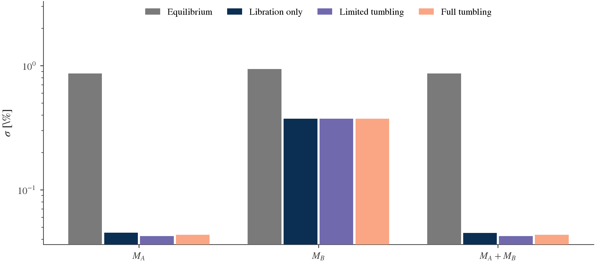
These are formal uncertainties for Didymos, Dimorphos and their correlated total mass. The mass plot supplements the paper's Table 2.
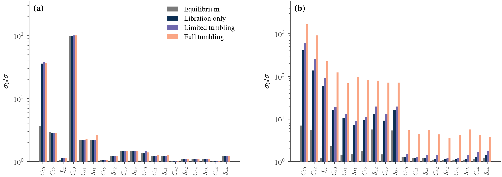
Figure 4 layout: Didymos (a), Dimorphos (b); four rotational cases and the normalized polar moment alongside the gravity coefficients. The colors, plain bars, internal legend and panel proportions follow the supplied paper. Figures are rendered from retained validated results.
Degree, prior and gravity trades
Use separate choices rather than changing a kernel:
# Inside a script with make_analysis from examples/hera_covariance.py:
degree2 = make_analysis("AC3", estimate_degrees=(2,), prior="none")
# The paper's expanded no-prior case: primary-only higher harmonics.
primary_high = make_analysis(
"AC3",
estimate_degrees=(2, 3, 4),
parameterization="harmonics",
higher_degree_bodies="primary",
prior="none",
)
paper_baseline = make_analysis("AC3")
gravity4 = make_analysis("AC3", gravity_degree=4)
The second Figure 5 group estimates both bodies' degree-2 inertia coordinates and masses, plus primary-only exterior degree-3/4 harmonics. It is not the same as both-body raw degree-4 moments without a prior. The latter retains structural trace null directions; its unavailable uncertainties must remain unavailable.
degree_trades.py makes these comparisons from one design matrix. The evidence script tools/evidence/hera_degree_trades.py separates the two steps: propagate makes a new variational solution, and compare verifies and reuses completed ones without more propagation. The recorded comparison used the analytic partials, so its compare defaults to --derivatives native (the earlier word for them), while a fresh propagate defaults to AD. A variational solution computed with one is refused for an analysis that names the other.
Figure 5's reproduced no-prior sigma errors are 2.5417e-6 for degree 2 and 3.8168e-6 for the primary-only higher-degree experiment. The four prior cases pass the same Table 2 checks. Degree-trade evidence records the exact scientific configuration.
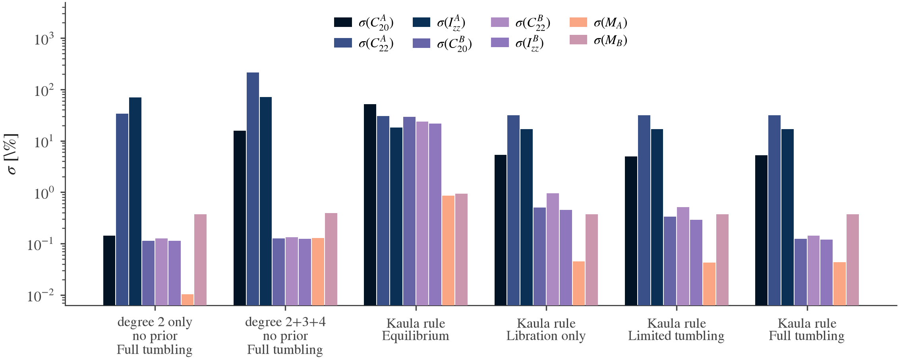
The six groups compare the two no-prior experiments with the four Kaula-prior rotational cases. The legend includes both estimated masses. Izz denotes the normalized polar moment used in the paper's percentage reports.
Changing gravity order requires a new trajectory. Changing only compatible priors/noise can reuse rows. Reducing the uncertain coordinate subset can reuse validated variational solution through the corresponding map; it conditions omitted estimated parameters as fixed. The workflow chapter explains reuse boundaries.
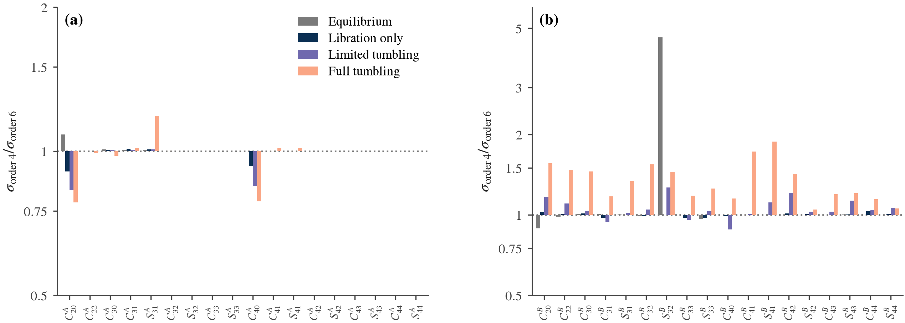
An order-4/order-6 ratio compares two model-conditioned covariances. It does not measure parameter bias from omitted gravity or prove that the model with smaller formal errors is more accurate.
Figure 3 and the shape ensembles
# Refit both archived ensembles; no trajectory propagation and no new shapes.
python examples/covariance/hera/kaula_priors.py
# The same with options: LaTeX text, or a small new seeded ensemble instead.
python tools/evidence/hera_kaula_priors.py --tex
python tools/evidence/hera_kaula_priors.py --fresh --max-degree 4 --copies 3 --subdivisions 1
The archived fit reproduces the Didymos law exactly and the Dimorphos law to 5.9e-15 maximum relative difference. The ensemble includes 200 shape perturbations plus density variants. Fresh low-resolution sampling is an API demonstration, not a fresh reproduction of the complete paper ensemble.
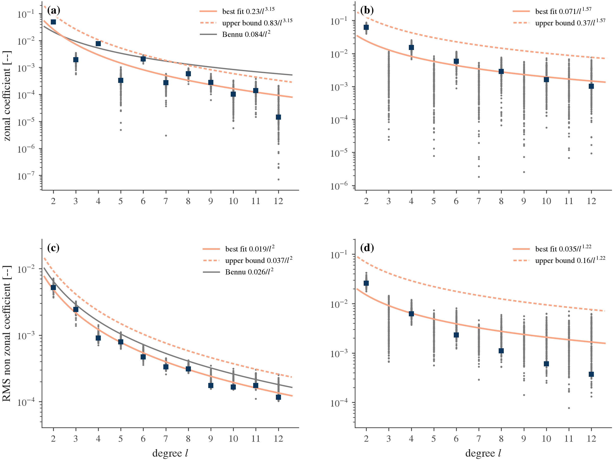
Didymos occupies the left column and Dimorphos the right. Grey points are the retained perturbed-shape models; navy squares are the nominal constant-density values. Orange solid and dashed curves give the fitted law and adopted upper bound. The Didymos panels also show the Bennu reference law.
Fresh propagation, row replay and saved results
| Operation | What it establishes | Additional dynamics |
|---|---|---|
Fresh CovarianceAnalysis.design_matrix() |
BASCO's variational solution, observation assembly, priors and solver reproduce the configured experiment | Yes |
hera.load_hera_archive(...) |
Archived PyGUBAS rows, transformed into physical SI coordinates, agree under BASCO covariance/report algebra | No |
hera.load_saved_variational_solution(...) |
A checked completed BASCO trajectory supports a compatible new estimated parameter/measurement analysis | No |
read_results(folder) or presentation rendering |
A saved result is checksum-valid and can be read/reformatted | No |
Replay converts native kilometers, fractional moment/GM columns and centered Legendre barycenter coefficients into SI mass, moment, R0 and V0 coordinates. It is valuable independent evidence of conversions and algebra, but it cannot validate fresh dynamics on its own.
The latest Phase 2 acceptance is four fresh default-Hou-AD runs, not replay. All 160 reported sigmas pass the declared 1e-3 relative archive/analytic criterion, and all 36 printed Table 2 values match their rounding bins:
| Case | Maximum relative sigma error vs archive | Vs frozen analytic |
|---|---|---|
| AC0 | 5.291134e-11 | 1.160849e-11 |
| AC1 | 6.788903e-11 | 3.926393e-11 |
| AC2 | 2.780115e-10 | 1.373615e-10 |
| AC3 | 2.243221e-6 | 1.457388e-6 |
The full-tumbling case amplifies long-arc rounding; its small residual difference is recorded, not hidden. Earlier fresh propagation with analytic partials and archived-row replay are separate checkpoints. Historical replay's maximum relative sigma error was 2.475084e-9 under its stricter 1e-7 criterion.
The latest Phase 2 validation record owns the current acceptance numbers. Frozen compact evidence retains covariance/scales, comparisons, executed source and logs. Earlier reproduction notes explain source capture, conversions and native evidence; statements there about then-unimplemented AD/schedules are historical.
Output files
The one-case export contains the paper, harmonics and mass report families, numeric arrays, layouts/units, configuration/provenance, checksums and optional figures. Standard run names include a descriptive label, UTC timestamp and analysis fingerprint. See results for the full directory contract.
saved = bc.read_results(folder) # Verifies the completed standard run.
print(result.mass_properties().summary()) # Both masses, total, GMs and ratio.
print(hera.hera_report(result).summary()) # Exact paper conventions.
Never label a prior/noise/degree variant as the paper baseline without recording its changes. The saved configuration and provider identity are the evidence, not the folder's informal nickname.
Limits of the reproduction
These are formal local uncertainties around a nominal rigid-body model. They do not constitute a fit to actual Hera observations, a nonlinear uncertainty-validity proof over chaotic arcs, or a new integration-step convergence analysis. Complete end-to-end finite-difference coverage of the covariance chain is still open.
Round 20 supplies Table 2's baseline. Six same-dynamics round-21 prior/noise/baseline variants have been checked; 13 other round-21 trajectory/basis variants remain unverified. In particular, one archived position-noise sweep holds the barycentric noise fixed while later paper plotting ties it to relative-position noise. Baseline 1 m results coincide; other points need the matching reanalysis.
Continue with multi-arc analyses, shapes and Kaula, or the complete capability map.
Dimorphos tumbling playground
Use this separate playground to try initial conditions and inspect Dimorphos' nominal attitude over time. It runs the same coupled Hou binary dynamics without computing covariance, observations, priors or state-transition matrices. Your covariance scripts and the paper presets remain unchanged.
Run a nominal experiment
From the BASCO repository root:
python playgrounds/dimorphos_tumbling/run.py --open
The script reads config.json, initially preserves paper AC2, propagates eight requested orbits, saves an independent experiment under results/tumbling/ and opens the local report. The report is a standalone HTML file with a saved-sample time slider, orientation display and angle traces. Changing playback time does not recompute physics. Edit the settings or command and run again for a new scenario.
For a short custom trial:
python playgrounds/dimorphos_tumbling/run.py \
--case AC2 --orbits 4 --roll 0 --pitch 5 --yaw 20 \
--spin-period-hours 12 --spin-tilt-deg 30 --open
--open is optional. It opens a completed local report, not a server. Use --help for the available overrides. Installation explains the environment.
Example runs
These three saved nominal experiments use the original paper bodies and cases, Hou order 6 and a 75 s step. Each requested eight reference orbits; the explicit cadence rounding gives 91 h and 1,093 saved samples. The plots use physical degrees and the same Hill/XYZ convention.
| Case | Roll sampled half-range | Pitch sampled half-range | Yaw sampled half-range |
|---|---|---|---|
| AC0 equilibrium reference | 0.0216 degrees | 0.0199 degrees | 0.1995 degrees |
| AC2 limited-tumbling initial state | 44.23 degrees | 16.50 degrees | 34.96 degrees |
| AC3 full-tumbling initial state | 197.59 degrees | 58.14 degrees | 315.26 degrees |
AC3 spans full turns in roll and yaw. Its half-ranges describe the sampled excursion; they are not periodic oscillation amplitudes.
Equilibrium reference

Open the AC0 orientation viewer.
Limited-tumbling initial state

Open the AC2 orientation viewer.
Full-tumbling initial state

Open the AC3 orientation viewer.


The AC2 75/37.5 s refinement comparison gives a maximum orientation difference of 0.02452 degrees over the full 91 h and 0.0002712 degrees within the first reference orbit. This is a numerical check for that declared example, not an accuracy claim for every custom long-term tumble. Implementation and numerical evidence records the checks.
Set attitude and angular velocity
| Setting | Meaning |
|---|---|
base_case / --case |
AC0-AC3 supplies the starting bodies and complete initial orbit/state |
initial_attitude_deg |
[roll, pitch, yaw] relative to the instantaneous Hill frame; null preserves the preset |
--roll, --pitch, --yaw |
Override individual initial angles in degrees |
spin_period_hours |
Positive initial spin period; null preserves the preset magnitude |
spin_tilt_deg |
Initial angular-velocity direction from Dimorphos' positive body z axis |
spin_azimuth_deg |
Spin direction azimuth in the Dimorphos body x-y plane |
spin_body_deg_s |
Alternative explicit body-frame angular-velocity vector; do not combine with period/tilt/azimuth |
duration_orbits, dt_s, cadence_s |
Requested horizon, RK4 integration step and saved output interval |
primary_mass_kg, secondary_mass_kg, secondary_semi_axes_m |
Optional mass/shape overrides; null retains the reference |
Null spin controls preserve the case's exact stored spin arithmetic. An orientation override changes the body's direction, while a spin override changes angular velocity. These are independent physical choices. A spin tilt does not impose a constant future wobble amplitude; that behavior follows from the coupled dynamics and inertia.
The nominal model retains the starting orbit when masses or shapes change. It does not solve a new orbit period or refit an initial velocity. For complete system changes, use the custom covariance model example.
Roll, pitch and yaw conventions
The displayed axes are the instantaneous physical Hill/RTN frame: x points from Didymos to Dimorphos, z follows the inertial relative orbital angular momentum, and y completes the right-handed frame. They do not rotate with Didymos' rapid body spin. With C_NH mapping Hill to inertial axes and C_NB = C_NA C_AB,
C_{HB}=C_{NH}^T C_{NB}.
Default sequence="XYZ" is intrinsic 1-2-3:
C_{HB}=R_x(\phi)R_y(\theta)R_z(\psi),
where phi, theta, psi mean roll, pitch and yaw. Optional sequence="ZYX" uses C_HB = Rz(yaw) Ry(pitch) Rx(roll). Both return columns in roll/pitch/yaw order. Match the frame, axis signs, Euler sequence and time interval before comparing amplitudes with a meeting figure. The SciPy rotation convention distinguishes intrinsic uppercase sequences and documents their singularities (checked 2026-11-06).
The orientation display uses an ellipsoid with the declared nominal secondary semiaxes. It illustrates the saved orientation and shape proportions, not surface reconstruction or particle motion.
Read amplitudes and tumbling diagnostics
The report gives three complementary views:
- Euler history: locally unwrapped roll/yaw, principal pitch and explicit chart gaps.
- Body spin: angular-velocity components in Dimorphos axes and tilt from positive body z.
- Body directions: direction cosines of the three Dimorphos axes in the Hill frame. These remain interpretable at Euler singularities.
The summary records sampled minima, maxima and half-ranges within summary_start_hours to summary_stop_hours. The half-range is (maximum - minimum)/2 on one continuous nonsingular chart segment. It is a sampled excursion, not automatically a periodic libration amplitude. Spans of a full turn are flagged separately. No automatic dynamical classification or frequency fit is inferred from those flags.
Near pitch of plus or minus 90 degrees, individual Euler angles are not uniquely defined. The playground masks samples with abs(cos(pitch)) <= gimbal_tolerance_abs_cos_pitch (default 0.001); this is an explicit plotting-chart condition. The numerical report masks those samples and splits local unwrapping at singular or unresolved chart changes. It never bridges such a gap to invent one amplitude. Inspect body directions and spin as well as Euler angles. Saved cadence cannot reveal an unseen full turn between samples; increase output resolution when motion is fast.
Files, refinement and reuse
Every complete experiment has its own descriptive timestamped folder with index.html, exact config.json, physical initial-state.json, summary.json, history.csv, amplitudes.csv, three PNG/SVG/PDF figure families, checksum-verified numeric/ arrays and a final manifest. Original GUBAS state samples remain the scientific record. Any closest-rotation projection used to calculate plotting angles is explicitly diagnosed and never overwrites those samples.
The effective horizon rounds the request up to the next output cadence; requested and propagated values are both recorded. Cadence must be an integer multiple of the RK4 step. For a refinement check, repeat the same trial with --dt 37.5 while retaining the cadence and compare rotation/spin and sampled ranges. Long chaotic histories may diverge; short-time numerical agreement is not proof of a long-term phase prediction.
The runner uses propagate_nominal and attitude_history. Plotting and the saved-sample viewer are independent of propagation. Once you choose a scenario, reuse its full initial state and the same bodies/gravity in make_analysis through model=. This playground does not change the original paper inputs.
The current model is rigid, conservative full-two-body gravity, with no impacts, shape changes, external torques or damping. It is a way to explore candidate initial conditions, not an inference of the present spin state from the meeting observations.
Particle trajectories
basco.particles propagates massless particles around the binary: ejecta, boulders, anything
small enough not to move the two bodies. The bodies follow the full two-body equations with
Hou's mutual gravity. Each particle feels both bodies and, optionally, the Sun. Particles do
not feel each other, and a particle's propagation ends when it reaches a surface; there is no
bouncing.
How the particle simulation works follows one particle through the code, step by step. This chapter is the reference for the choices.
Run an example
source tools/activate
python examples/particles/1_launch_from_surface.py
The six particle examples start from a launch of five particles and go up to a study of several hundred from a CSV file.
Write a short runner
from basco import particles as bp
environment = bp.didymos_environment(state="AC2")
site = environment.site("Dimorphos", latitude_deg=0.0, longitude_deg=180.0)
initial_conditions = bp.read_initial_conditions("data/milani_bed1/dimorphos.csv")
trajectories = bp.propagate(
environment, initial_conditions, site=site, duration_s=24 * 3600, workers=8
)
trajectories.save("results/my_trajectories")
impacting = trajectories.impacting("Dimorphos")
bp.plot_trajectories(impacting, frame="Dimorphos", file="trajectories.png")
bp.plot_impact_map(impacting, file="impact_map.png")
The table of initial conditions has one row per particle: position x_m, y_m, z_m and
velocity vx_m_s, vy_m_s, vz_m_s. It is given in the frame you name when propagating:
site=site (x east, y north, z up, velocities relative to the ground), body="Dimorphos"
(that body's fixed frame), or neither (the inertial frame).
Select particle gravity
didymos_environment(gravity=...) chooses the gravity of each body on a particle. This never
changes the mutual gravity that moves the two bodies.
gravity= |
Model | Where it is valid |
|---|---|---|
"polyhedral" (default) |
PolyhedralField: the constant-density polyhedron of the shape model (Werner and Scheeres) | Everywhere outside the surface |
"hou" |
HouParticleField: the series used for the binary | Outside the body's Brillouin sphere only |
"hou_no_brillouin_check" |
HouFieldWithoutBrillouinCheck: the same series evaluated inside that sphere too | Not guaranteed inside; for comparisons |
"point" |
PointMassField | Everywhere |
The Brillouin sphere of a body is the smallest sphere about its centre of mass that contains it. A series in powers of 1/r converges only outside it, so a particle launched from the surface needs the polyhedral model. A higher order of the series does not change that.
6_compare_gravity_models.py propagates the same particles under two models.
Add the Sun and radiation pressure
from basco import particles as bp
sun = bp.SolarForces(bp.FixedSun([1.5 * bp.AU_M, 0.0, 0.0]))
environment = bp.didymos_environment(state="AC2", sun=sun, shadow="sphere")
FixedSun holds the Sun at one position relative to the barycentre, which is adequate for a
short propagation. TabulatedSun interpolates positions you supply and refuses times outside
its table.
- Solar gravity acts on a particle relative to the barycentre: the barycentre itself falls
toward the Sun, so only the difference matters.
perturb_binaryapplies the same difference to the binary's orbit, andbinary_torquesadds the Sun's gravity-gradient torque on each body. - Radiation pressure pushes a particle away from the Sun in proportion to its area-to-mass
ratio and its reflectivity, and falls off with the square of the distance. Give them as
columns
area_to_mass_m2_kgandreflectivityof the table of initial conditions. A ratio of zero means no radiation pressure. shadowis"none","sphere"(a body shadows as its Brillouin sphere) or"mesh"(a ray toward the Sun is tested against both shapes). The Sun is a point; there is no penumbra.
Radiation pressure on the two bodies is not modelled.
How a propagation ends
The propagator integrates with DOP853, an adaptive eighth-order Runge-Kutta method, and watches the signed distance from each particle to each surface. When that distance changes sign during a step, the crossing is located inside the step and the particle is terminated there. The others continue.
trajectories.outcome |
Meaning |
|---|---|
"impact" |
It reached a body's surface; impact_body names the body |
"in_orbit" |
No impact by the final time, and bound to the binary |
"escape" |
No impact by the final time, and unbound: positive two-body energy about the barycentre |
"domain_exit" |
It entered a Brillouin sphere while the gravity model was the Hou series |
"In orbit" and "escape" describe the state at the final time. Neither proves what happens later.
Per particle, Trajectories also gives the time of flight, v1 (the speed at the initial
time, in the frame of the table), v2 (the speed at impact relative to the surface), the
impact point and, for a particle that returns to the body it started from, the distance from
the site.
Find the results
trajectories.save(folder) writes:
my_trajectories/
trajectories.npz # states, body-fixed positions, altitudes, outcomes, shapes
trajectories.json # body names, masses, settings, labels
initial_conditions.csv # the table that was propagated
table.csv # one row per particle: outcome, time of flight, v1, v2, impact point
bp.load_trajectories(folder) reads them back, so figures and animations can be redrawn
without propagating again
(4_redraw_saved_trajectories.py).
The figures are plot_trajectories, plot_impact_map, plot_altitude, plot_outcomes,
plot_impact_statistics and plot_summary, and animate writes a movie. Particles that
impact the body they started from are best drawn in that body's fixed frame, the others in the
rotating frame of the binary.
Detailed single-propagation tools
basco.validation.particle_studies holds older tools for looking closely at one propagation:
exports with checksums (export_particles),
osculating orbital elements, and the comparison of two gravity models at matching epochs.
They work on the output of propagate_particles,
the propagator underneath propagate, which integrates one binary with a few particles and
takes the gravity fields as objects. The figures below were made with them.
Example results
These figures were made on 2026-11-09 with the detailed single-propagation tools that are now
in basco.validation.particle_studies. They use the reference Didymos and Dimorphos shape
models, whose inertia integrals define the order-6 binary; the polyhedral gravity uses the
same shapes and masses. The binary starts from the Hera case AC2. The fixed Sun, the radiation
pressure, the initial states and the constant density are choices made for the demonstration.
Eccentric trajectories over two hours


The three particles reach 7200 s without impact. At the shared saved epochs, the largest Hou-versus-monopole position difference is 1.85346 m. This compares receiving-field representations under the same binary motion and solar assumptions; it is not an observational error estimate.
Launches from both surfaces


The Didymos particles reimpact at approximately 327.897, 676.510 and 1070.908 s. The slowest Dimorphos particle reimpacts at 555.322 s; two others reach the 1200 s forecast horizon. Those completions do not establish permanent escape. The target-only views retain the physical metre scale and omit the companion from the display, while its force remains in the propagated dynamics. Paths are drawn above facets for visibility. The Didymos hops rise at most about31m and have less than2m lateral spread, so their tracks overlap at the whole-body scale; the distance histories separate their motion.

Didymos launch animation · Dimorphos launch animation · Binary trajectory animation


Animations consume only the saved states and exact saved meshes. Their displayed time is physical elapsed seconds; playback rate is a presentation choice. No new propagation or interpolation is used to generate these frames.
Other diagnostic figures
Eccentric trajectories: a/e histories · a–e plane · body-centre distances · energy and angular momentum.


Didymos launch: a/e histories · a–e plane · body-centre distances · energy and angular momentum.


Dimorphos launch: a/e histories · a–e plane · body-centre distances · energy and angular momentum.


Validation and limits
Validation record · Design note · First example
Both records were written before the particle code was reorganized in November 2026 and use the names of that time.
The particle simulation computes trajectories without partial derivatives. The uncertainty of a trajectory is a separate calculation: see Particle and impact covariance. Polyhedral gravity here assumes constant density; the uncertainty of a shape or of a density is not propagated.
Example scripts
The scripts in examples/ are meant to be copied and edited. Each has its settings as plain
variables at the top and then runs from top to bottom, in about a page. None takes
command-line options: to change something, edit the variable.
source tools/activate
python examples/particles/1_launch_from_surface.py
Outputs go to results/, which Git ignores. An example that saves a covariance analysis
writes into a new folder on every run.
Particle simulation
| Script | What it shows | Time |
|---|---|---|
| 1_launch_from_surface.py | Five particles launched straight up from a site on Dimorphos, with initial conditions made from arrays in the script | 1 min |
| 2_orbits_around_the_binary.py | Inertial initial conditions and the Hou gravity model, for orbits around the whole binary | 2 min |
| 3_many_particles_from_a_file.py | A table of initial conditions from a CSV file, several worker processes, all figures and two animations | 5 min |
| 4_redraw_saved_trajectories.py | Load saved trajectories and redraw them at other zoom levels and for your own groups of particles | 1 min |
| 5_bed1_all_sites.py | A whole study: both bodies, pole and equator, one PDF and animations | 1 h to propagate, minutes to redraw |
| 6_compare_gravity_models.py | The same particles under polyhedral gravity and under the Hou series | 3 min |
How the particle simulation works explains what these scripts call.
Covariance analysis: basics
| Script | What it shows | Time |
|---|---|---|
| synthetic_binary.py | A made-up binary: which masses and gravity terms the observations constrain | 1 min |
| custom_binary.py | A binary of your own from ellipsoids and an initial state | 1 min |
| reuse_design_matrix.py | New a priori covariances, noise and observation types on a design matrix already computed, with no new propagation | 1 min |
| ad_and_analytic_partials.py | The same analysis with automatic differentiation and with the hand-derived partials | 1 min |
| gravity_models.py | Legacy alternative mutual-gravity models compared with Hou | 5 min |
How the covariance analysis works explains what these scripts call.
Covariance analysis: the Hera paper
Times are for the paper's 16 orbits; set ORBITS = 1 for a quick look.
| Script | What it shows | Time |
|---|---|---|
| one_case.py | One case of the paper next to its Table 2; edit CASE |
25 min |
| paper_case.py | The full-tumbling case with tables and figures | 25 min |
| all_cases.py | All four rotation states of Table 2, one after the other | 100 min |
| custom_system.py | Your own masses, secondary shape and secondary rotation | 25 min |
| degree_trades.py | Which degrees are estimated and whether the Kaula rule is used, from one design matrix | 25 min |
| consider_and_histories.py | Higher degrees estimated, considered or fixed, and the covariance as observations accumulate | 30 min |
| multi_arc.py | Independent arcs and a daily gap in the observations | 10 min |
| kaula_priors.py | The paper's Kaula rules fitted again from its shape ensembles | seconds |
| kaula_from_a_shape.py | A Kaula rule for a shape of your own | 1 min |
Run and customize the Hera analysis walks through them, and The Hera results has the numbers.
Covariance of a particle's trajectory
| Script | What it shows | Time |
|---|---|---|
| quickstart.py | The smallest complete case | seconds |
| particle_covariance.py | The contributions of the binary's and of the particle's own uncertainty | 1 min |
| from_saved_hera_analyses.py | A particle whose initial covariance comes from saved Hera covariance analyses (run consider_and_histories.py first) |
1 min |
| impact_covariance.py | The covariance of the time and the point of an impact on Dimorphos or Didymos | 1 min |
| long_trajectories.py | A particle that coasts for hours, kilometres from the binary | 10 min |
| local_field_from_hou.py | A local gravity field near the surface fitted to the Hou series, with its covariance | 1 min |
| local_field_direct.py | A local gravity field with coefficients and covariance given directly | seconds |
The chapters Particle and impact covariance, Local-field gravity, Long approaches and flybys and 3D approach and impact explain the methods and show the results.
Scripts that take options
The figures and numbers in this manual were produced by scripts that take command-line
options and write checksummed result folders. They live in tools/evidence/ and call the
same library functions as the examples. Use them to reproduce a figure exactly; use the
examples to learn and to start your own work.
| Evidence script | Corresponding example |
|---|---|
tools/evidence/synthetic_binary_artifact.py |
basics/synthetic_binary.py |
tools/evidence/hera_all_cases.py |
hera/all_cases.py |
tools/evidence/hera_degree_trades.py |
hera/degree_trades.py |
tools/evidence/hera_consider_and_histories.py |
hera/consider_and_histories.py |
tools/evidence/hera_multi_arc.py |
hera/multi_arc.py |
tools/evidence/hera_kaula_priors.py |
hera/kaula_priors.py |
tools/evidence/particle_covariance_cases.py |
trajectory/particle_covariance.py |
tools/evidence/particle_from_saved_hera_analyses.py |
trajectory/from_saved_hera_analyses.py |
tools/evidence/local_field_cases.py |
trajectory/local_field_from_hou.py, local_field_direct.py |
tools/evidence/landing_covariance.py |
trajectory/impact_covariance.py |
tools/evidence/mission_scale_trajectories.py |
trajectory/long_trajectories.py |
Each prints its options with --help, for example:
python tools/evidence/hera_all_cases.py --help
Some of these scripts still use earlier words in their options (--derivatives manual,
--backend native); both mean the hand-derived analytic partials.
The separate Dimorphos tumbling playground runs the nominal dynamics only, for experiments with attitude and spin.
Particle and impact covariance
BASCO now propagates a massless particle in the full rotating binary system, with its own six-component inertial initial position/velocity and their uncertainty. Both asteroids retain extended-body Hou translation and rotation. The particle feels both gravity fields and has no effect on the binary: the restricted full three-body problem (RF3BP).
This is covariance analysis only: no simulated measurements, parameter fitting or filter updates. A nominal trajectory and its sensitivities map a fixed source uncertainty into particle position and velocity covariance. Initial conditions can be inertial Cartesian or body-fixed release conditions on either asteroid. A retained binary variational solution supplies a later release state and its sensitivities to the original source coordinates. The examples on this page retain their exterior Hou fields. The separate 3D approach and impact guide adds selected direct local-field mesh approaches and smooth first-contact covariance; the local-field gravity guide documents their reusable field/source mapping.
For longer trajectories in a fixed target-body frame, with inertial and particle-following comparisons, see Long approaches and flybys. Those gravity-only cases start 2–4 km from the barycentre and keep the exterior field-domain checks active.
Example
For a self-contained first script, use quickstart.py, which builds the made-up binary of basco.covariance.synthetic and needs no data files. Replace that model with your own BinarySystem.
particle_covariance.py uses the Hera case AC3, Hou order 6 and uncertain masses and inertia integrals through degree 4. Its core is:
from basco.covariance import RK4
from basco.covariance.trajectory import RF3BPDynamics, ParticleState
# model, parameters and source are declared separately below.
dynamics = RF3BPDynamics(model, parameters) # AD by default
initial = ParticleState([1800, -900, 500], [-0.05, 0.09, 0.02])
trajectory = dynamics.propagate(
initial, duration=900, cadence=30, integrator=RK4(5),
)
history = trajectory.covariance(initial_covariance)
The script builds the model and the initial covariance explicitly. Run it from the repository root:
python examples/covariance/trajectory/particle_covariance.py
BACKEND = "analytic" at the top of the script selects the hand-derived partials. Mutual gravity order, the order of the particle's gravity, the uncertain parameters, the initial state and its uncertainty are separate inputs. field_order may be 2, 4 or 6, up to the mutual order. The estimate_masses and estimate_moments calls choose which parameters the trajectory is differentiated with respect to; nothing is estimated here.
Source uncertainty
The example uses a declared demonstration distribution, not the saved Hera covariance-study result. Binary coordinate sigmas are 0.001 times the selected coordinate scales; particle initial sigmas are 1 m per position component and 0.001 m/s per velocity component. The binary and particle input errors are independent by explicit assumption. Coordinate scales are not inferred priors; the chosen fraction is an example input.
import numpy as np
from basco.covariance.trajectory import InitialCovariance
layout = parameters.joint_layout()
initial_covariance = InitialCovariance.from_factor(
layout, np.diag(0.001 * layout.scales),
source="Declared example uncertainty; not a saved Hera covariance",
reference_epoch_s=0, information_cutoff_s=0,
)
initial_covariance = initial_covariance.with_independent_particle(
np.diag([1, 1, 1, 1e-6, 1e-6, 1e-6]),
)
For correlated particle/binary errors, supply the complete joint layout and physical factor to from_factor; common latent columns retain the cross terms. from_covariance validates a newly supplied PSD distribution. from_result retains an existing covariance/consider result's original QR/SVD factor, full correlations and null-support policy. It does not reconstruct the factor from rounded dense covariance or create new information.
Without an epoch mapping, inertial initial errors and the binary model share the source reference epoch. With an epoch mapping, the source keeps its original epoch while the retained binary state and particle release have a later epoch. The information cutoff records knowledge already included; changing its label does not alter data or advance the nominal binary. A formal covariance that includes later observation information can describe a retrospective uncertainty map, but is not a forecast from before that information. The Hera-informed release example keeps all three epochs explicit.
Didymos example results
The validated case propagates 900 s with a 30 s output cadence. At the 5 s step, final combined component sigmas are approximately (1.34735, 1.34469, 1.34406) m and (1.00223, 0.999250, 0.998602) mm/s. These values depend on the declared example uncertainty; they are not a paper impact result.
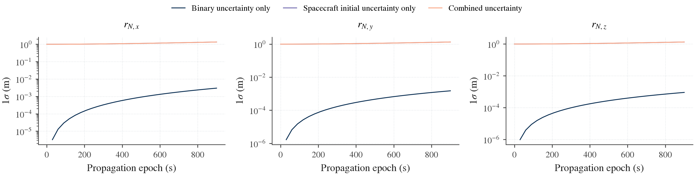
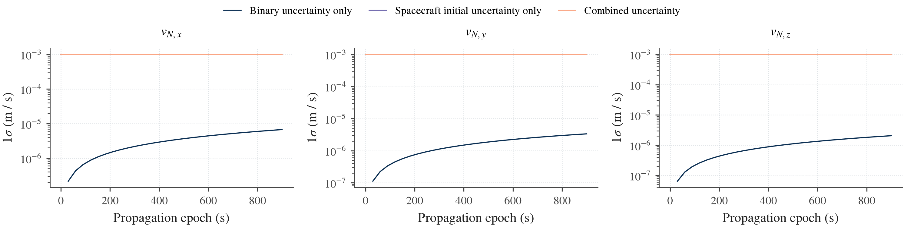
The combined and particle-initial curves nearly coincide because that input dominates this short example. The binary-only contribution remains visible on the logarithmic axis. Independent input covariance contributions add; correlated inputs must instead use their full joint factor.
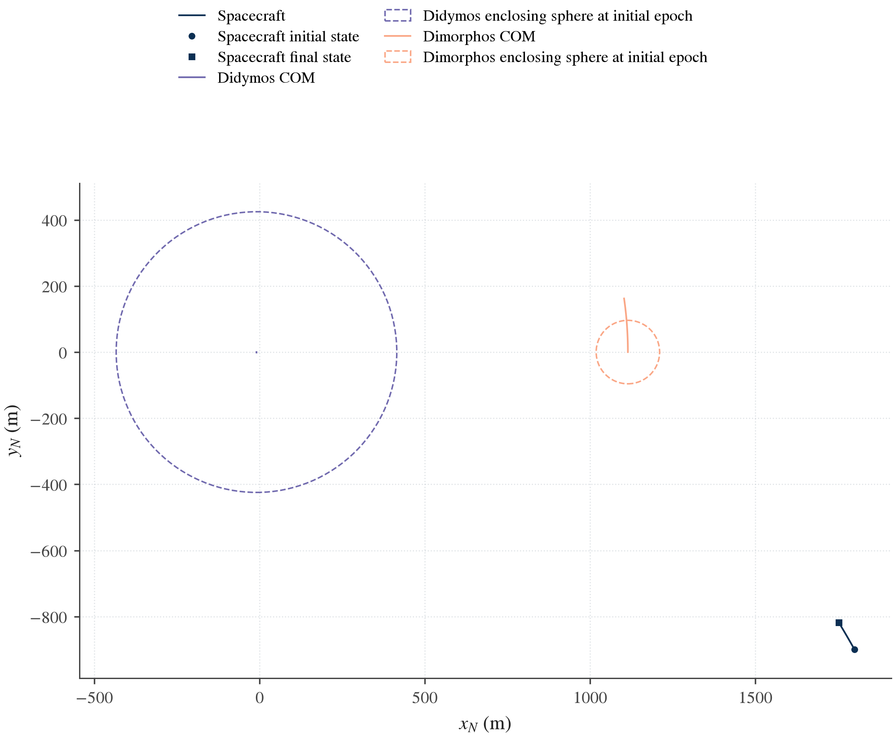
This trajectory stays well outside the Brillouin spheres: minimum sampled clearances exceed 1.58 km from the primary bound and 1.14 km from the secondary bound. Dashed circles show Brillouin spheres at the initial epoch, not asteroid surface models. There is no impact event or impact footprint in this example.
Hera-informed release
from_saved_hera_analyses.py applies this to an existing Hera covariance result. It compares coestimated and considered degree-3/4 gravity uncertainty for a particle that starts from Dimorphos. These are the completed Hera consider/history cases, not the declared distribution above. The binary is case AC3 with Hou gravity order 6. The saved result is a formal covariance from the Hera analysis, not an estimate fitted to actual observations. It already contains that analysis's observations; the particle calculation adds no observation rows, noise draws or refit.
Reload an existing covariance result
load_covariance_analysis verifies a completed standard run, its saved original factor, physical-coordinate definitions and nominal/variational binary arrays. It returns a SavedCovarianceAnalysis with uncertainty, variational_solution, analysis_fingerprint and the included-information cutoff. For a consider result, it also retains the conditional factor and estimated-consider response needed for cancellation-aware output maps. A run saved without the required original factor fails explicitly; the loader does not factor a rounded covariance or recreate observations.
The following fragment assumes model and parameters from the linked runner's make_model() and an absolute saved_run path to one completed source case:
import numpy as np
from basco.covariance import RK4
from basco.covariance.trajectory import BinaryEpochMapping, BodyFixedInitialState, RF3BPDynamics
from basco.covariance.trajectory.saved_analysis import load_covariance_analysis
retained = load_covariance_analysis(saved_run, parameters, reference_epoch_s=0)
release_epoch_s = retained.information_cutoff_s
handoff = BinaryEpochMapping.from_variational_solution(
retained.variational_solution, parameters,
epoch_s=release_epoch_s,
reference_epoch_s=retained.uncertainty.reference_epoch_s,
)
release = BodyFixedInitialState(
"secondary", position=[0, 0, 250], velocity=[0.01, 0.02, 0.03],
)
initial_covariance = retained.uncertainty.with_independent_release(
release, factor=np.diag([0.1] * 3 + [0.0001] * 3),
release_epoch_s=release_epoch_s,
)
trajectory = RF3BPDynamics(model, parameters).propagate(
release, handoff=handoff, duration=900, cadence=30, integrator=RK4(5),
)
observation_nuisance = tuple(
f"barycenter.{kind}.{axis}"
for kind in ("offset", "rate") for axis in "xyz"
)
history = trajectory.covariance(initial_covariance, ignored_labels=observation_nuisance)
BodyFixedInitialState.position is the COM-relative offset in the selected body's frame, in metres. velocity is the body-frame derivative of that offset in m/s. A zero relative velocity still gives inertial motion from the body's translation and rotation. The example offset is a release above the body, not a claim of a surface point or detected impact. The independent release-error sigmas are 0.1 m and 0.0001 m/s per component. This is an explicit additional assumption; it is not inferred from the Hera covariance.
The six barycenter.offset/rate labels above describe the source analysis's observation bias. They have no force or barycentric-relative particle output pathway, so this application explicitly maps those output columns to zero. The original factor and its physical-coordinate correlations remain intact. Unknown or mismatched physical coordinates cannot be silently ignored.
Keep the three epochs distinct
| Epoch | Meaning in this example |
|---|---|
| Source reference: 0 s | Original binary initial-state and mass/gravity error coordinates. Their saved factor and null-support policy remain unchanged. |
| Information cutoff: 654300 s | Last actual observation-row epoch included in the saved covariance. This is read from the source run rather than inferred from a configured duration. |
| Release: 654300 s | Exact stored binary epoch selected for release. Particle output epochs begin here. |
All epochs use the same elapsed-second clock. BinaryEpochMapping.from_variational_solution selects the stored GUBAS state, STM and raw sensitivities without interpolation or attitude projection. Relabeling reference_epoch_s never advances a nominal binary. For a forecast, release must occur at or after all information included in the source covariance.
The independent helper appends labels such as particle.release.secondary.r_B.x and particle.release.secondary.v_B.x. Their body, frame, nominal offset/velocity and release epoch are recorded separately from the original source epoch. If the release errors are correlated with the binary errors, supply the complete joint factor to InitialCovariance.from_factor(..., release=release, release_epoch_s=...) instead; the common latent columns retain those correlations. from_covariance accepts the same explicit release descriptor for a newly supplied joint PSD matrix.
Release map and retained sensitivities
With body COM position/velocity c, v_c, body-to-inertial rotation R, release offset rho and body-relative velocity u,
r_S=c+R\rho,\qquad v_S=v_c+\dot R\rho+Ru.
The kinematics uses the coded binary rotation-rate equations at the retained state, including their off-manifold DCM continuation. It does not project the state or substitute an orthogonality identity. The Jacobian includes body translation, attitude, spin, mass-dependent barycentric location and release-error dependence. Thus independent body-fixed input errors do not imply independent inertial particle and binary errors after the release map.
ParticleInitialState composes this map with the earlier binary sensitivities. The propagation adapter constructs it automatically; advanced callers can inspect trajectory.initialization or use ParticleInitialState.from_epoch_mapping(handoff, release). Its full-source map is
J(t)=\Phi(t,t_r)J_0+\Psi(t,t_r)\frac{\partial p_{\mathrm{raw}}}{\partial q}.
J0 maps the original source coordinates and declared release errors to the combined state at release. The variational integrator still starts with an identity STM and zero local raw sensitivity. The original source-to-release map is composed once, preserving the complete factor and consider cancellation.
Numerical covariance variational solution
After a long binary propagation, sensitivities to the original coordinates can contain large state and parameter terms whose contributions nearly cancel. Combining them into the complete source Jacobian first can lose significant digits before its covariance factor is applied. A dense J P J.T can lose further precision. The particle adapter therefore maps the original source factor at initialization, then propagates those mapped latent errors:
\Gamma=\frac{\partial p_{\mathrm{raw}}}{\partial q},\qquad
M_0=\operatorname{map\_factor}(J_0),\qquad
M_p=\operatorname{map\_factor}(\Gamma),
M(t)=\Phi(t,t_r)M_0+\Psi(t,t_r)M_p,\qquad P(t)=M(t)M(t)^T.
The two terms use the same original latent-column order and are added before squaring, retaining their cross covariance. For a consider result, map_factor first forms the combined fitted-response/direct transfer Jx S + Jc, then applies the unchanged external consider factor. CovarianceResult.map_factor, ConsiderResult.map_factor and InitialCovariance.map_factor expose this operation without constructing a covariance.
The full original-source J(t) is still retained and governs null-support/status decisions. A finite mapped factor does not make an unresolved output observable. map_covariance(..., mapped_factors=...) accepts these mapped factors while retaining that original null policy. It requires one factor per epoch/output in the original latent basis; it is not a second uncertainty source. VariationalSolution creates no new latent columns, observation information or estimated rank, and the existing generic report arithmetic is unchanged.
Ordinary callers use trajectory.covariance(initial_covariance), which handles this composition. To inspect the factor variational solution for the Hera fragment above:
J0, Gamma = trajectory.initialization.for_layout(
initial_covariance.layout, ignored_labels=observation_nuisance,
)
M0 = initial_covariance.map_factor(J0)
Mp = initial_covariance.map_factor(Gamma)
mapped = trajectory.state_transition @ M0 + trajectory.inertia_integral_sensitivities @ Mp
mapped has shape (epoch, 36, original latent errors); its final six rows are the particle output factor. This changes numerical evaluation order, not the declared source distribution. The independent engineering release uncertainty remains the explicit additional input described above.
Hera release results and validation
The accepted run propagates 900 s with 60 s outputs and a 5 s RK4 step. Final inertial component sigmas are:
| Source treatment | Position x, y, z (m) | Velocity x, y, z (mm/s) |
|---|---|---|
| Estimate degrees 2–4 | 0.668185, 1.153074, 1.190509 | 0.193862, 0.382682, 0.322413 |
| Estimate degree 2; consider degrees 3–4 | 73.649209, 16.868613, 103.547722 | 2.664804, 12.255056, 21.947552 |
These are formal first-order trajectory covariances for the specified Hera analysis and release. The wider considered case has not yet been checked with nonlinear trajectories. Neither case is an impact ellipse or an impact probability.
The final installed suites pass 510 analytic-only and 583 AD plus plotting tests. The focused integration run passes 253 checks (two plotting-only checks skip in the AD role and pass in the full plotting suite), including all four new release/epoch mapping FD checks and the four earlier particle FD checks. The original 87 analytic-only / 117 AD snapshot items remain bitwise unchanged. Five variational solutions check both derivative backends, the independently produced analytic/AD source analyses and RK4 steps 20, 10 and 5 s. Same-source backend covariance differences are below 4.25e-17 relative; independent source-study sigma differences are below 2.67e-5. Successive-step ratios are 0.06248–0.06261, consistent with fourth-order convergence. Exact acceptance and frozen evidence state the scales and limits.
Hera release plots
The runner separates numerical execution, export and plotting. run(source_runs, backend=...) takes named completed source-run paths; export_results(...) saves the result; make_plots(...) creates the following comparison figures from those returned results. Source-run identities and initialization assumptions accompany the exported histories. Plotting uses time_origin_s=trajectory.release_epoch_s and time_label="Time since release"; only the displayed axis changes. Stored epochs and the three-epoch contract remain unchanged. The release/epoch mapping acceptance record contains the executed commands, original source identities and numerical checks.
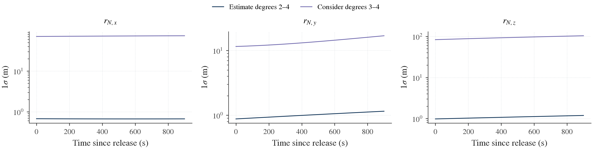
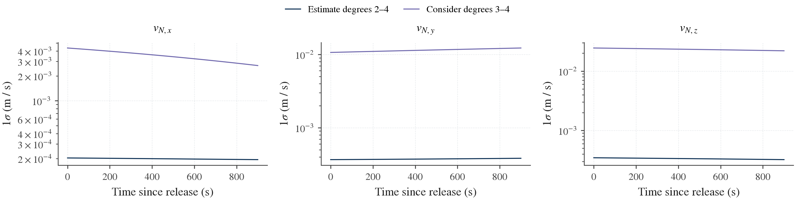
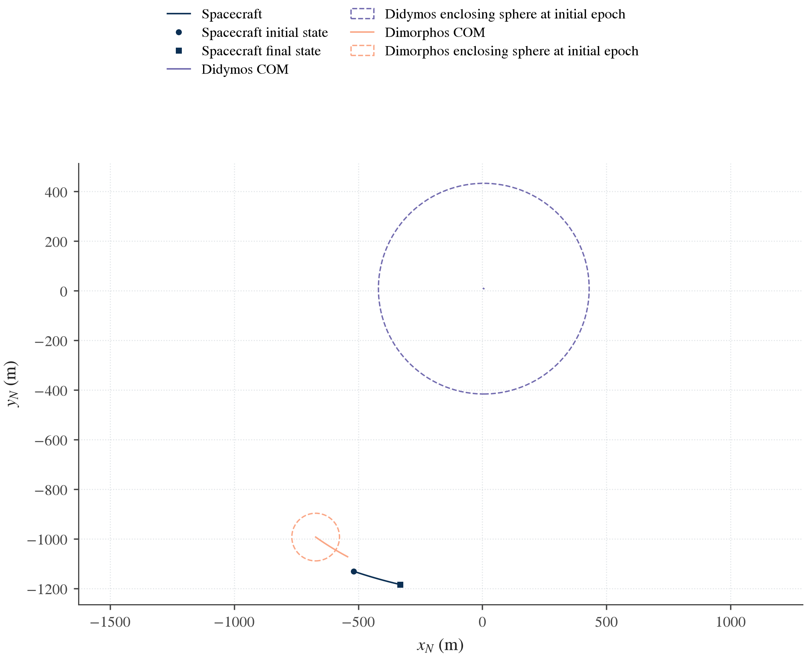
Dynamics and sensitivity equations
For binary state y, particle state s=(r_N,v_N) and parameters p,
\dot y=f_B(y,p),\qquad
\dot s=\begin{bmatrix}v_N\\a_A(s,y,p)+a_B(s,y,p)\end{bmatrix},\qquad
A=\begin{bmatrix}A_B&0\\A_{SB}&A_S\end{bmatrix}.
A_SB includes moving body COM and orientation. The zero upper-right block enforces masslessness. Direct gravity partials include mass-dependent barycentric locations and the full existing mass/normalized-moment/harmonic map. Both subsystems are evaluated at common RK4 stages, avoiding a separate interpolated ephemeris.
The local Hou body field evaluates the retained potential with a unit receiving monopole. It returns body-frame SI acceleration, position gradient and selected derivatives with respect to mass-weighted SI moments. The restricted dynamics applies the existing raw-to-physical map once. No zero-inertia third rigid body is constructed, and no copied binary equations are replaced.
The combined storage has 30 binary native coordinates plus 6 particle SI coordinates. Independent binary initial errors retain the existing 18 physical directions; particle initial errors add 6. These are different from the complete source layout, which can also contain physical parameters and explicit nuisance coordinates.
Mathematically, for full-source output Jacobian J and source factor F, the output covariance is
P(t)=(J(t)F)(J(t)F)^T.
The numerically stable evaluation above maps the latent factors before squaring. Every source cross term and unsupported direction remains represented. Unknown source labels, wrong units, mismatched epochs, changed physical definitions and changed harmonic normalization are rejected. An explicit ignored_labels list is reserved for source nuisance coordinates with no barycentric dynamics effect; physical parameters cannot be silently ignored.
Validation
The numerical evidence in this section is the earlier same-epoch inertial-initialization acceptance. These counts do not assert acceptance of the newly added release/epoch mapping application.
Independent tests cover Newtonian acceleration/gradient limits, spherical bodies, MacCullagh second-degree terms, a Legendre expansion reference, off-manifold DCM derivatives, frame rotation, no backreaction, covariance cross terms, null support and IO roundtrips. Opt-in FD checks include the full initial-state/mass/moment-to-trajectory endpoint map; they are not run in ordinary covariance analysis.
Full ordinary suites passed 414 analytic-only and 481 AD plus plotting tests. The retained 87 analytic-only / 117 AD snapshot items are bitwise unchanged. Six fresh runs compare analytic/AD at 10, 5 and 2.5 s. Maximum scaled physical-sensitivity relative difference is below 8.2e-16; the successive-step difference ratios are approximately 0.0623-0.0627, consistent with fourth-order convergence.
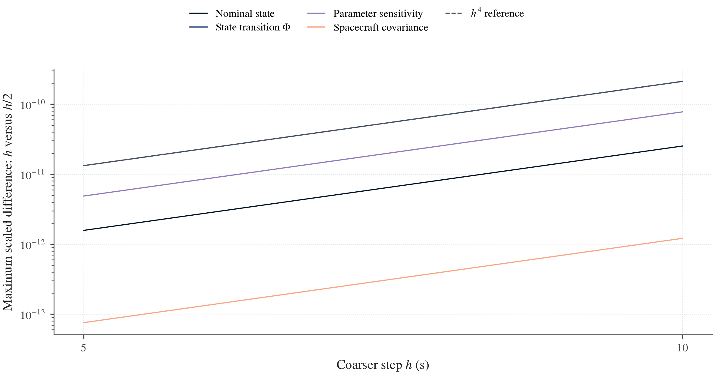
The plot shows successive numerical differences, not errors against a known closed-form RF3BP trajectory. It uses the explicit dimensionless scales in the validation record. Reproduction commands and frozen evidence distinguish executed physics from figures redrawn using saved arrays.
Functions and outputs
| Component | Responsibility |
|---|---|
| ParticleState | Initial inertial position/velocity; SI floats or compatible Astropy quantities. |
| HouBodyField | Local field values and derivatives, independent of integration/statistics. |
| BodyFixedInitialState | Body-fixed COM offset and relative velocity, inertial release state and complete local Jacobians. |
| body_poses and body_kinematics | COM positions/velocities, rotations, spins and coded rotation rates; barycentric mass dependence. |
| BinaryEpochMapping and ParticleInitialState | Exact stored binary state/source map and composition with a later particle release. |
| RF3BPDynamics | Full binary plus massless-particle equations and local state/raw-parameter derivatives. |
| ParticleVariationalSolution | Shared-stage variational solution, named source Jacobians, covariance-history adapter and common artifact export. |
| InitialCovariance | Supplied or retained factors, cancellation-aware latent maps, independent inertial/body-fixed errors and correlated-release descriptors. |
| map_covariance | Existing fixed-information history mapping, with optional mapped original latent factors and unchanged null policy. |
| load_covariance_analysis | Reload a completed covariance/consider source and binary variational solution without new observations or fitting. |
| Particle plot definitions | Position/velocity history and nominal-path figures through the common theme/export service. |
The runner exports a readable root with run.json, README.md, transport/, source/ and histories/{binary-only,particle-only,combined}/. Numeric arrays use existing versioned JSON/NPY artifacts and atomic completion. trajectory.export(...) preserves STM/raw sensitivities and coordinate metadata; read_artifact reads those arrays. Covariance histories use export_covariance_history/read_covariance_history. Figures are a separate presentation step and can be redrawn without dynamics or covariance solves.
Current limits and next steps
The exterior examples above retain their validated inertial/body-fixed initialization, on-grid binary epoch mapping and enclosing-sphere field checks. An enclosing-sphere guard cannot simply be disabled to reach an irregular surface. Their history plots remain trajectory covariance, not a surface footprint.
The local cylindrical model and source mapping can now be connected explicitly to selected particle forces in RF3BPDynamics. The 3D approach and impact guide shows Didymos and Dimorphos shape/domain views, propagated body-frame position ellipsoids, event-corrected smooth impact uncertainty and independently traced finite-horizon probes. Shared mass, body pose and source cross terms remain in the original factor. The binary still uses Hou dynamics.
Those direct-start demonstrations use a calibrated local mean and declared free coefficient/mass/release uncertainty. They are not the saved Hera posterior used in the release example above. No automatic switch at the Brillouin sphere, arbitrary-epoch epoch mapping interpolation, general multi-face Gaussian footprint, process noise or escape-probability estimator is supplied. A field-domain exit is an unknown later outcome. Mesh edge/grazing events do not receive a fabricated smooth covariance.
The near-surface plan, impact contract and current acceptance separate the completed selected scope from remaining source/transition and broader impact validation. Reuse the accepted release/epoch mapping and source services when extending these applications.
References
The design uses the orbit linearization, square-root and consider-analysis topics in Tapley, Schutz and Born, the retained Hou potential, and force/integrator separation illustrated by SCARABAEUS propagation documentation. The source audit records the reviewed resources and access limits. Numerical claims above come from BASCO's executed validation.
3D approach and impact covariance
Surface close-up animations enlarge the near-contact ellipsoids and show the evolving position marginal projected onto each body's actual impact facet. The projected current-position distribution and the fixed event-corrected impact prediction are labelled separately.
For kilometre-scale trajectories in a fixed target-body frame and several hours of evolving uncertainty, see Long approaches and flybys. This page retains the short local-field surface/impact cases.
This workflow follows a massless particle toward a selected member of a rotating binary. It displays the target shape, the local gravity domain, the Brillouin sphere, the evolving position covariance and the uncertainty at first impact. Separate nonlinear source perturbations show which displayed trajectories impact the surface, remain in flight through the forecast horizon or leave the supported field domain.
The Didymos and Dimorphos runner uses the same components for either target. The binary retains Hou translation and rotation; a selected local cylindrical field supplies the target-to-particle force, and the companion retains its exterior field. Source covariance is mapped directly. No observation values, estimator or filter are constructed.
Interactive views: Didymos · Dimorphos · Wide Didymos · Wide Dimorphos. Red indicates no impact during the recorded 300 s forecast; it is not an escape probability.
The short example propagates one case; edit TARGET, WIDE and PERTURBED at its top. The evidence script produced the figures here and takes options. Use a new output folder each time:
python examples/covariance/trajectory/impact_covariance.py
python tools/evidence/landing_covariance.py --target didymos --probes 4 --output "$PWD/results/landing-didymos" --figures "$PWD/results/landing-didymos-figures" --animation
python tools/evidence/landing_covariance.py --target dimorphos --probes 12 --output "$PWD/results/landing-dimorphos" --figures "$PWD/results/landing-dimorphos-figures" --animation
The evidence script runs the small-uncertainty and the wide case of each target. --backend native selects the hand-derived partials for the fields and the binary (the option keeps the earlier word); AD is the default. Numbers and drawing are separate functions, so saved scenes can be redrawn without propagating again.
The examples use declared uncertainty assumptions and calibrated local nominal fields. They are not impact results inferred from the Hera paper's covariance. Scientific acceptance records the executed inputs, domain and field checks, derivative tests, integration refinement and limits.
Declared example and numerical results
The short-arc binary starts from a declared 1,200 m separation and supplied spins. It uses the two aligned shapes' degree-6 nominal moments. This is a demonstration initial state, not a mission-design solution. The particle releases along the selected face normal from 30 m at 0.3 m/s for Didymos and from 10 m at 0.1 m/s for Dimorphos.
The small scenario declares 0.03 m component release-position sigmas and 0.0003 m/s component release-velocity sigmas. Both mass sigmas are 0.1%. Free local coefficients add a declared acceleration RMS equal to 5% of nominal acceleration at release, in addition to shared mass and release/coefficient pathways. This percentage is not a uniform fractional error at every field point. The complete factor and remaining binary-state/moment assumptions are recorded in the numeric export.
The saved AD runs with a 1 s maximum RK4 step give:
| Quantity | Didymos | Dimorphos |
|---|---|---|
| Shape enclosing radius (m) | 439.358 | 91.831 |
| Local cylinder radius / height (m) | 8 / 50 | 2 / 20 |
| Nominal first impact after release (s) | 96.51001669 | 97.69847849 |
| Impact-time standard deviation (s) | 0.134603 | 0.401684 |
| 95% tangent semimajor axis (m) | 0.151351 | 0.105081 |
| 95% tangent semiminor axis (m) | 0.151329 | 0.105050 |
| Local 95% tangent-plane area (m²) | 0.071954 | 0.034679 |
| Selected wide probes with no impact by 300 s | 9 of 12 | 9 of 12 |
| Selected wide probes with impact | 3 of 12 | 3 of 12 |
The last two rows are counts of selected unweighted source directions, not measured or estimated probabilities. The narrow tangent contours remain on a resolved smooth mesh face. The wide display omits that Gaussian impact contour and shows the separate geometric outcomes. The acceptance record owns exact source factors, event residuals, derivative agreement, backend comparison and step-refinement limits.
The nominal local calibration uses 54 coefficients, 672 deterministic fitting points and 48 independent volume holdout points for each target. Maximum relative held-out acceleration errors are 0.00162% for Didymos and 0.00507% for Dimorphos. A separate 10-point actual surface-boundary acceleration audit gives maximum errors of 0.00163% and 0.00512%. Independent polyhedral spatial-gradient comparisons at strictly exterior points give 0.2365% and 0.1923%, with stable reference finite differences. These numerical approximation checks are separate from the declared uncertain-gravity scenario and from unknown physical density structure.
What each view means
| Display | Meaning |
|---|---|
| Asteroid mesh | The supplied, aligned target surface, in body-frame metres |
| Enclosing sphere | The sphere outside which the exterior expansion has its general convergence guarantee; finite values inside it do not establish accuracy |
| Cylinder | The declared local field domain, with a geometric vacuum check and separate field-approximation checks |
| Nominal path | The coupled binary/particle solution in target-body coordinates |
| Position ellipsoid | A fixed-time marginal position region from the propagated joint covariance |
| Surface contour | A local first-contact region corrected for uncertain event time and checked against the selected surface chart |
| Blue probe endpoints | Geometric contacts found by independently propagating selected source perturbations to their own events |
| Red paths or off-surface mesh | Probes with no detected impact during the declared forecast horizon; the red mesh is their geometric endpoint envelope |
| Amber paths | Probes whose field domain ends before impact or the requested horizon; their later outcome is unavailable |
Domain checks apply to the nominal trajectory and each independently propagated probe. A plotted ellipsoid is linearized output geometry; its vertices are not extra force evaluations or a complete nonlinear domain-validity certificate. Overlap with the surface or domain boundary highlights the need for event/outcome treatment, rather than permission to extend the force model.
A red branch is not an escape certificate. The unweighted probes do not estimate an impact probability, a miss probability or the probability content of the red mesh. The stored result distinguishes contact, no_impact, domain_exit, edge, grazing and numerical or initial-state failures. The renderer consumes those outcomes; it does not classify them from a picture.
Didymos
The primary example uses the archived Didymos radar-derived mesh, whose file header records a 761 m equivalent diameter, aligned to its centre of mass and principal axes. The local cylinder starts at a verified supporting face: every mesh vertex lies behind that face's plane. This establishes a mass-free cylinder above the plane. The face, orientation and interior clearance are selected from geometry, without a body-specific face index.
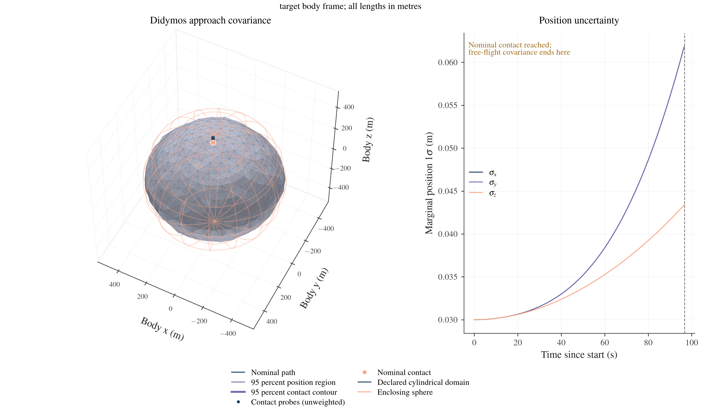
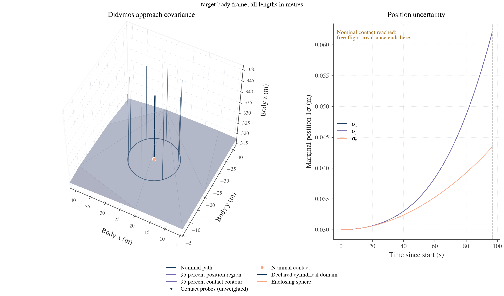
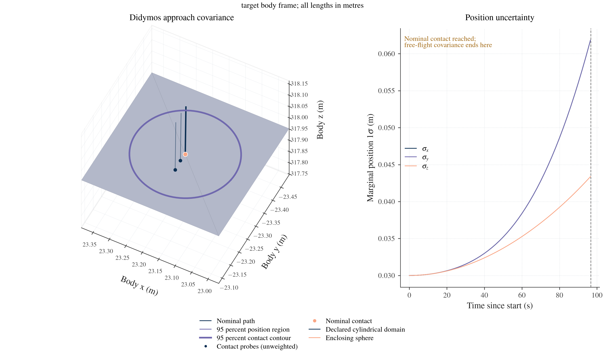
Open the interactive Didymos view · Download animation
Dimorphos
The secondary case uses the archived PDS SBN v004 Dimorphos mesh, decimated to approximately 6,000 faces. It changes the target, shape, field calibration, release and uncertainty assumptions. The plotting code and impact/statistical interfaces stay the same. Both asteroid poses and the particle evolve in the coupled equations, with the two masses retained as uncertain fixed parameters.
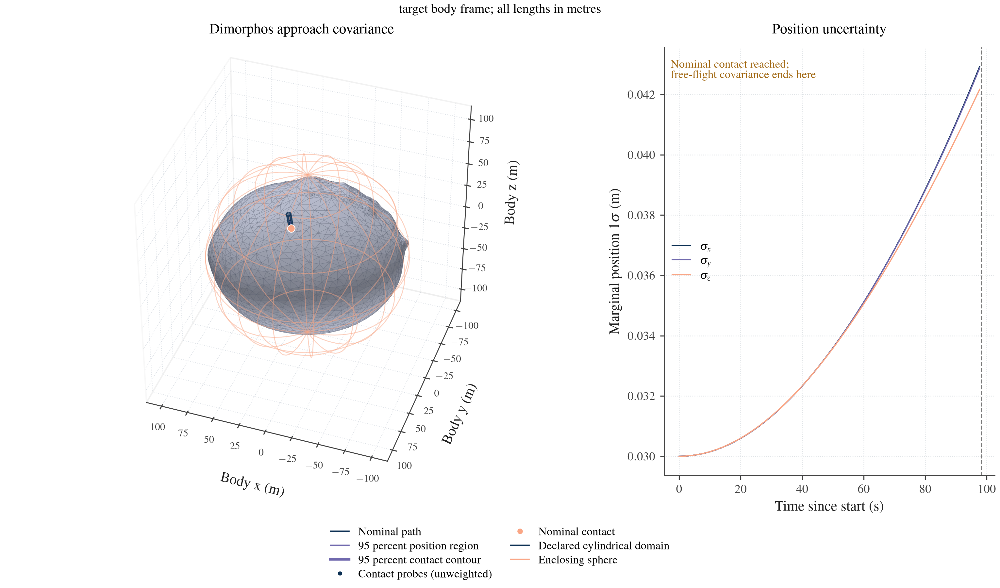
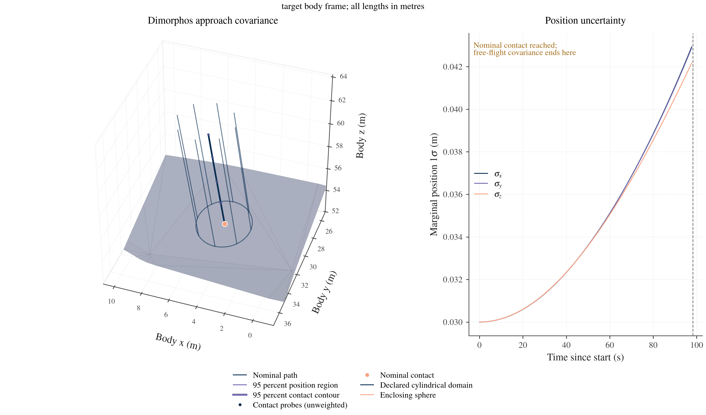
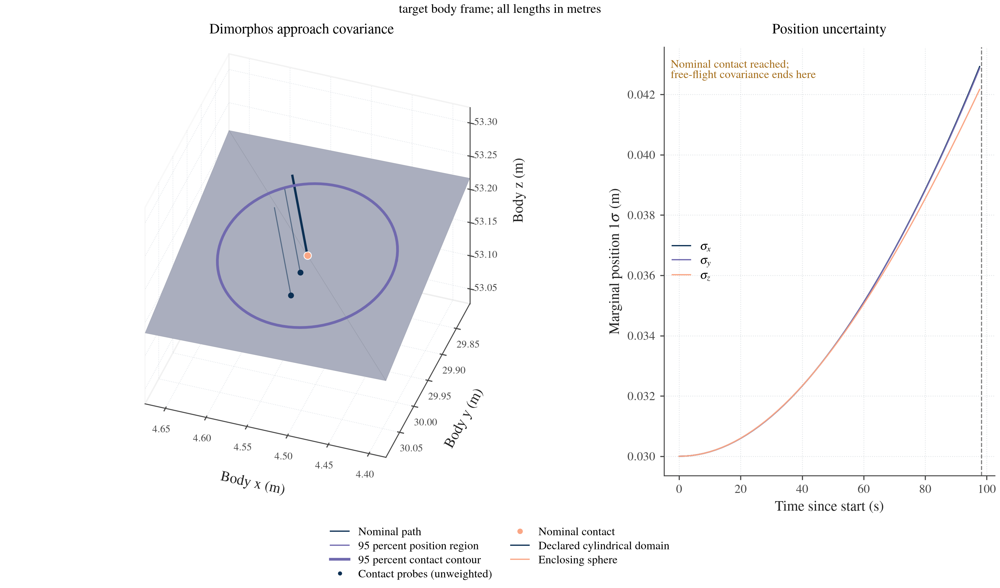
Open the interactive Dimorphos view · Download animation
Wide uncertainty and no-contact probes
The wide cases increase a declared source uncertainty while keeping the nominal model fixed. Selected source-factor perturbations are propagated independently through the same binary and local field. They retain their own impact times and field-domain outcomes. The maximum requested forecast is 300 seconds.
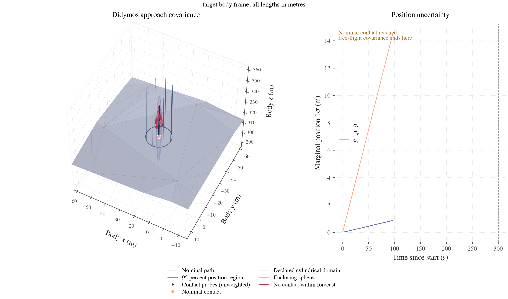
Explore the wide Didymos case · Download wide-case animation
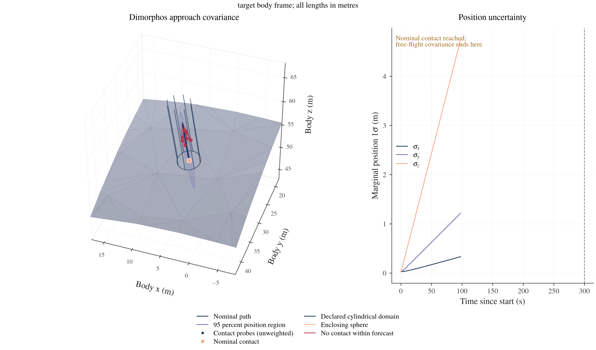
Explore the wide Dimorphos case · Download wide-case animation
Red paths have no detected impact during their stated horizon. A red off-surface mesh is drawn only when their final endpoints support a nondegenerate three-dimensional hull; otherwise the available points and paths remain visible. That hull is a geometric envelope of displayed probes, with no probability weight or coverage claim. Amber paths stopped at the model domain, so their eventual surface outcome is unknown.
The selected perturbations are unweighted two-unit directions in a declared latent source subspace. They do not cover the full Gaussian source distribution. Wide source errors can leave the regime of accurate first-order event covariance or a single-face chart. The wide cases therefore separate the propagated fixed-time position marginal from independently traced contacts and do not promote the small-error tangent ellipse to a universal impact footprint.
Interactive controls and animation
The standalone viewers work offline and have no external JavaScript dependency. Drag to rotate, right-drag to pan and use the wheel to zoom. Choose overview, approach or surface framing; the local views crop displayed geometry to a declared view box without changing the shape, impact point or physics. Toggle the mesh, sphere, cylinder, covariance, probes and impact region separately. The time slider and playback controls use physical elapsed time. The status panel shows the displayed epoch and available uncertainty/outcomes.
After nominal impact the viewer can retain the impact point as a static reference while later probes continue on their own clocks. Its contact-ended status removes the nominal free-flight ellipsoid and component sigmas; no post-contact covariance is propagated. The red endpoint envelope is shown at its declared final forecast time.
The Back button returns to the calling page when browser history is available. Browser back/forward also preserves the manual's saved reading position. The MP4 is a presentation of the same numerical scene; a camera animation does not rerun dynamics or covariance. The handbook uses the static figures above, with links to the interactive and video versions.
Position probability regions
The displayed ellipsoids describe three-dimensional position, rather than a six-dimensional position/velocity ellipsoid drawn in physical space. At fixed time, let P_r be the target-body position covariance. For a full-rank Gaussian marginal, the probability region at level p is
(r-\bar r)^T P_r^{-1}(r-\bar r)\leq\chi^2_{3}(p).
The principal semiaxes are sqrt(chi2.ppf(p, 3) * eigenvalue(P_r)). The plots use an explicitly stored probability, normally 0.95. This differs from plotting each axis at one standard deviation. The SciPy chi-square reference describes the percentile function used by the implementation.
A declared finite singular distribution can have a lower-dimensional supported region. Its rank is recorded and the probability scaling uses that finite rank. An unobservable or unresolved output is a different case: its nominal path can be shown, but the renderer omits the unavailable ellipsoid. Missing information is not replaced by a small or zero uncertainty.
Body-frame uncertainty must include the body's own uncertain position and attitude. Rotating an inertial particle covariance alone would omit those pathways and their cross-correlations. The approach adapter forms the complete body-frame output Jacobian and maps its original latent factor before squaring.
These are free-flight, fixed-time linearized regions up to the nominal event. Realizations that touch earlier do not continue as a modeled impacted or rebounding particle. The separate first-contact result handles uncertain event time; the selected nonlinear probes test their own trajectories and event outcomes. Wide uncertainties, face changes and misses require that distinction.
Impact time and surface uncertainty
Let J_r map the original source errors into the target-body position at the nominal event time, v_r be its body-relative velocity and n the outward unit surface normal. For a smooth inward crossing,
J_t=-\frac{n^T J_r}{n^T v_r},\qquad
J_{\mathrm{contact}}=J_r+v_rJ_t.
The same operations act on the mapped source factor. This preserves initial-state, mass, gravity, release and consider correlations without reconstructing a dense source covariance. Normal speed near zero makes the event derivative ill-conditioned; grazing results remain explicit rather than receiving a clipped denominator.
The impact covariance is projected onto a fixed nominal two-axis tangent chart. A two-dimensional probability contour uses chi2.ppf(p, 2), not the three-dimensional position scaling. With tangent covariance P_T, its planar area is
A_p=\pi\chi^2_2(p)\sqrt{\det P_T}.
That area is a local first-order tangent-plane quantity. It is not automatically a geodesic area or a contour crossing arbitrary mesh faces. The surface view distinguishes an accepted surface contour from an unprojected tangent contour. A contour leaving the accepted face, a mesh edge or vertex, grazing, unavailable source support or a field-domain exit requires an explicit unavailable/limited result. Discrete hit points can still be displayed without promoting them to a smooth Gaussian footprint.
The impact driver uses the shared augmented RK4 step for state, STM and force-parameter sensitivities. It advances inward with a gap/rate limiter and resolves the boundary from the valid side using declared distance and estimated-time tolerances. Field-domain checks remain active. It does not silently continue the force into material to create a root. Its chronological, step-resolved event policy is recorded; step refinement is required and an arbitrary unsampled oscillatory path is not certified to have no earlier root.
Nominal field, uncertain gravity and geometry
The two example mean fields are calibrated to a BASCO-owned polyhedral reference in a selected local domain. The uniform density of that nominal calibration reference does not constrain the uncertain local coefficients to a uniform-density family. Free coefficient errors and their declared correlations with masses and release errors remain in the joint input factor.
Shape geometry, its nominal COM/principal-axis alignment and the patch pose are fixed input geometry in these examples. Uncertain shape, COM-to-shape offsets or patch alignment require additional explicit source mappings; body motion and its pose uncertainty are already included in the approach map.
A supporting face certifies geometry, not field accuracy. The example checks the local field against held-out reference values across the cylinder, including points close to its lower boundary, plus a separate acceleration check on the actual surface boundary. The spatial-gradient finite differences remain strictly in vacuum; they do not differentiate across material. Finite fitting/holdout grids do not certify the approximation at every unsampled point. Derivative and analytic/AD tests are separate checks. Those comparisons validate the stated nominal approximation and represented uncertainty pathways. They do not reconstruct missing interior structure or prove that the reference density is the real asteroid density.
The demonstrated source explicitly shares mass response with the local field and adds free local particle-field modes. It does not infer one unique common interior from independently selected binary moments and local coefficients. A physically shared interior parameterization requires its own Jacobians into both sets of force coordinates; a completed common-source representation map can provide such a declared relationship instead of independent uncertainty budgets.
The source factor represents a declared analysis scenario. An actual Hera covariance can feed the existing representation mapper when its completion and extra-mode assumptions are supplied. An exterior-to-local map does not uniquely determine arbitrary surface heterogeneity. The present impact examples use the direct local route and do not include an automatic sphere-boundary model switch.
Reuse the components
The application script separates model/shape and source setup from propagation, numeric export and rendering. It exposes the target as an analysis choice. To create a new case, supply your own aligned mesh, physical binary model, local field, complete source distribution and initial/release conditions; keep the same approach and scene components.
The following is a composition fragment. model, parameters, field, source, coefficient_uncertainty, initial and mesh have already been constructed with compatible units, frames and source identities:
from basco.covariance import RK4
from basco.covariance.trajectory import RF3BPDynamics, TriangleSurface, propagate_to_impact
from basco.covariance.plots.trajectory_scene import TrajectoryScene, trajectory_figure, write_trajectory_html
surface = TriangleSurface(mesh)
dynamics = RF3BPDynamics(model, parameters, local_fields={"A": field})
trajectory = propagate_to_impact(
dynamics, initial, initial_covariance,
local_uncertainties={"A": coefficient_uncertainty},
target="A", surface=surface, duration=300, cadence=1,
integrator=RK4(1),
)
scene = TrajectoryScene(
mesh, trajectory.epochs, trajectory.positions_m, trajectory.covariance_m2,
patch=field.basis.patch,
enclosing_radius_m=model.system.primary.distribution.brillouin_radius,
statuses=trajectory.position_history.status,
title="My target approach",
)
figure = trajectory_figure(scene, view="landing")
write_trajectory_html(scene, "interactive.html")
The complete runner also attaches event-corrected impact geometry and source probes to the scene. TrajectoryScene contains numerical visualization data, not a dynamics evaluator or original covariance factor. export_trajectory_scene and read_trajectory_scene preserve that scene for redrawing. animate_trajectory writes MP4 or GIF; MP4 uses the explicitly available FFmpeg encoder. Plot generation is optional and does not repeat propagation.
| Component | Responsibility |
|---|---|
| RF3BPDynamics | Coupled binary and massless particle force/derivative evaluation, with explicitly selected per-body local fields |
| propagate_to_impact | The trajectory with its partials with respect to the uncertain inputs, the body-frame history and the first impact |
| perturbed_trajectory | A selected source perturbation with its own value-only trajectory and event |
| PlaneSurface, SphereSurface, TriangleSurface | Fixed geometry, distance/normal, first intersection and differentiability policy |
| impact_covariance | Event-time correction, original-factor covariance and tangent report |
| TrajectoryScene | Renderer-independent mesh, path, covariance, domains, contacts and explicit probe outcomes |
| trajectory_figure | Static overview, approach or surface view through the shared scientific theme |
| animate_trajectory | Time-dependent MP4/GIF presentation of one saved scene |
| write_trajectory_html | Self-contained interactive browser view |
The acceptance record owns the quantitative results and tested limits. Return to particle covariance, local-field source mapping or example scripts.
Long approaches and flybys
Surface uncertainty close-ups
These close-ups show the covariance at the surface scale. The purple ellipse is the current position marginal projected along the local normal into the actual impact facet. It evolves throughout the saved approach. The dashed event-corrected impact prediction stays fixed under the same original information.
Open the surface close-up gallery for 3D ellipsoids above both surfaces, these projected distributions and a target-only Dimorphos encounter. The cameras use physical metre-scale view boxes and omit the companion.
Full-arc trajectories
These examples follow a massless particle for several hours around both members of the Didymos binary. The main animations use the rotating frame of the target body: its centre and surface stay fixed while the particle and companion move relative to it. Position uncertainty changes in size and direction. The same restricted full three-body dynamics, original-source covariance maps and saved-scene renderers used in the short surface approaches perform the calculation.
Choose a target-fixed case. The original inertial comparisons remain available below.
| Case | Fixed target | Interactive view |
|---|---|---|
| Binary flyby | Didymos | Didymos-fixed trajectory |
| Secondary encounter | Dimorphos | Dimorphos-fixed trajectory |
| Inward approach to the exterior-model boundary | Didymos | Didymos-fixed approach |
The cases start approximately 2–4 km from the binary barycentre. They are conditional gravity-only covariance examples, with no simulated measurements, estimation or filter update. Their initial states are declared demonstration inputs. Solar radiation pressure, solar tides and maneuvers are omitted. Published Milani and Juventas operations motivate the distance and time scales; these examples do not reproduce their flight trajectories or a solar terminator orbit.
The 3D regions are linear covariance ellipsoids. Selected red paths reach the forecast horizon without impact; they are unweighted direction probes, not a miss probability. The closer secondary encounter shows appreciable finite-amplitude nonlinearity, quantified under linearization checks.
User runner · Evidence and saved-data rendering · Scope and primary references · Trajectory acceptance · Target-fixed view checks
Cases and results
The binary uses order-6 extended-body Hou gravity and coupled translation/rotation. The particle uses both exterior Hou fields, with their enclosing-sphere checks active. Uncertain source coordinates include the binary initial state, both masses, moments through degree 4 and the particle's inertial initial state. Mutual gravity order, uncertain parameter degree, initial trajectory and source factor are separate configuration choices.
| Quantity | Binary flyby | Secondary encounter | Inward approach |
|---|---|---|---|
| Initial barycentric distance | 3,753.66 m | 2,209.07 m | 2,000 m |
| Requested duration | 6 h | 6 h | 4 h |
| Reported outcome | No impact within 6 h | No impact within 6 h | Exterior field domain ends |
| Final supported epoch | 21,600 s | 21,600 s | 7,366.85 s |
| Minimum sampled Didymos-centre distance | 1,166.30 m | 1,151.84 m | 439.36 m, enclosing boundary |
| Minimum sampled Dimorphos-centre distance | 2,246.19 m | 200.23 m | 1,254.85 m |
| Inertial velocity-direction change | 30.33° | 96.38° | 1.02° |
| Initial inertial principal position standard deviations | 5, 5, 5 m | 5, 5, 5 m | 5, 5, 5 m |
| Final inertial principal position standard deviations | 8.30, 20.81, 45.66 m | 10.18, 27.36, 79.71 m | 7.35, 7.38, 16.47 m |
The principal standard deviations in this table are the original inertial results. The target-fixed plots use the distinct full target-relative covariance. Minimum distances are sampled at saved trajectory epochs, not continuously optimized periapsis values. Velocity-direction change compares the initial and final inertial velocity vectors. Rotation of a body-fixed display is not counted as physical trajectory bending. no_impact applies only to a trajectory reaching its requested horizon under the supported model.
Binary flyby: Didymos-fixed frame
Didymos is the reference body in this example. Its centre and surface remain fixed while Dimorphos and the particle move in Didymos' rotating body axes.
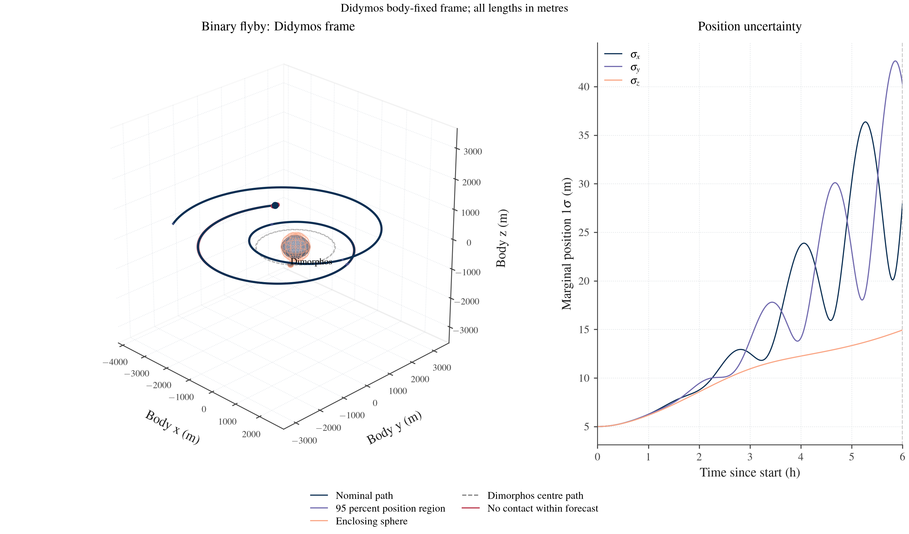
Explore the Didymos-fixed trajectory
Secondary encounter: Dimorphos-fixed frame
Dimorphos is the reference body for this closer encounter. Its surface stays fixed; Didymos and the particle move relative to Dimorphos' centre and rotating axes. The ellipsoids use the existing target-relative covariance, including the uncertainty of the reference body.
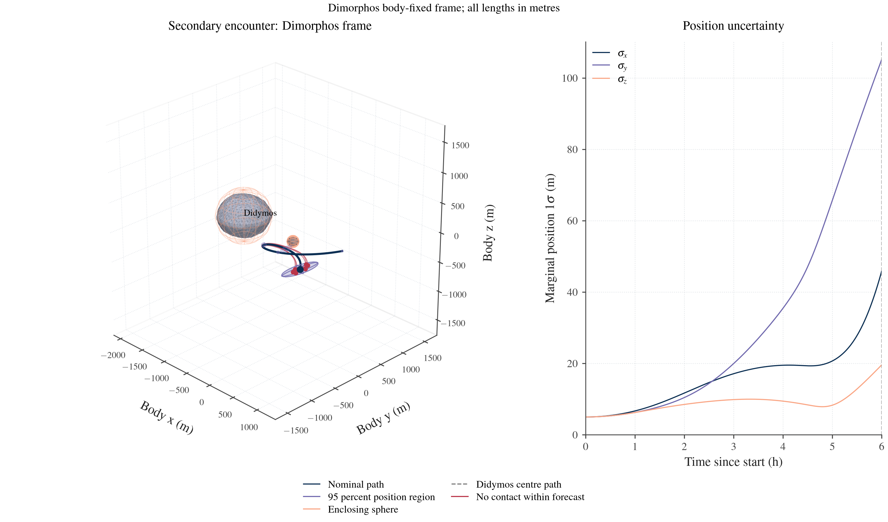
Explore the Dimorphos-fixed trajectory
Inward approach: Didymos-fixed frame
The inward approach uses Didymos' frame. It stops at approximately 7,366.85 s, where the exterior Hou field reaches its enclosing-sphere guard. The approximately 439.358 m sphere is a model-validity boundary, not the asteroid surface. The final ellipsoid is a fixed-time covariance at the last supported epoch; this case supplies no impact footprint or complete-horizon miss.
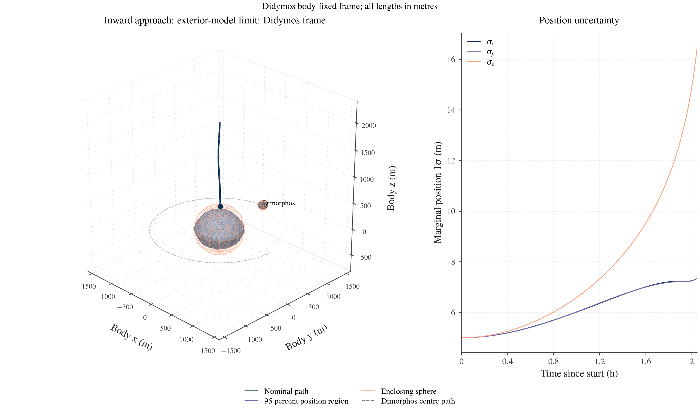
Explore the Didymos-fixed inward approach
Inertial comparison and uncertainty close-ups
The following original views are retained for comparison. They use barycentric inertial axes; the close uncertainty views translate the display origin along the deterministic nominal particle path. They are separate from the default fixed-target animations above.
Open the inertial trajectory and uncertainty views
Binary flyby: inertial comparison


Explore the uncertainty evolution
Secondary encounter: inertial comparison
The barycentric inertial comparison separates gravitational trajectory deflection from the target frame's rotation. Both moving bodies use the same stored binary history as the nominal trajectory.


Explore the uncertainty evolution
Inward approach: inertial comparison
The third case starts 2 km from the barycentre and travels inward. The exterior field reaches the Didymos enclosing-sphere boundary at approximately 7,366.85 s, before the requested four-hour horizon. Propagation stops with domain_exit. The Didymos enclosing radius is approximately 439.358 m; this is a model-domain boundary, not the asteroid surface.
The last ellipsoid is the fixed-time covariance at the supported arc endpoint, not uncertainty in the model-boundary event. This result supplies no surface impact, impact footprint or complete-horizon miss. The accepted short surface examples use separately checked local fields. A transition from this long exterior approach to a local field requires compatible nominal forces, complete source maps and a validated transition policy; none is inferred from a plotted sphere crossing.

Explore the supported trajectory

Position uncertainty and the display frame
Target-relative position and covariance
Let R_T map the target body's coordinates into barycentric inertial coordinates and let c_T be its centre of mass. The default scene uses
x_T(t)=R_T(t)^T\,[r_{\mathrm{SC}}(t)-c_T(t)].
The target mesh is held fixed at the body-frame origin. The companion's centre and orientation are transformed into the same target frame. The camera stays fixed unless the viewer changes it. A curved path in this rotating view contains both physical trajectory deflection and motion of the coordinate frame; compare the inertial view when separating those effects.
The displayed covariance is trajectory.position_history, already calculated by the maintained approach engine. It includes uncertainty in particle position, the target's centre and attitude, the mass-dependent barycentric location, and their source cross covariance. It is not obtained by only rotating the inertial particle covariance. For original source q, the relevant map is the complete derivative of x_T(q,t), mapped through the retained source factor before squaring. Each perturbed probe uses its own propagated binary attitude and masses in this same body-coordinate definition.
\begin{aligned}
\delta x_T &= R_T^T(\delta r_{\mathrm{SC}}-\delta c_T)
+ \delta R_T^T(r_{\mathrm{SC}}-c_T),\\
J_T &= \frac{\partial x_T}{\partial q},\qquad
P_T=(J_T F)(J_T F)^T.
\end{aligned}
Here F is the retained original source factor for the displayed case. Composing the complete map before squaring retains the cross covariance between these contributions.
The fixed reference mesh depicts the nominal target surface. It does not add uncertain shape parameters or post-contact dynamics. The 3D regions remain fixed-time, first-order position marginals; a surface-contact contour requires the separate event-time correction.
Inertial comparison views
The inertial trajectory view uses the binary barycentric inertial frame. Its close uncertainty view subtracts the deterministic nominal particle position from every displayed point at each epoch. This changes the display origin without introducing an uncertain reference body or rotating the frame. If the displayed coordinate is
r_{\mathrm{display}}(t)=r(t)-\bar r_{\mathrm{SC}}(t),
\qquad P_{\mathrm{display}}(t)=P_r(t),
the nominal particle remains at the origin while its position distribution can expand and rotate. Both asteroid centres are translated by the same nominal curve. They are nominal contextual meshes, not independent uncertain realizations. Every ellipsoid axis remains in physical metres; no uncertainty magnification is applied. The covariance panel reports component standard deviations, and the 3D region uses the stored marginal probability, normally 95%, with chi-square scaling for its supported dimension.
Use the time slider or select 250× playback for an hour-long coast; 1× advances in physical real time and can appear static between the saved 60 s output epochs. The MP4s compress each complete supported arc into 8 s. Use Play to follow physical elapsed time. The initial uncertainty camera is chosen to show the whole history's uncertainty extent. Overview restores system context, and the Moving bodies and paths control toggles the epoch-aligned asteroid overlays. Camera controls and layer visibility change presentation only. Back returns to this manual when browser history is available.
Use trajectory.inertial_history(quantity="position") for the inertial report; quantity="velocity" and quantity="state" select inertial velocity and the complete six-state covariance, including position/velocity cross terms. The target-relative marginal used in the default animations is trajectory.position_history. No user-side STM or sensitivity algebra is required.
The propagated fixed-time covariance has the form P_r(t) = L_r(t) L_r(t)^T, where L_r(t) maps the complete original latent source into inertial particle position. State-transition and force-parameter sensitivities retain mass, gravity, binary-state and particle cross terms. Growing or rotating ellipsoids therefore do not require new observations.
A future first-contact covariance is a different output. With the same fixed information and a complete state/parameter epoch mapping, predicting the same future event from an intermediate epoch should preserve its event-corrected covariance. The position marginal can change throughout that interval. An impact ellipse should not shrink merely because the playback clock approaches impact. Impact-time and surface covariance explains the event correction. An observation-prefix history changes the information and is covered separately in covariance histories.
Compare mass and gravity assumptions
The following comparison figures retain the original inertial position report. One nominal variational solution is reused for three declared source factors: fixed masses/gravity, the baseline mass/gravity uncertainties, and three times those errors. The row scaling acts on the full original factor, including its shared particle columns. It preserves the initial particle marginal and scales the associated cross covariance consistently. It does not create or remove observations, refit a solution or add independent variance budgets to correlated effects.


Changing nominal mass, gravity order or trajectory requires a new compatible variational solution. Changing only an uncertainty factor can use with_initial_covariance. The user runner's make_initial_covariance(..., gravity_scale=...) and run_problem(..., reuse=...) illustrate that separation.
Linearization checks
The ellipsoids show first-order covariance under the declared source distribution. They are not independently verified nonlinear probability regions. Each six-hour case also propagates six selected, unweighted trajectories: positive and negative twice-factor directions for the particle velocity-x column, velocity-y column and a shared primary-mass column. The last column also changes particle velocity through the declared correlation. These are complete latent directions, not independent changes to one parameter.
These quantitative diagnostics are the original barycentric inertial checks; they are not relabelled as body-frame coverage tests. At the fixed final epoch, the check compares the predicted half-displacement l = J_r dq with the symmetric response s = (r_plus - r_minus)/2. It reports norm(s-l) / max(norm(s), norm(l)) and the nonlinear midpoint displacement from the nominal trajectory.
| Secondary-encounter source direction | Symmetric response discrepancy | Midpoint displacement |
|---|---|---|
| Particle velocity x | 1.45% | 5.79 m |
| Particle velocity y | 3.03% | 13.34 m |
| Shared primary mass | 9.05% | 14.50 m |
The binary-flyby maximum over the same three direction pairs is 0.0114% discrepancy and 0.551 m midpoint displacement. The closer secondary encounter is more nonlinear at the selected amplitudes. A tighter source distribution or an explicit nonlinear uncertainty analysis is needed before interpreting its linear region as quantitative coverage. These finite-amplitude checks are separate from opt-in small-step FD derivative checks and supply neither a miss probability nor Gaussian coverage verification. All selected flyby and encounter probes reach the six-hour horizon without impact under the supported model.
Both Hou derivative backends and a 10 s / 5 s integration-step refinement are compared in the scientific acceptance record. Backend and integration agreement establish numerical consistency; they do not remove the finite-amplitude linearization limits above.
Run or modify a case
Edit SCENARIO, BACKEND and FRAME at the top of the example and run it; every run writes a new folder under results/examples/long_trajectories/:
python examples/covariance/trajectory/long_trajectories.py
The example saves the trajectory with its covariance and an interactive HTML scene, and prints a summary. It calls the worked case in basco.covariance.trajectory.coast_case: a CoastScenario holds the particle's initial inertial position and velocity, the target body, the duration, the integration step and the output cadence, and make_problem, run_problem, inertial_history, make_scene and make_uncertainty_scene each do one thing and can be reused separately. make_scene(problem, trajectory) draws in the target body's frame; frame="inertial" draws the inertial comparison. make_uncertainty_scene follows the nominal particle in inertial axes.
The core propagation can be composed with an existing model, resolved parameters, original source and target mesh:
from basco.covariance import RK4
from basco.covariance.trajectory import RF3BPDynamics, ParticleState
from basco.covariance.trajectory.impact_trajectory import propagate_to_impact
# model, parameters, source and surface are configured separately.
dynamics = RF3BPDynamics(model, parameters, backend="ad")
initial = ParticleState([-3000, -2200, 500], [0.3, 0.08, -0.01])
trajectory = propagate_to_impact(
dynamics, initial, initial_covariance,
local_uncertainties={}, target="A", surface=surface,
duration=21600, cadence=60, integrator=RK4(10),
)
target_position = trajectory.position_history
inertial_position = trajectory.inertial_history()
six_state = trajectory.inertial_history(quantity="state")
An empty local_uncertainties map selects no local uncertainty maps; it does not disable the exterior field guards. The dynamics configuration owns force-model selection. For both backends, source layout, units, epochs and field identities must match. The complete runnable example supplies the source and surface rather than assuming them from global state.
The evidence script separates numeric runs from presentation and adds the source-factor comparisons and optional independent probes:
python tools/evidence/mission_scale_trajectories.py --case all --output "$PWD/results/long-coasts" --figures "$PWD/results/long-coast-figures" --animation
# Render the same completed numerical data without another propagation.
python tools/evidence/mission_scale_trajectories.py --case all --output "$PWD/results/long-coasts" --figures "$PWD/results/long-coast-rerender" --animation --presentation-only
The target-fixed presentation reads the completed approach exports and uses their existing body-relative position/covariance arrays; it does not propagate another trajectory. See target_fixed_trajectories.py for the saved-data frame and probe checks.
Scientific exports retain original source factors, GUBAS-state and physical histories and provenance separately from the public visualization payload. Saved scenes hold only derived display data. They can be loaded by read_trajectory_scene and sent to trajectory_figure, animate_trajectory or write_trajectory_html without constructing a force evaluator. The website mirrors figures, videos and self-contained viewers; it does not publish the original factors or numerical run archive.
Scope and next steps
The accepted domain of a gravity representation is part of the model. A larger cylindrical fit must independently pass its field and gradient checks across the full proposed vacuum volume and its relevant surface boundary. Increasing the cylinder height or basis count does not establish accuracy. The available PointMassPlusLocalField composes an exact mass term with a separately uncertain local residual, but kernel validation alone does not establish a long-approach impact field. Its mass and residual pathways must share the complete original source map.
A long coast followed by an impact still needs a validated common trajectory/field continuation, its complete covariance map and supported first impact. Solar radiation pressure, solar gravity, maneuvers and appropriate source uncertainties are further physical components for mission-specific analyses. These remain explicit scope decisions; the current cases demonstrate gravitational curvature and covariance variational solution with the implemented model.
The mission-scale motivation and primary links are recorded in the design note. ESA's Milani description describes connected hyperbolic arcs on kilometre scales; ESA's Juventas description explains operations influenced by solar radiation pressure. These ESA pages were checked on 2026-10-28. Their mission trajectories require physics and operational inputs beyond this gravity-only demonstration.
Surface close-ups
These views zoom in on the particle's position ellipsoid and nearby target surface. The camera uses a fixed, metre-scale view box in the target body's coordinates. The companion, Brillouin sphere and long trajectory are omitted so that the ellipsoid and surface contour remain visible.
Choose a view:
| View | What changes during playback |
|---|---|
| Didymos surface ellipsoid | The 3D position ellipsoid approaches the actual surface near impact |
| Dimorphos surface ellipsoid | The same local view for the secondary |
| Projected surface uncertainty | The current position's two-dimensional marginal changes across the approach |
| Dimorphos close encounter | The target and a large position ellipsoid during the closest part of the longer encounter |
All dimensions are physical metres. The saved trajectories and covariance remain the inputs; the close-up changes the camera and selected time interval. The impact cases are the direct local-field examples. The longer encounter is the six-hour secondary case. No simulated measurements or new estimation information are added.
Didymos surface
The camera faces the resolved impact facet and shows the final part of the approach. The ellipsoid remains at its actual target-relative position and scale. The mesh below it is the actual shape model, cropped only for display. Near nominal impact the fixed-time free-flight ellipsoid can straddle the surface because impact times differ; the dashed contour is the separate event-corrected impact-location forecast.

Dimorphos surface
This view uses Dimorphos' own target frame, surface facet and covariance. The camera is fixed and the body surface stays still during playback.

Projected surface uncertainty
The purple ellipse shows the current position uncertainty projected along the local surface normal into the fixed impact-facet chart. It evolves as the position covariance propagates. The dashed contour is the separate event-corrected impact prediction from the saved covariance analysis; it stays fixed because the information has not changed.
Didymos

Dimorphos

Let p be the nominal impact point and let the columns of E be the two fixed orthonormal tangent directions of its smooth mesh facet. For current target-frame position r(t) and its complete marginal covariance P_r(t),
u(t)=E^T[r(t)-p],\qquad P_u(t)=E^TP_r(t)E.
The projected coordinates define a two-dimensional marginal. Its 95% contour uses the chi-square quantile for its supported rank, normally two. The three-dimensional ellipsoid uses rank three. A surface projection therefore has its own probability contour; its dimensions are derived from the projected covariance.
The complete projected contour must remain within the same actual smooth mesh facet. The geometry check bounds the barycentric coordinates over the whole confidence ellipse. Unsupported source epochs or a contour leaving that facet are marked unavailable. The renderer does not clip a probability contour to make it appear supported.
The projection is a geometric view of the position distribution at the displayed time. Predicting first impact additionally accounts for uncertainty in event time and the velocity along the surface. Impact time and surface covariance explains that correction. Advancing the display clock with fixed original information does not by itself improve a prediction for the same future impact.
Dimorphos close encounter
The longer example keeps only Dimorphos and the particle's target-relative ellipsoid. The camera covers the saved time window around the closest sampled passage. This exposes the covariance's size and direction without the companion or the full multi-kilometre trajectory setting the frame scale.

This is a finite-horizon, gravity-only encounter. It supplies no surface impact in the accepted arc. Its ellipsoid is the complete target-relative fixed-time covariance; the earlier finite-amplitude checks describe the linear approximation's measured limits.
Camera, time and reuse
CloseupCamera declares a fixed centre and cubic span in target-frame metres, plus view angles in degrees. The body mesh and the uncertainty keep the same physical coordinates. Close-up frames use a selected continuous interval of supported saved epochs. The ellipsoid, projection and surface are not enlarged independently.
The animations use linear display interpolation of the mean and covariance between adjacent saved epochs. A convex combination preserves positive semidefiniteness. The source arrays are unchanged, and interpolation does not cross an unsupported epoch or the end of free-flight covariance. This produces smooth playback without rerunning the propagation or adding information.
import numpy as np
from basco.covariance.plots.trajectory_scene import read_trajectory_scene
from basco.covariance.plots.closeups import (
CloseupCamera, animate_closeup,
surface_projection_history, animate_surface_projection,
)
scene = read_trajectory_scene("results/my-landing/scene")
camera = CloseupCamera(center_m=scene.impact_point_m, span_m=1.0)
supported = np.flatnonzero(scene.ellipsoid_available)
start, end = scene.epochs[supported[-2:]]
animate_closeup(scene, "surface-closeup.mp4", camera=camera,
time_window=(start, end))
projection = surface_projection_history(scene)
animate_surface_projection(scene, "surface-projection.mp4", projection)
Choose camera bounds and time windows appropriate to the actual position and covariance extent. The fragment uses an existing target-frame scene with a resolved impact point and tangent chart. The saved-data producer chooses those bounds from the accepted examples and writes the five figure/video pairs. It performs no force evaluation or new covariance solve.
python tools/evidence/landing_closeups.py \
--figures "$PWD/results/closeup-figures" \
--output "$PWD/results/closeup-report" --animation
The reusable functions are in basco.covariance.plots.closeups. Static figures use closeup_figure and surface_projection_figure; the projection arrays are provided by surface_projection_history. Scientific and media acceptance owns the exact source intervals, camera spans, covariance comparisons and checked media.
Equations and conventions
BASCO linearizes predicted measurements about a nominal binary trajectory and combines their derivatives with measurement noise and prior information. The resulting covariance describes the local uncertainty in the selected masses, gravity parameters and initial-state coordinates. Numerical rank diagnostics identify parameter combinations that are not constrained under those assumptions.
A covariance forecast is local to the supplied model, state, observation geometry and statistical assumptions. It does not fit measured data, establish the accuracy of the nominal model or quantify bias from gravity truncation.
Computation stages
| Stage | Input | Output | Main component |
|---|---|---|---|
| Physical model | Bodies, moments, relative state and mutual gravity order | Nominal full two-body dynamics | BinaryModel |
| Estimated parameters | Selected masses, inertia/field coordinates and initial-state treatment | Named independent coordinates and raw-moment Jacobian | EstimatedParameters |
| Variational propagation | Model, coordinates, integration grid and derivative provider | States, state transition and parameter sensitivities | VariationalSolution |
| Observation assembly | Propagation, observation types, direct derivatives and nuisance | Physical unweighted design rows | DesignMatrix |
| Statistical solve | Rows, noise, priors, scales and numerical support policy | Covariance, nullspace and diagnostics | CovarianceResult |
| Reporting | Result plus physical maps | Mass/gravity tables, plots and verified exports | make_results_tables |
The same components are used in the first example and the Hera reproduction. Physical models, measurement statistics, numerical solving and plotting are configured independently.
Variational equations
Let x denote the GUBAS state and p the independent physical parameters. The dynamics and local derivatives give:
\dot x = F(x,p), \qquad A = \frac{\partial F}{\partial x},
\qquad B = \frac{\partial F}{\partial p}.
The propagated state transition and sensitivities satisfy:
\dot\Phi=A\Phi,\quad \Phi(0)=I, \qquad \dot\Psi=A\Psi+B,\quad \Psi(0)=0.
BASCO integrates the sensitivities with respect to the inertia integrals and maps them into the estimated parameters. A mass direction changes all retained dimensional moments associated with that body's mass. Treating mass as only a monopole derivative would omit part of the implemented physical chain.
For an observation prediction h, the design rows include both propagated and direct terms:
H_p = h_x\Psi + h_p, \qquad H_{x_0}=h_x\Phi L_0.
L_0 lifts an 18-dimensional physical initial-state error into the 30-component GUBAS state. Local observation nuisance supplies additional columns. The direct h_p term is essential for Didymos position relative to the system barycenter.
Units and attitude coordinates
The public physical boundary uses SI and radians. The GUBAS state uses kilometre-based translation and matrix attitude entries. BASCO performs the conversions and provides physical tangent maps; users should not independently convert public lengths to kilometres.
Two attitude matrices contain 18 scalar entries, but only six physical attitude-error directions. Covariance uses local SO(3) attitude errors instead of treating all matrix entries as independent rotations. See bodies and states.
Statistical interpretation
Whitening transforms the observation residual/design using its declared covariance. Characteristic column scales make differently dimensioned estimated parameters numerically comparable. The numerical solve operates on whitened, scaled rows and maps supported uncertainty back to physical units.
For full supported rank, the familiar expression is:
P=(H^T R^{-1}H + J_{\mathrm{prior}}^T R_{\mathrm{prior}}^{-1}
J_{\mathrm{prior}})^{-1}.
The implementation uses square-root QR/SVD methods. The result records the rank threshold, eliminated nuisance parameters and physical scaling used in the calculation.
A scale is not a prior. A prior adds knowledge; a numerical threshold selects what the finite-precision calculation supports. A fixed parameter is conditioned on its nominal, not estimated perfectly by the observations.
Hou gravity and derivative methods
Hou mutual gravity at total orders 2, 4 and 6 is the main scientific path. Default variational solution uses automatic differentiation of a separate JAX-compatible Hou value implementation. AnalyticVariationalEquations preserves manual analytic derivatives. Both feed the same physical-coordinate, observation and statistical machinery.
Finite differences provide an explicit, optional check. They do not run inside normal covariance analysis. Neither AD nor analytic agreement alone proves all physics, frames and parameter choices correct; independent equations, finite differences, conservation/refinement and reference reproduction serve different purposes.
Cartesian multipole gravity is deprecated compatibility. Mascons remain available for reference and extension use. These retained models do not change the Hou-centered scope of the toolkit.
Estimation interfaces
BASCO includes frozen-linear multi-arc corrections and a generic callback-based nonlinear batch/MAP driver. Binary observation ingestion, complete measured-attitude residuals, seeded mission-style recovery and sequential filters remain unfinished adapters/features. Multi-arc and estimation makes that boundary explicit.
For implementation details, begin with the mathematical contracts, extension contracts and current validation evidence.
Glossary and notation
Use this page when a matrix label or physical quantity is unclear. Array shape alone does not identify its frame, units or uncertainty coordinates. The API reference supplies exact signatures; concepts connects the components.
Names and frames
| Term | Meaning in BASCO |
|---|---|
| BASCO | Binary Asteroid Simulation, Covariance, and Observability |
| Primary / A | First body; Didymos in the Hera benchmark |
| Secondary / B | Second body; Dimorphos in the Hera benchmark |
| N | Inertial resolving frame |
| A | Primary body-fixed principal-axis frame |
| B | Secondary body-fixed principal-axis frame |
A_to_N, C_NA |
Rotation multiplying A components to obtain N components |
B_to_A, C_AB |
Rotation multiplying B components to obtain A components |
C_NB |
Secondary-to-inertial rotation, C_NA @ C_AB |
| DCM | Direction cosine matrix, a proper 3 × 3 rotation |
| Principal-axis representation | Centered moments with first moments and products of inertia structurally zero; current maintained rigid-body domain |
| Left attitude perturbation | C_new = Exp(skew(delta_theta)) @ C; the rotation vector lives in the rotation's destination frame |
| SO(3) | Manifold of proper 3D rotations; attitude covariance uses local three-component tangents |
BinaryState stores inertial position/velocity and both inertial spin rates resolved in A. Its velocity is not the time derivative of position components in the rotating A frame. Changing a resolving frame requires the appropriate rotation/kinematic transformation.
Physical symbols and units
| Symbol / field | Meaning | Units |
|---|---|---|
G, G_SI |
Fixed gravitational constant of the model | m³ kg⁻¹ s⁻² |
M_A, M_B |
Primary and secondary mass | kg |
GM / gravitational parameter |
G × M; report derived with fixed G |
m³ s⁻² |
system.mass_ratio |
M_B / M_A |
Dimensionless |
r_A, position |
Secondary-minus-primary inertial relative position resolved in A | m |
v_A, velocity |
Inertial relative velocity resolved in A | m s⁻¹ |
rho_N |
Inertial relative position, C_NA @ r_A |
m |
omega_A_A |
Primary inertial spin resolved in A | rad s⁻¹ |
omega_B_A |
Secondary inertial spin resolved in A | rad s⁻¹ |
theta_A_N |
Left primary attitude error resolved in N | rad |
theta_B_A |
Left relative-attitude error resolved in A | rad |
R0, barycenter.offset.* |
Constant barycenter position nuisance at the reference epoch | m |
V0, barycenter.rate.* |
Barycenter velocity nuisance | m s⁻¹ |
t, epoch |
Elapsed time on the analysis grid | s |
dt |
Fixed RK4 integration step | s |
| Cadence | Time between epochs on the observation base grid | s |
R, reference radius |
Fixed normalization radius of a body | m |
| Bounding radius | Declared exterior-domain geometry bound; distinct from normalization radius | m |
Public constructors accept the documented SI scalars/arrays or compatible Astropy quantities. Do not feed degrees into a bare angular sigma expecting an implicit degree conversion: use np.deg2rad(...) or an explicit u.deg quantity. Unit strings such as m2, m3 and kg m2 in saved layouts mean powers/products, not new parameter types.
The GUBAS state and state deviation
The retained propagator stores two DCMs explicitly. Its 30 storage values are not 30 independent physical state errors.
| Native slice | Stored quantity | Stored units |
|---|---|---|
0:3 |
Relative position in A | km |
3:6 |
Inertial relative velocity in A | km s⁻¹ |
6:9 |
Primary spin in A | rad s⁻¹ |
9:12 |
Secondary spin in A | rad s⁻¹ |
12:21 |
C_NA, flattened row-major |
Dimensionless |
21:30 |
C_AB, flattened row-major |
Dimensionless |
The independent physical tangent has 18 entries, in this order:
delta r_A [3] m
delta v_A [3] m/s
delta omega_A_A [3] rad/s
delta omega_B_A [3] rad/s
delta theta_A_N [3] rad
delta theta_B_A [3] rad
state_deviation_jacobian maps state deviation errors to GUBAS state increments. state_deviation_projection is the left inverse; it is not simply the transpose of the lift. apply_state_deviation applies the physical error, including left rotation updates. It does not silently project or normalize the nominal state.
BinaryState.from_gubas_state(..., project=True) explicitly projects a propagated DCM to a nearby proper rotation before constructing a new valid initial state. High-level arcs use this to remove RK4 orthogonality drift. On chaotic tumbling that tiny restart change can grow; see multi-arc.
The state codec source is the single owner of the GUBAS layout. Standard plots decode position into SI and do not reinterpret raw state columns as meters.
Gravity, moments and inertia
| Term / symbol | Definition and caution |
|---|---|
Raw inertia integral T_lmn |
integral x^l y^m z^n dm, dimensional units kg m^(l+m+n) |
Mass-normalized moment That_lmn |
T_lmn / M, units m^(l+m+n); these are the raw-moment estimated parameter coordinates despite the shorter labels |
primary.T200 |
Primary normalized integral x² dm / M, in m²; not dimensional Ixx |
| Degree | l + m + n for a moment; spherical-harmonic degree l for C_lm / S_lm |
| Mutual order | Total retained order of the Hou interaction expansion; maintained values 2, 4, 6 |
| Nominal degree | Degree available in the body's fixed moment table |
| Estimated degree | Degree of independent coordinates varied in the covariance calculation; may be lower than nominal degree/gravity order |
C_lm, S_lm |
Exterior cosine/sine gravity harmonics; normalization and fixed reference radius must accompany values |
| Zonal | Harmonic order m = 0 |
| Nonzonal | Harmonic order m > 0; Kaula fits use a degree-wise RMS magnitude |
| Trace complement / trace gauge | Raw-moment directions not specified by exterior harmonics; harmonic-coordinate updates keep a declared complement fixed |
| Structural null direction | A parameter combination to which the given exterior data are mathematically insensitive; extra precision does not create information |
Dimensional Izz |
M × (That_200 + That_020), in kg m² |
| Normalized polar moment | Izz/(M R²) = (That_200 + That_020)/R², dimensionless |
For centered principal axes, the general degree-2 report uses
C_{20}=\frac{2\widehat T_{002}-\widehat T_{200}-\widehat T_{020}}{2R^2},
\qquad
C_{22}=\frac{\widehat T_{200}-\widehat T_{020}}{4R^2}.
These are unnormalized coefficients. hera_report converts to the paper's 4π geodesy normalization with no Condon–Shortley phase, and reports dimensionless polar moment. Always read a report's conventions before comparing another source. Varying a mass at fixed normalized shape changes dimensional moments and inertia consistently; it does not mean the shape coordinates are fixed dimensional integrals.
Priors and Kaula rules
| Term | Meaning |
|---|---|
| Prior | Explicit independent information about a named quantity, with its source/reference/units and covariance |
| Gaussian prior | A mean and positive covariance mapped into selected analysis coordinates; omitted mean uses the nominal for a covariance analysis |
| Pseudo-residual row | A whitened prior residual/Jacobian assembled alongside measurement information |
| Kaula law | Degree-dependent envelope of harmonic uncertainty, here separate zonal/nonzonal fitted power laws |
K, alpha |
Power-law scale and slope in K × degree^(-alpha) |
| Fit degrees | Degrees used to infer a power law from an ensemble |
| Apply degrees | Degrees receiving prior uncertainty; a separate scientific choice |
| Upper envelope | Adopted bound informed by fitted scatter/interior variants; not an observed posterior |
| Shape ensemble | Seeded or archived perturbed geometry members with the declared coefficient normalization |
| Density variants | Prescribed core, shell or torus alternatives; not recovered internal-density estimates |
| Raw-moment prior rows | Additional independent moment information derived using the declared conversion; the paper uses these as well as harmonic rows |
| Fixed coordinate | Omitted estimated parameter; no uncertainty is being estimated for it. It is not a zero-width numerical prior |
The Hera baseline constrains 36 harmonic and 56 raw-moment rows; masses and local coordinates receive no prior. The prior must be counted once when physical parameters are shared over arcs. Shapes and Kaula explains the modular producers.
Linearization, matrices and numerical support
| Symbol / term | Meaning |
|---|---|
RHS / f |
Equations of motion, dx/dt = f(x,p) |
State Jacobian / A |
Derivative of the RHS with respect to the declared state coordinates; do not confuse with frame A |
Parameter Jacobian / B |
Derivative of the RHS with respect to declared parameter directions; do not confuse with body B |
Phi, state transition |
Sensitivity of the propagated state to initial state |
Psi |
Parameter sensitivity; distinguish raw-SI and independent-physical-coordinate forms |
Design row / H |
Linearized observation dependence on the full analysis coordinate layout |
| Direct parameter partial | Observation dependence on parameters outside the mapped state; barycentric mass ratio is an example |
| Whitening | Apply the declared inverse noise factor to rows/residuals before analysis |
| Characteristic scale | Positive numerical conversion for mixed-unit columns; no physical prior information |
| QR / square root | Factorization of whitened rows without first forming ill-conditioned normal equations |
| SVD | Singular-value decomposition identifying numerical support/null directions |
| Data rank | Numerical supported dimension from measurements alone under the selected scaling/cutoff |
| Posterior rank | Numerical supported dimension after the stated priors are included |
| Marginal physical rank | Support of the physical block after local nuisance elimination |
Rank cutoff / rank_rtol |
Numerical threshold relative to the recorded spectrum; not a scientific prior |
| Nullspace | Directions not constrained by the analyzed information |
| Condition number | Ratio of relevant largest/smallest singular values; values near floating-point limits depend strongly on rounding |
| Nuisance projection | Eliminate local coordinates before diagnosing the marginal physical square root |
| Cross covariance | Off-diagonal uncertainty coupling between coordinate groups; essential in derived mass/inertia reports |
| Formal 1σ | Local standard deviation conditional on the nominal model, measurements, priors and numerical support policy |
| Relative uncertainty | sigma / abs(nominal); undefined for a zero nominal coefficient |
| Prior/posterior gain | Prior sigma divided by posterior sigma, for compatible reported quantities |
For a supported derived quantity with Jacobian J, covariance transforms as C_y = J C_x J.T. If a requested derivative projects into an unconstrained direction, BASCO reports unavailable uncertainty rather than using a pseudoinverse to manufacture finite knowledge. Numerical rank is not automatically a physical observability count, particularly on long chaotic arcs.
The covariance solvers own the support policy; changing derivative backend should not silently change that policy. See statistics.
Derivative methods
| Term | Meaning and current status |
|---|---|
| Analytic | Preserved hand-derived Hou partials evaluated through compiled native code; explicitly selectable |
| AD | Automatic differentiation of the separate maintained Hou value equations; default JAX variational solution |
| JAX | Optional AD dependency, loaded lazily; CPU float64 is the recorded acceptance route |
| FD | Finite differences of independent value evaluations under physical perturbations; user-invoked validation, not routine production propagation |
| Retraction | Apply a physical local correction on the state manifold before a value evaluation |
| Known zero derivative | Explicit mathematical independence; different from missing/unsupported derivative capability |
| Derivative backend | Where the partials come from: automatic differentiation or the analytic expressions; recorded in the fingerprint |
AD does not remove the need to choose a physical parameterization or test equations. It differentiates the implemented value code; an incorrect value model can have perfectly consistent AD. The preserved analytic partials and independent FD checks provide complementary evidence. See derivatives.
Arcs, estimation and results
| Term | Meaning |
|---|---|
| Arc | A time interval with its own local initial-state uncertainty |
| Shared parameter | One physical coordinate common to every arc, such as a body mass |
| Arc-local coordinate | An initial-state/nuisance coordinate independently estimated for one arc |
| Independent arcs | No dynamical continuity penalty or implicit process noise connects the local states |
| Linear correction | One weighted solution of a frozen residual/Jacobian system; does not certify nonlinear convergence |
| Batch/MAP iteration | Rebuild/relinearize around updated estimates while counting measurement/prior information correctly |
| Sequential filter | Repeated prediction/update estimator; planned, not a delivered BASCO feature |
| VariationalSolution | Frozen trajectory and variational sensitivities with a fingerprint |
| DesignMatrix | Rows, layouts, priors, observation metadata and checked variational solution ready for repeat analysis |
| CovarianceResult | Numerical covariance/support result with optional physical-report service |
| DerivedUncertainty | Named values, units, Jacobian, covariance, sigma/status and conventions |
| Presentation | Canonical table/figure dataset built from a result; not a new dynamics calculation |
| Numeric artifact | Atomic JSON/NPY folder with byte hashes and completion metadata |
| Standard run | Analysis export with descriptive name and fingerprint, tables/arrays/provenance and optional figures |
| Fingerprint of a variational solution | Compatibility statement for model, nominal state, epoch grid, integration and provider; observation types/noise can vary when compatible |
| Analysis fingerprint | Scientific analysis configuration including rows, noise, prior and scales; elapsed timing does not change it |
| Manifest | Byte sizes and SHA256 hashes used to verify a saved folder |
| Snapshot | Recorded arrays/identities/tables for exact refactor comparison on the stated host |
| Fresh propagation | New BASCO dynamics and variational integration |
| Archived-row replay | Analyze converted saved producer rows with no new dynamics; different evidence from fresh propagation |
| Model-conditioned trade | Compare covariance under two declared models; not an automatic estimate of modeling bias |
See workflow, multi-arc, results and capability status.
Derivative validation
BASCO preserves the manual analytic Hou implementation and provides an independent JAX-compatible value implementation differentiated automatically. Hou AD is the default. Finite differences are an explicit diagnostic, not part of normal covariance runs.
Choose the route in the analysis
For model, parameters, observations and bc from your own script:
# Default: automatic differentiation of the copied Hou equations.
ad_analysis = bc.CovarianceAnalysis(model, parameters, observations, integrator=bc.RK4(60.0))
# The hand-derived analytic partials, without JAX.
analytic_analysis = bc.CovarianceAnalysis(
model, parameters, observations,
integrator=bc.RK4(60.0),
partials="analytic",
)
Explicit AD selection is also available:
from basco.dynamics.ad import ADVariationalEquations
ad_analysis = bc.CovarianceAnalysis(model, parameters, observations, partials=ADVariationalEquations())
There is one environment, with JAX included. The choice between the two is made in the script, with partials=, and nowhere else.
Importing BASCO, constructing ADVariationalEquations and describing an analysis do not load JAX. Propagation loads the optional dependency. If JAX is unavailable, the error asks for the AD extra or explicit analytic selection. There is no implicit fallback.
What automatic differentiation changes
AD evaluates exact chain-rule derivatives of the operations in the implemented floating-point value function. It avoids manually maintaining every algebraic partial, and does not subtract perturbed forward values as finite differences do. It is still subject to the model's equations, conventions, floating-point arithmetic and integration accuracy.
BASCO's AD evaluator computes force/torque derivatives and the dynamics F, A = dF/dx and raw-moment B. The shared augmented fixed-RK4 integrator propagates the same variational structure. The provider converts raw sensitivities into the declared SI moment units before returning variational solution.
This is AD of the implemented continuous right-hand side integrated through variational equations. It is not a blanket differentiation of an entire user runner, file I/O, plotting, rank-threshold decisions or arbitrary custom observations. Existing physical-coordinate maps and observation partials remain important explicit links.
The maintained domain is centered/principal-axis rigid, autonomous Hou orders 2/4/6, fixed RK4 and uniform positive output epochs. Arbitrary deformation, collisions, off-grid observation epochs and new forces do not become supported merely because JAX can differentiate Python operations.
Find the equations in the source
The mathematical chain is deliberately split into recognizable owners:
| Equation or map | Source to read |
|---|---|
Retained Hou potential, moment rotation and native hou_ode |
Native GUBAS core |
| Hand-derived evaluator and prepared derivative access | analytic.py, kernels.py |
| Copied Hou contraction tables and potential | ad/hou_tables.py, ad/gravity.py |
| Copied equations of motion and AD evaluator | ad/dynamics.py, ad/evaluator.py |
| Shared variational RK4 stages | integration.py |
| Independent parameters to raw moments; physical state tangents | coordinates.py, state.py |
| Observation/direct mass terms and row assembly | observations.py, linearization.py |
| Exterior coefficient and reported-quantity maps | harmonics.py, reports.py |
| Local cylindrical potential and independent analytic/AD spatial derivatives | local_field/cylindrical.py |
| Physical Hou-to-local coefficient map and covariance source binding | local_field/hou.py, mapping.py, uncertainty.py |
Read these with the math-flow overview, rather than treating the derivative backend as a single opaque Jacobian. The API inventory describes signatures and fields; source links expose the implemented equations themselves.
The local-field guide describes a separate local potential kernel: analytic Cartesian derivatives use SciPy radial functions, while AD differentiates an independent regular Cartesian series within its declared numerical envelope. Native/AD agreement, independent Bessel/axis fixtures and opt-in source-refit FD validate different links. The local-field acceptance record reports the executed checks. Neither the derivative backend nor a successful local fit proves the accuracy of extrapolation from an exterior model to an asteroid surface.
Compare both methods at matched inputs
ad_rows = ad_analysis.design_matrix()
native_rows = native_study.design_matrix()
ad_result = ad_rows.covariance()
native_result = native_rows.covariance()
print(ad_result.mass_properties().summary())
print(native_result.mass_properties().summary())
These are two genuine propagations. Compare physics, scales, rows, ranks and reports at the same model/state, epochs, integration step, parameter basis, noise, priors and solver. A timing comparison with different assumptions is not a derivative-backend benchmark.
The AD example runs the analytic/default-AD Hou comparison. Default/analytic snapshots and the fresh four-case Hera rerun passed the Phase 2 acceptance. The paper's 36 printed Table 2 values reproduced through default AD. This is evidence for the tested configurations, not universal certification of all future extensions.
Run the built-in finite-difference checks
From the checkout:
python3 tools/dev.py test --run-fd
This adds the tests marked validation_fd to the ordinary suite, for both the automatic-differentiation and the analytic partials. They include the local-field kernel and the refit of the Hou field. Ordinary test, covariance and export commands do not run finite differences. The checks cover selected local dynamics, the maps from inertia integrals to parameters, observations and reports. Complete end-to-end coverage remains unfinished; read each record's directions and settings.
A small independent derivative check
The following standalone example demonstrates the public validation engine on a simple nonlinear function. It does not validate binary dynamics:
import numpy as np
from basco.validation import FiniteDifferenceCase, Tolerances, validate_jacobian
def forward(x):
return np.array([x[0]**2, x[0] * x[1]])
def jacobian(x):
return np.array([[2.0 * x[0], 0.0], [x[1], x[0]]])
request = FiniteDifferenceCase(
point=np.array([2.0, 3.0]),
input_scales=np.ones(2),
output_scales=np.ones(2),
steps=(1e-2, 1e-3, 1e-4, 1e-5, 1e-6),
input_ids=("x", "y"),
output_ids=("x_squared", "x_times_y"),
provenance={"purpose": "validation-engine tutorial"},
)
print(request.preview())
check = validate_jacobian(
forward,
jacobian,
request,
Tolerances(atol=1e-8, rtol=1e-8, fd_atol=1e-7, fd_rtol=1e-7),
name="two_variable_example",
equation_id="tutorial.polynomial",
provider="manual_analytic",
)
print(check.summary())
check.write("validation/two-variable-example")
FiniteDifferenceCase declares physical point, positive input/output scales, decreasing dimensionless step sizes, directions and named axes. Optional directions has shape (input coordinates, selected directions); probing a subset does not certify the rest. preview() estimates forward-call cost before evaluation.
Tolerances separately controls analytic agreement and FD-reference stability. The engine chooses a reference step from agreement among FD samples, independently of the proposed analytic derivative. Forward roundoff limits, failed evaluations and unrepresentable perturbations are recorded. pass, mismatch and inconclusive are different outcomes.
Validate physical directions
For binary attitude, supply a retraction inside the forward adapter and perturb physical SO(3) tangents. Do not independently perturb nine matrix entries. For masses and moments, update the entire declared physical map, including coupled dimensional moments. Use scales even at zero nominal coefficients.
DerivativeRegistry and JacobianCheck organize explicitly selected checks with equation IDs, and report unrequested coverage. There is no hidden global import-time registry.
FD artifacts save points/scales, sampled derivative actions, selected steps, statuses and provenance without overwriting an existing baseline. Derivative checks complement integration-step refinement, conservation and reference comparisons; none substitutes for all the others.
See AUTODIFF, derivative-validation design and the validation source for detailed contracts.
Extension interfaces
BASCO components implement explicit Python interfaces. A custom component can be passed to the relevant analysis or export object when it supplies the required methods and attributes. Inputs and outputs must declare their units, frames, coordinate order and settings used to check reuse.
Interfaces
| New capability | Interface | Required behavior |
|---|---|---|
| Measurement | ObservationType | Labels, units, positive sigmas, state and direct physical prediction partials |
| Timing/visibility | EpochSelector | Boolean mask on existing epochs and complete JSON description |
| Alternative gravity declaration | GravityModel | Mutual order and optional compatibility/fingerprint settings |
| Custom AD potential | DifferentiableGravityModel | JAX-traceable SI mutual potential |
| One variational evaluation | DynamicsPartials | Callable returning GUBAS-state F, A, B |
| Propagation backend | VariationalEquations | Capabilities, preparation, integration and checked propagation fingerprint |
| Measurement statistics | NoiseModel | Consistent vector/matrix whitening and complete settings |
| Physical prior | APrioriProvider | Prior rows, mean/reference, layouts, noise and provenance |
| Covariance strategy | CovarianceSolver | Support policy, covariance/null/cross information and diagnostics |
| Linear correction | LeastSquaresSolver | A correction using the covariance's same support decision |
| Figure | PlotDefinition | A result-data draw function and caption |
Protocols are runtime-checkable, but isinstance(...) only confirms structural member presence. The consumer still validates returned shapes, finite values, units and identities. A successful structural check is not scientific conformance evidence.
Add a covariance range observation type
This example reuses the existing relative-position derivative and applies a line-of-sight chain rule. It is a covariance prediction-direction observation type, not a complete observed-range data adapter:
import numpy as np
import basco.covariance as bc
class RelativeRange:
labels = ("relative_range",)
units = ("m",)
sigma = 1.0
def observation_partials(self, x, parameters):
position_rows, direct = bc.RelativePosition().observation_partials(x, parameters)
rho = 1000.0 * (x[12:21].reshape(3, 3) @ x[:3])
line = rho / np.linalg.norm(rho)
return line[None, :] @ position_rows, line[None, :] @ direct
observations = bc.ObservationSchedule.uniform(
stop=3600.0,
cadence=600.0,
observation_types=(RelativeRange(),),
)
The observation type returns (dh/d(GUBAS state), direct dh/dphysical_parameters). The GUBAS-state matrix and kilometre conversion appear here because this low-level observation adapter explicitly consumes GUBAS state. Ordinary runners should continue using physical classes rather than copying native indices elsewhere.
Declare known zero derivatives as zero arrays of the required shape. An omitted derivative is unavailable and is not interpreted as zero. Validate the new observation type independently before using it in an analysis with either Hou derivative method.
The dynamics AD default does not automatically differentiate this custom observation. General custom-observable AD remains unfinished.
Optional observation capabilities
ObservationType requires only labels, units, sigma and observation_partials. Separate optional contracts in contracts.py describe:
| Optional contract | Added capability |
|---|---|
HasOwnSchedule |
A schedule selecting existing epochs |
NuisanceObservation |
Independent nuisance layout and nuisance_partials(epoch) |
ValueObservation |
An absolute observation_value(...) prediction |
A covariance-only observation type need not claim absolute values. Conversely, a value predictor alone does not provide covariance partials. PolynomialBias and PrimaryBarycentricPosition show how nuisance and direct mass dependence remain modular.
Gravity models
The recommended model is HouGravity(mutual_order=2/4/6) with its dedicated analytic or AD evaluator. It is a gravity declaration whose adapters own the equations; it need not implement a custom-potential method.
A custom differentiable model instead supplies:
def potential(self, r, C_AB, T_A, T_B, G):
... # Return the JAX-traceable mutual potential in joules.
The contract inputs are SI: relative position in primary components, secondary-to-primary rotation, raw mass-weighted moment tables and G. Declare every model setting affecting physics through fingerprint settings. moment_solve_fors=False explicitly refuses unsupported independent moment/harmonic directions. check_model(model) can validate body compatibility.
Such a model requires an explicit compatible AD provider; it is never silently run through analytic Hou. Cartesian multipole is deprecated compatibility, and mascons/second-degree example models are retained reference utilities outside active Hou development. See gravity-model evidence before treating a retained alternative as a maintained general workflow.
Replace the evaluator or provider
The common variational integrator requires a callable returning shapes (30,), (30, 30) and (30, n_integrals). Its B follows the declared order of the inertia integrals and GUBAS-code kg kmⁿ moment units. The variational solution converts raw-moment derivatives to public SI units. A custom evaluator must preserve that distinction between native-state and moment-derivative units.
A provider returns VariationalSolution with matching epochs, state order, raw slots, physical/raw sensitivities, diagnostics and PropagationFingerprint. Observations, priors and solver are configured separately. Reuse requires a matching identity; array shapes alone do not establish compatibility.
Numerical results and figure generation
Numerical solvers consume named rows and coordinate layouts. Physical report transformations are supplied separately through resolved parameters. A generic numerical result requires those transformations before it can report binary-specific masses or gravity quantities.
Presentation consumes result/report data and never recomputes gravity or covariance. To add a figure, return a Matplotlib figure from a PlotDefinition.draw(dataset, theme) callback and let the ordinary writer handle format selection, files and captions. Preserve row statuses instead of replacing unsupported uncertainty by zero bars.
Extension validation
Before calling an extension complete, record its owner and input/output layouts; provide units, frame and epoch conventions; declare every physics/statistics setting in identity/provenance; validate shapes and unavailable capabilities; compare an independent small case or FD action; and demonstrate it in an ordinary readable runner.
Avoid a new global registry or application singleton when an explicit object can carry the behavior. Keep code with the model, observation, statistical or presentation owner that gives it scientific meaning. Troubleshooting covers the common boundary failures.
Capabilities and limits
BASCO computes formal local covariance for binary-asteroid masses and gravity, using the Hou/GUBAS full two-body dynamics. The tables below distinguish implemented and validated capabilities from partial interfaces and planned work.
Supported means implemented with recorded checks in the stated domain. Partial means some components are implemented, while the complete workflow or its validation remains open. Legacy means retained compatibility/reference functionality. Planned means unimplemented work.
Bodies, gravity and integration
| Feature | Status | Scope and entry point |
|---|---|---|
| Rigid autonomous binary | Supported | Centered principal-axis body representation; BinarySystem, BinaryModel |
| Uniform ellipsoids | Supported | SI axes/density and nominal moments; UniformEllipsoid |
| Explicit moment tables | Supported | Complete nominal moments with fixed reference/bounding radii; InertiaIntegrals |
| Closed triangular meshes/OBJ | Supported | Geometry validation, centering/principal alignment, moments and distribution construction; TriangleMesh |
| Seeded shape/density ensembles | Supported | Radial perturbations and core/shell/torus alternatives; RadialShapeSampler, DensityVariation |
| Hou mutual orders 2, 4, 6 | Supported, primary path | Order is independent of nominal input degree and selected estimated parameters; HouGravity |
| Fixed-step RK4 augmented variational solution | Supported | The GUBAS state storage with consistent state/sensitivity epochs; RK4 |
| Exterior-domain checks | Supported | Available body moments and declared bounding geometry checked; this is not an impact/collision dynamics model |
| Exact mascon, second-degree reference models | Legacy/reference | Implemented AD utilities retained outside the primary Hou development target |
| Cartesian multipole gravity | Deprecated legacy | Old imports remain; construction warns; implementation under basco.dynamics.ad.legacy |
| Independent degree-5/6 estimated parameters | Planned | Degree-6 nominal gravity works; this does not expose independent uncertain degree-5/6 coordinates |
| Adaptive integrators and external perturbations | Supported for nominal particles | Separate DOP853/RK4 one/many-particle runner with differential solar gravity, leading solar torques and cannonball SRP; binary covariance retains its documented autonomous fixed-step model; guide |
| Deformation, rebound and free non-principal representation | Planned | Pre-contact particle surface events are separate from rigid-body impact mechanics |
See bodies and states, derivatives and gravity compatibility evidence.
Parameters and physical reports
| Feature | Status | Scope and entry point |
|---|---|---|
| Both masses | Supported | Positive mass coordinates with full effect on force, inertia and reports; EstimatedParameters |
| Degree-2 normalized moments | Supported | Three diagonal principal-axis moments per body |
| Raw degree-3/4 moments | Supported | Complete monomial coordinates; trace null directions are retained |
| Exterior degree-3/4 harmonic coordinates | Supported | Fixed reference radius; fixed trace complement; body-specific selections |
| 18 physical initial-state errors | Supported | SI position, velocity, spins and six local attitude errors; distinct from GUBAS state storage |
| Explicit coordinate scales/layouts | Supported | Stable labels and units; scales improve numerical conditioning and add no information; ParameterLayout |
| Fixed-G mass, GM, total and ratio reports | Supported | Uses full joint covariance; CovarianceResult |
| Harmonics and dimensional inertia reports | Supported | Report conventions are recorded; paper-normalized report is separate |
| Custom derived report | Supported | User value/Jacobian with declared labels/units and nullspace-aware transformation |
| Conditioning a compatible estimated parameter subset | Supported | Reuses rows while treating omitted estimated parameters as fixed, not marginalized uncertainty |
| Mesh-vertex/density/mascon estimated parameters | Planned | Nominal preprocessing or a reference value model does not imply estimable geometry |
| Estimating G separately from masses | Planned | Current G is fixed in the model |
See parameters, results and the glossary for conventions. A reported fixed coefficient is different from an estimated coefficient with informative data.
Measurements and schedules
| Feature | Status | Scope and entry point |
|---|---|---|
| Inertial relative position | Supported | Three components; RelativePosition |
| Both body-attitude covariance tangents | Supported | Three local directions per body; BodyAttitude |
| Primary barycentric position | Supported | Direct mass-ratio partial plus propagated dependence; PrimaryBarycentricPosition |
| Polynomial observation bias | Supported | Explicit SI offset/rate/higher polynomial terms; PolynomialBias |
| Uniform positive elapsed epochs | Supported | First observation after one cadence; no invented off-grid final sample |
| Blackouts, passes, windows/duty cycles | Supported | Masks on the base uniform grid; PeriodicBlackout, TrackingPasses, Windows |
| Per-stream schedules/cadence masks | Supported | ScheduledObservation, Every, schedule composition with &, |, ~ |
| Custom analytic observation types | Supported extension point | Conform to the observation contract, with explicit value/derivative availability and tests |
| Arbitrary custom-observable AD | Planned | Default AD differentiates the maintained dynamics; it does not automatically differentiate every user observation type |
| Irregular off-grid observations | Planned | Schedule masks select available grid epochs |
| State-dependent visibility | Planned | Occultation, field of view and phase-angle geometry are not provided |
| Real Hera data ingestion/range/Doppler adapters | Planned | Current built-ins represent idealized formal measurement information |
| General observed-attitude residual adapter | Planned | Built-in attitude tangents do not imply a full measured-attitude fit |
See observations and schedule/multi-arc evidence.
Statistics and covariance
| Feature | Status | Scope and entry point |
|---|---|---|
| Independent measurement noise | Supported | DiagonalNoise |
| Full correlated measurement noise | Supported | Exact scalar row order and mixed physical units matter; CorrelatedNoise |
| Correlated Gaussian priors | Supported | Named coordinates, explicit units/reference/mean; APrioriCovariance |
| Mapped prior rows | Supported | APrioriInformation; independent composition with provenance |
| Kaula prior from shape ensembles | Supported | Separate fit/apply degrees, zonal/nonzonal laws, optional raw-moment rows; KaulaRule, KaulaPrior |
| Scaled joint QR/SVD covariance | Supported | Rank/null support recorded; SquareRootInformationSolver |
| Local nuisance projection | Supported | Householder elimination, marginal physical support and local condition guard; PartitionedSquareRootSolver |
| Full joint/cross covariance | Supported where numerically supported | Preserved for physical report transforms and local/shared blocks |
| Rank-deficient problems | Supported diagnostics | Null-sensitive uncertainty is unavailable; a pseudoinverse is not finite knowledge in null directions |
| Stable analysis identities | Supported | Scientific configuration/scales retained; wall-clock timing excluded from identity |
| Reweight saved rows | Supported | Noise/prior changes without new propagation; provider/model compatibility is checked |
| Batch consider covariance | Supported | External correlated PSD uncertainty; complete estimated/consider cross terms, direct outputs and estimated-space ranks; guide |
| Source-factor output maps | Supported | Retained QR/SVD factors avoid dense covariance cancellation; derived_from_factor() and history helpers |
| Mapping a covariance factor | Implemented and validated | map_factor on covariance/consider/source results; particle variational solutions mapped initialization/raw factors before squaring. Original full-source null policy and latent-column basis remain; explanation |
| Formal covariance bias/truncation-error prediction | Planned | A force-order comparison conditions each covariance on its own model; it is not a bias estimate |
See statistics and workflow. Priors can improve posterior support; they must not be described as improving the measurement-only information.
Independent arcs and actual estimation
| Feature | Status | Scope and entry point |
|---|---|---|
| High-level independent-arc covariance | Supported | Shared masses/field, separate local state and observation type nuisance per arc; MultiArcAnalysis |
| Composition of frozen arc linearizations | Supported | Label/unit/physical-definition checks, shared prior once, cross-arc whitening; MultiArcDesignMatrix |
| Linearized residual correction | Supported | Weighted local least-squares correction and nullspace-aware covariance; MultiArcDesignMatrix.estimate |
| Callback-based nonlinear batch/MAP driver | Partial pipeline | Implemented objective/backtracking/relinearization framework with independent recovery checks; MultiArcBatchLeastSquares |
| Ready-to-use real binary observation fit | Planned | Requires validated measured-value/residual adapters and physical context refresh/retraction callbacks |
| Sequential filters/smoothers | Planned | No EKF, UKF, information filter or smoother is delivered |
| Process noise/dynamical continuity constraints | Planned | Existing arcs are independent; no hidden process noise or continuity penalty |
| Partial state resets/shared observation type biases | Planned | High-level arc state and nuisance coordinates are local; inspect lower-level composition before custom use |
| Global binary state with per-arc particle state | Planned | Different from the current independent binary-state formulation |
The generic nonlinear driver is implemented; a complete Hera observation-data fitting application is not. Multi-arc documentation explains the independent-arc assumption and RK4/SO(3) restart sensitivity on chaotic trajectories.
Results, plots and reproducibility
| Feature | Status | Scope and entry point |
|---|---|---|
| Atomic numeric artifacts | Supported | JSON/NPY, hashes, no-overwrite completion; write_artifact, read_artifact |
| Standard analysis export/reload | Supported | Descriptive run folders, tables, arrays, units and checksum verification; export_analysis, read_results |
| Shared presentation model | Supported | Numerical tables feed all formats; make_results_tables |
| PNG/SVG/PDF and table formats | Supported | Common paper palette, grids/fonts, CSV/Markdown/LaTeX, optional external TeX; PlotTheme |
| User plot definitions | Supported | Replaceable figure builder consumes the shared result dataset; PlotDefinition |
| Hera Table 2 | Supported reproduction | Four fresh default-AD cases; all 36 printed entries and all 160 report sigmas pass |
| Hera Figure 3 | Supported reproduction | Archived cloud refits, with fresh seeded demonstration as a separate mode |
| Hera Figure 5 | Supported reproduction | Exact degree/basis/prior cases, reused completed BASCO variational solutions |
| All original R21 analyses | Partial | Six same-dynamics variants checked; 13 remain unverified |
| Covariance histories | Supported selected batch scope | Exact observation prefixes and fixed-information ideal-output propagation; guide and Hera plots |
| Massless particle trajectory covariance | Supported selected RF3BP scope | Full rotating Hou binary; six-state covariance, correlated source factors, AD/analytic and degree-6 declared-source validation; guide and plots |
| Body-fixed release and retained binary epoch mapping | Implemented and validated | Either body, explicit COM offset/body-relative velocity, on-grid nominal state and original-source sensitivities without projection; release guide |
| Reload original particle covariance source | Implemented and validated | Completed run with original factor, consider cancellation/null support and compatible binary variational solution; load_covariance_analysis |
| Local cylindrical gravity and derivatives | Implemented selected domain | Regular one-sided finite harmonic family in a declared mass-free patch; AD/analytic; geometry does not certify shape clearance; guide |
| Hou-to-local coefficient uncertainty | Implemented selected scope | Deterministic source Jacobian, original factor/cross/consider/null maps and explicit completion assumption; fit residuals add no information; guide |
| Direct joint local-field distribution | Implemented selected scope | Supplied local coefficients with correlated state/mass/coefficient factor; fixed-point and coupled encountered-field reports; guide |
| Local field in RF3BP propagation | Implemented selected direct-start scope | Explicit per-body fields, named raw/coefficient force maps, original source factors and guarded stages; 3D guide |
| Smooth first-contact covariance | Implemented selected scope | Plane/sphere/mesh events, uncertain impact time, fixed tangent chart, domain/edge/grazing outcomes; conditional Didymos/Dimorphos demonstrations; guide |
| 3D domains, position ellipsoids and animation | Implemented | Arbitrary target mesh and saved scene; static figures, MP4/GIF and offline interactive views; guide |
| Hit/miss probability or global escape | Not inferred | Unweighted nonlinear probes report impact/no_impact within a declared horizon/domain_exit, not probabilities |
| Automatic exterior/local switching and arbitrary multi-face regions | Planned | Current direct starts do not certify a sphere crossing or a globally smooth surface chart |
See results, Hera, and the example gallery.
Derivative and platform evidence
| Feature | Status | Scope |
|---|---|---|
| Hou AD variational equations | Supported, default | Optional JAX CPU float64 backend; lazy imports; no silent fallback to the analytic partials |
| Hou analytic variational equations | Supported, explicit | Hand-derived partials of the GUBAS code |
| Native-versus-AD acceptance | Supported | Same-problem tests, snapshots and Hera comparisons |
| Opt-in finite-difference checks | Supported selected coverage | Native RHS, parameter map, attitude retraction, high-degree/report/barycentric checks and AD/legacy checks |
| Complete end-to-end covariance FD | Partial | Complete variational solution, covariance-propagation and prior coverage remains incomplete |
| Bitwise refactor snapshots | Supported on recorded host | Native 87/87 and AD 117/117 equal the Mac Phase 1 baselines after Phase 2 |
| Locked environment on macOS arm64 | Validated | One environment built by tools/dev.py setup from uv.lock; the compiled parts need a C++ compiler, Armadillo and OpenBLAS |
| Linux portability | Partial evidence | Earlier cloud validation exists; it is not a universal release/portability certificate |
| Windows/release wheels for all systems | Planned/unvalidated | No supported portable-binary promise today |
The Phase 2 record contains exact installed-source/runtime identities, ordinary suite outcomes and opt-in validation results. Ordinary covariance execution does not launch finite-difference probes. Derivative methods shows how to request checks deliberately.
Where future work is tracked
The authoritative scope is requirements. Implementation status distinguishes complete increments from remaining work; decisions record selected scientific/API policy. Phase 2 is complete; later modularity phases and wider real estimation/filtering scope are separate work.
Nominal particles
| Feature | Status | Scope and entry point |
|---|---|---|
| One/many test particles with shared Hou binary | Supported | Explicit native/default AD, inertial SI initial states, no backreaction, covariance or observations; guide |
| Selectable receiving fields | Supported | Exterior Hou, per-body monopole comparison, or Werner–Scheeres homogeneous polyhedron; the mutual binary field remains Hou |
| Solar gravity and radiation pressure | Supported nominal scope | Explicit Sun clock/ephemeris, binary-orbit/torque toggles, per-particle area/mass and reflectivity, point-Sun shadows |
| Release and first impact | Supported selected scope | Existing body-fixed release and checked triangle surfaces; independent terminal outcomes, retained states and unavailable tails; numerical limitations documented |
| Osculating diagnostics and reference plots | Supported | Explicit centre/GM, non-Keplerian interpretation, parabolic/radial masks, exact saved-epoch comparisons, standard formats and saved-frame animation |
| Polyhedral density/shape covariance | Planned | This nominal field has an analytic spatial gradient, not uncertain-source/shape/AD derivatives |
Troubleshooting
When something fails, identify the boundary first: environment/build, physical inputs, propagation identity, observation layout, statistical support or presentation. Fixing one boundary by quietly changing another can produce plausible but scientifically different results.
Environment and build problems
| Symptom | Check and action |
|---|---|
| Source changes appear ignored | BASCO is installed in editable mode, so edits under src/ apply at once. After changing C++ code in native/, the dependencies, or after moving or deleting a module, run python3 tools/dev.py setup again. |
| JAX dependency error | The default partials need JAX, which python3 tools/dev.py setup installs. To work without it, pass partials="analytic". |
| Matplotlib unavailable | python3 tools/dev.py setup installs it. Saving numbers does not need plotting. |
| CMake/compiler/Armadillo/OpenBLAS failure | Check the compiler and the development libraries. Do not repair global Python packages. |
| Relative input file not found | A script runs from the folder you start it in. Build paths from Path(__file__) or give absolute paths. |
| Different machine fails | macOS arm64 is the currently validated deployment. Portability/build acceptance on other targets remains separate work. |
The environment lives outside the repository (~/Library/Caches/basco/env on macOS). source tools/activate selects it for a terminal. Record the repository commit when diagnosing a run.
Physical input errors
| Error or suspicious behavior | Meaning |
|---|---|
| Missing moments | Nominal table completeness does not satisfy the chosen order. Supply them, or explicitly declare scientifically justified zeros. |
| Center/principal-axis rejection | First moments or products of inertia violate the supported representation. Align the geometry/moments correctly. |
| Unexpected scales/masses | Verify semi-axes versus diameters, density units, mass-weighted versus geometric moments and OBJ length conversion. |
| Invalid rotation | Supply proper mapping-direction rotations; do not silently project arbitrary invalid inputs. |
| Unexpected relative motion | Public velocity is inertial relative velocity expressed in primary components, not the rotating-frame derivative. Secondary spin is also expressed in primary components. |
See units and frames and shape ingestion. High-degree models are especially sensitive to incomplete nominal data and incompatible normalization.
Grid and schedule errors
Cadence must be positive, duration must include at least one cadence, and the output grid must align with fixed RK4 steps. Multi-arc lengths must also align with the cadence/grid. Uniform plans start one cadence after the arc origin.
Schedules select existing epochs only. A pass window narrower than the grid can select no observations; that is a plan issue, not a reason to invent an epoch. schedule_offset determines mission-time phase, and Windows uses half-open intervals. Inspect observations.visibility() and observations.schedule_description() before propagation.
VariationalSolution reuse rejected
A retained trajectory's shape alone is not enough to establish compatibility. Physics, nominal state, parameter map/raw slots, epochs, derivative provider and integration policy enter its checked identity.
If an analysis used the analytic partials, an analysis that reuses its variational solution must say partials="analytic" too; the fingerprint records which partials were used. Changing gravity order or integration step requires a new propagation. For supported changes of statistics or observation types, follow reuse and trades.
Missing or surprising uncertainty
An unresolved direction is a result, not necessarily a software failure. Check:
- Whether the duration, geometry and observation type selection can identify the chosen quantities.
- Whether initial state and barycenter nuisance are coestimated or fixed.
- Whether raw higher-degree trace directions require explicitly stated prior knowledge.
- Data rank versus posterior/marginal rank, coordinate scales, singular spectrum and solver policy.
- Integration-step refinement and basis/threshold sensitivity where conditioning matters.
An unavailable full covariance cannot be replaced by arbitrary diagonals of a supported-subspace matrix. Zero nominal coefficients have no percentage uncertainty. A fixed coefficient's zero sigma means conditioned, not measured perfectly.
The projected solver's nuisance-condition error identifies a local block it cannot safely eliminate. Do not loosen its guard merely to obtain finite numbers. Reassess arc length/geometry, parameterization and the intended support policy, and preserve the rejected configuration as part of the analysis record.
Prior problems
Labels and units must match the coordinate layout. Priors with correlated quantities must retain their covariance. Shared multi-arc knowledge is supplied once globally; arc-local copies touching shared parameters are rejected.
A Kaula radius/normalization mismatch must be resolved at the physical mapping boundary, not by changing its label. For iterative fitting, maintain fixed observations, noise and prior means while rebuilding current references. Noise and priors explains the distinction.
Plotting and export problems
tex=True needs external LaTeX. Use tex=False for built-in math text when a TeX toolchain is unavailable. The plotting environment must be installed even when the covariance calculation itself succeeded.
Writers refuse an existing destination. Choose a fresh run folder instead of overwriting evidence. A failed checksum or incomplete-artifact error means the folder is not verified evidence; preserve it for diagnosis rather than bypassing verification.
read_results reloads arrays/reports/metadata, not a live analysis object. Restyling reports launches no propagation. Reanalyzing saved rows requires a correctly reconstructed scientific/layout context rather than merely loading an NPY matrix.
Minimal reproducibility record
For each saved result, retain the repository commit; input hashes and provenance; body/state units and frames; G and reference radii; nominal gravity order and estimated parameter basis/body selection; epochs/cadence/gaps; derivative provider and integration step; noise/prior definitions; solver/scales/rank settings; and complete output manifests/status.
Standard exports capture much of this automatically. Add external input sources and scientific rationale through provenance. Distinguish fresh propagation, captured archive replay, reanalysis of saved variational solution and pure restyling.
Checking run completion
Do not infer completion from a directory existing or a process having started. A complete manifest, matching checksums and explicit command status are needed. Keep incomplete artifacts separate. Never overwrite frozen reference inputs or baselines when a new implementation gives a different answer.
The current project state, requirements and validation records distinguish implemented capabilities from future plans. Full binary-data fitting, custom-observable AD, end-to-end FD, sequential filtering and broad portability remain open; this manual does not promote them to finished features.
Public API index
Signatures, methods and attributes are documented in the API reference.
| Import | Kind | Description |
|---|